프로펠러(Propeller)는 엔진의 회전력을 추력(Thrust)으로 바꾸는 회전 날개다 — 사실상 회전하는 작은 날개(Airfoil).
각 블레이드(Blade)는 양력 원리로 공기를 뒤로 밀어 그 반작용으로 기체를 전진시킨다.
블레이드 단면은 앞전(Leading edge)·뒷전(Trailing edge)·페이스(Face)·백(Back)으로 구성된다.
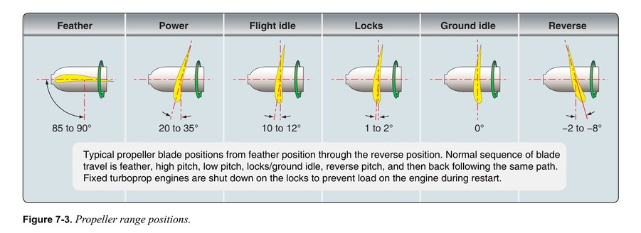
프로펠러 개요와 추력
Introduction & Thrust비행기는 동력장치가 공기 질량을 가속(운동량 증가)시켜 만든 추력으로 추진된다. 터보제트는 적은 공기를 크게 가속하고, 프로펠러 구동 엔진은 훨씬 많은 공기를 작게 가속한다. 고바이패스 터보팬의 팬은 프로펠러처럼 작용하며 전체 추력의 약 75%를 낸다.An airplane is propelled by thrust made when the powerplant accelerates a mass of air. A turbojet accelerates a small mass greatly; a propeller engine accelerates a much larger mass slightly. The fan of a high-bypass turbofan acts like a propeller and produces about 75% of total thrust.
초기 비행기 다수는 약한 엔진 출력을 추력으로 변환하지 못해 실패했다. 1903년 라이트 플라이어의 성공 비결 중 하나는 정교한 프로펠러 설계였다. 12마력 엔진으로 두 프로펠러가 90파운드 추력을 내 750파운드 기체를 날렸다. 직경 8.5피트 적층 가문비나무 프로펠러는 330 RPM에서 효율 66%였는데, 현대 프로펠러 최고 효율도 약 90%에 불과한 점을 보면 훌륭한 성과였다.Many early airplanes failed because their propellers could not convert engine power into thrust. One reason the 1903 Wright Flyer succeeded was careful propeller design: a 12-hp engine drove two propellers making 90 lb of thrust to fly the 750-lb airplane. The 8.5-ft laminated spruce propellers at 330 RPM had 66% efficiency — impressive given that a modern propeller's best efficiency is only about 90%.
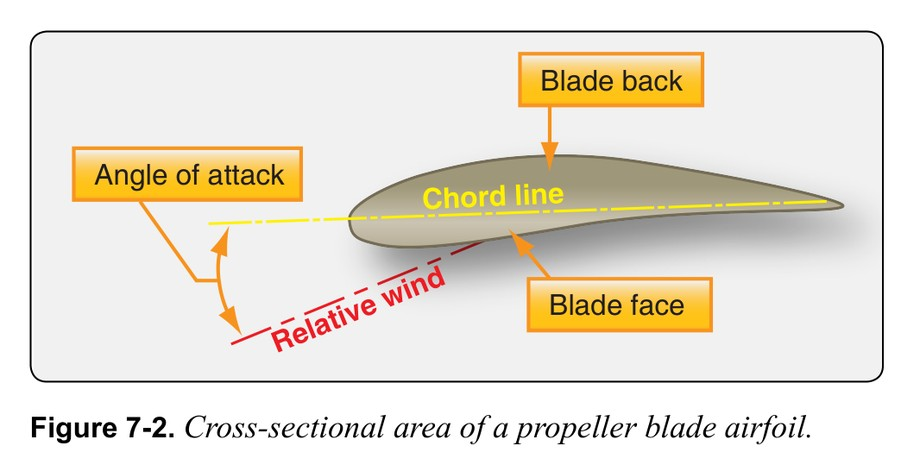
블레이드 각 지점의 속도가 다르다 — 팁(Tip)은 빠르고 허브(Hub)는 느리다.
그래서 블레이드에 비틀림(Twist/Blade angle 변화)을 줘 전체적으로 균일한 받음각을 만든다.
피치(Pitch): 프로펠러가 1회전에 이론상 전진하는 거리(기하학적 피치).
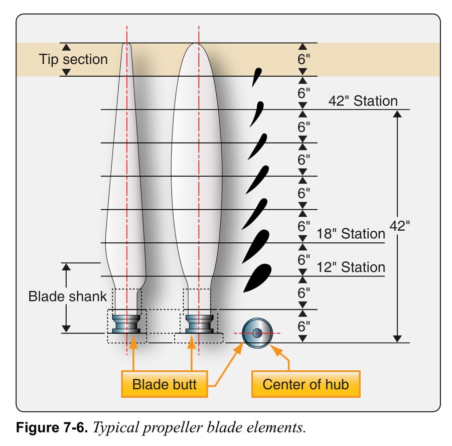
- A. 공력 비틀림력.Aerodynamic twisting force.
- B. 원심력(Centrifugal force).Centrifugal force.
- C. 추력 굽힘력.Thrust bending force.
- A. 저피치 블레이드 각도.low-pitch blade angle.
- B. 고피치 블레이드 각도(high-pitch blade angle).high-pitch blade angle.
- C. 중립 각도.neutral angle.
- A. 추력 굽힘력.Thrust-bending force.
- B. 공력 비틀림력.Aerodynamic-twisting force.
- C. 토크 굽힘력(Torque-bending force).Torque-bending force.
프로펠러에 작용하는 힘
Forces Acting on Propellers회전하는 프로펠러에는 여러 힘이 작용한다. 원심력(centrifugal force)은 블레이드를 허브에서 바깥으로 당기는 가장 큰 힘이다. 추력 굽힘력(thrust bending force)은 추력이 블레이드를 앞으로 휘게 하고, 토크 굽힘력(torque bending force)은 회전면에서 회전 반대방향으로 블레이드를 휘게 한다. 이 세 힘은 프로펠러를 튼튼하고 무겁게 만들 뿐 유용한 기능은 없다.Several forces act on a rotating propeller. Centrifugal force is the largest, pulling the blade outward from the hub. Thrust bending force tries to bend the blade forward; torque bending force tries to bend it in the plane of rotation, opposite to rotation. These three require the propeller to be strong and heavy but serve no useful function.
반면 두 가지 비틀림력은 가변피치 프로펠러의 피치 변경 기구에 유용하다. 공력 비틀림력(ATF)은 압력중심이 블레이드 회전축보다 앞전 쪽에 있어 블레이드 각도를 크게(고피치) 하려 한다. 원심 비틀림력(CTF)은 블레이드를 회전면으로 돌리려 해 각도를 작게(저피치) 하려 한다. CTF가 ATF보다 효과가 커서 합력은 블레이드를 저피치로 움직이려 한다.Two twisting forces are useful in the pitch-change mechanism of controllable-pitch propellers. Aerodynamic twisting force (ATF) tries to increase blade angle (high pitch) because the center of pressure is ahead of the blade's rotation axis. Centrifugal twisting force (CTF) tries to decrease blade angle (low pitch). CTF is stronger than ATF, so the net twisting force drives blades toward lower pitch.
많은 가변피치 프로펠러는 블레이드 섕크에 클램프한 암에 카운터웨이트(counterweight)를 달아 이 비틀림력의 효과를 조정한다.Many controllable-pitch propellers use counterweights on arms clamped around the blade shank to alter the effect of these twisting forces.
- A. 원심 비틀림력.Centrifugal twisting force.
- B. 공력 비틀림력(Aerodynamic twisting force).Aerodynamic twisting force.
- C. 추력 굽힘력.Thrust bending force.
- A. 토크 굽힘력.Torque-bending force.
- B. 원심 비틀림력.Centrifugal-twisting force.
- C. 추력 굽힘력(Thrust-bending force).Thrust-bending force.
- A. 항공기 종축에 대한 프로펠러 회전면.the plane of rotation of the propeller with respect to the aircraft longitudinal axis.
- B. 블레이드 각도가 규정 공차 내인지.that the blade angles are within the specified tolerance of each other.
- C. 프로펠러 블레이드 팁들의 서로에 대한 상대 위치(the positions of the tips of the propeller blades relative to each other).the positions of the tips of the propeller blades relative to each other.
고정피치(Fixed-pitch): 블레이드 각도 고정 — 구조 단순, 경비행기.
가변피치(Variable-pitch)·정속(Constant-speed): 비행 중 피치 조절.
기타: 가역피치(Reversing, 역추력), 페더링(Feathering, 정지 시 항력 최소).
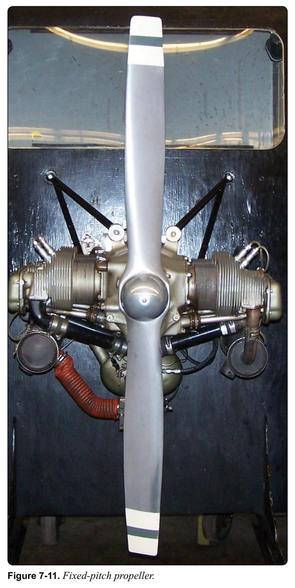
- A. 안티아이싱 유체 분배.distribute anti-icing fluid.
- B. 프로펠러 강화.strengthen the propeller.
- C. 엔진 나셀로 가는 냉각 공기 흐름 증가(increase the flow of cooling air to the engine nacelle).increase the flow of cooling air to the engine nacelle.
블레이드 스테이션(Station): 허브 중심에서의 거리 기준점.
블레이드 각(Blade angle): 회전면(Plane of rotation)과 블레이드 시위선의 각도.
받음각(AOA)은 블레이드 각과 전진속도에 따라 변한다.
정속프로펠러(Constant-Speed)는 비행 상태가 변해도 RPM을 일정하게 유지한다 — 최적 효율.
거버너(Governor)가 엔진오일 압력으로 블레이드 피치를 자동 조절한다.
출력↑ → 피치 증가(저rpm방지), 출력↓ → 피치 감소로 rpm 유지.
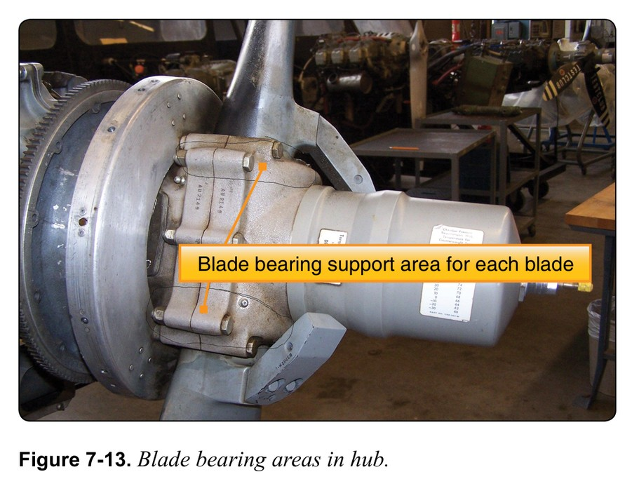
무(無)카운터웨이트 정속 프로펠러
Noncounterweight Constant-Speed Propellers일부 McCauley·Hartzell 정속 프로펠러는 카운터웨이트 없이 오일압력과 비틀림력의 조합으로 피치를 제어한다. 오일압력과 공력 비틀림력(ATF)으로 피치를 높이고, 원심 비틀림력(CTF)·내부 스프링·가스 충전압으로 피치를 낮춘다.Some McCauley and Hartzell constant-speed propellers have no counterweights; they control pitch with a combination of oil pressure and twisting forces. Oil pressure and aerodynamic twisting force (ATF) increase pitch, while centrifugal twisting force (CTF), an internal spring, and/or a gas charge decrease pitch.
엔진이 언더스피드(설정보다 느림)가 되면 거버너가 허브 실린더로 오일을 보내 피스톤을 움직여 피치를 낮추고 RPM을 올린다. 오버스피드가 되면 거버너가 오일을 빼내고, 스프링과 CTF가 피치를 높여 RPM을 낮춘다. 카운터웨이트형과 반대로 작동하므로 거버너 작동 방향에 유의해야 한다.When the engine is underspeed, the governor sends oil to the hub cylinder, moving the piston to lower pitch and raise RPM. When overspeed, the governor drains oil and the spring and CTF raise pitch to lower RPM. This is opposite to counterweight types, so governor action direction must be noted.
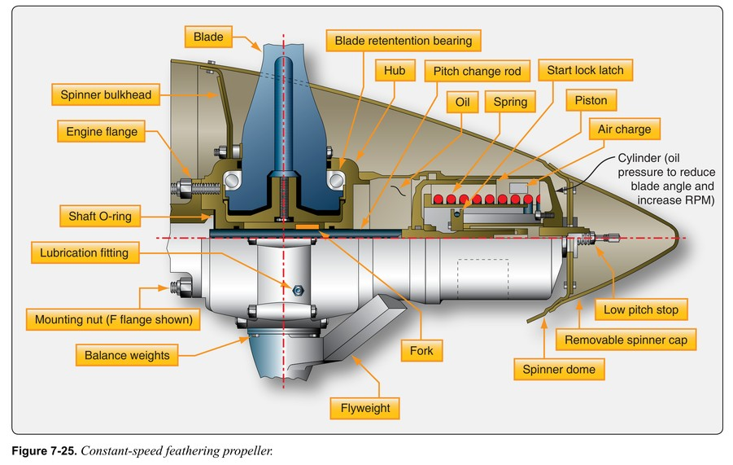
거버너(Governor)는 정속프로펠러의 두뇌 — 설정 RPM을 감지·유지한다.
구성: 플라이웨이트(Flyweight), 스피더 스프링(Speeder spring), 파일럿밸브(Pilot valve), 부스트펌프.
RPM 변화를 플라이웨이트가 감지해 오일흐름을 조절, 피치를 바꾼다.
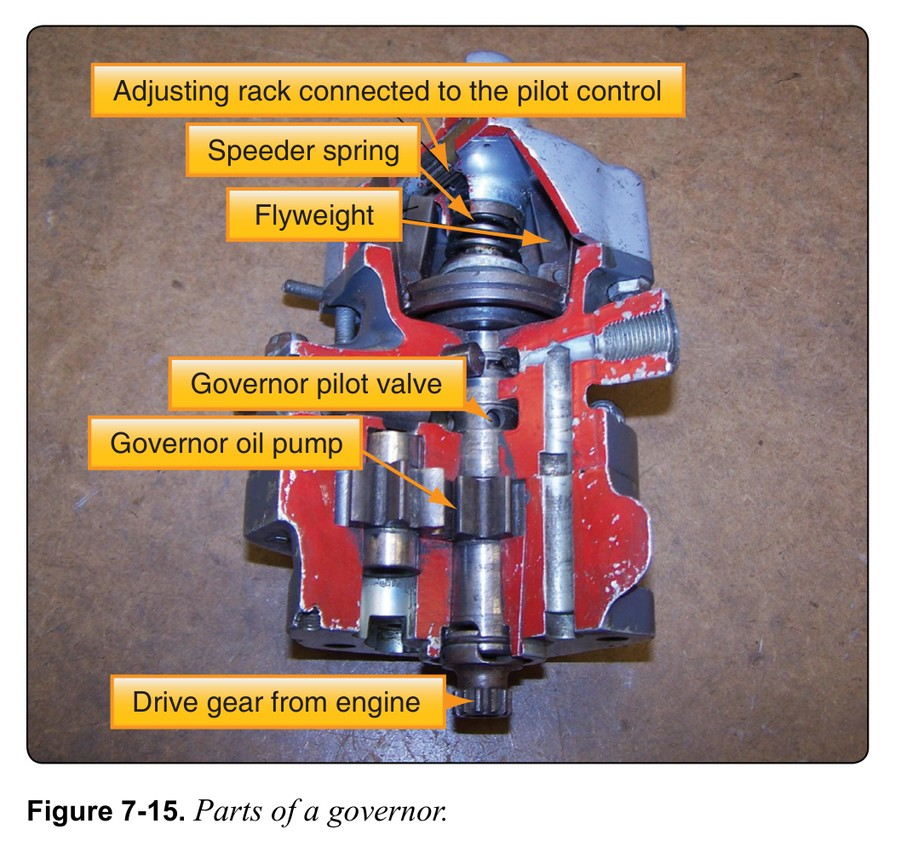
페더링(Feathering): 엔진정지 시 블레이드를 바람 방향에 평행하게 세워 항력·풍차회전(Windmilling) 방지.
다발기에서 한 엔진 고장 시 필수 기능.
역피치(Reversing): 착륙 시 블레이드를 음(-)의 각으로 돌려 역추력 — 제동.
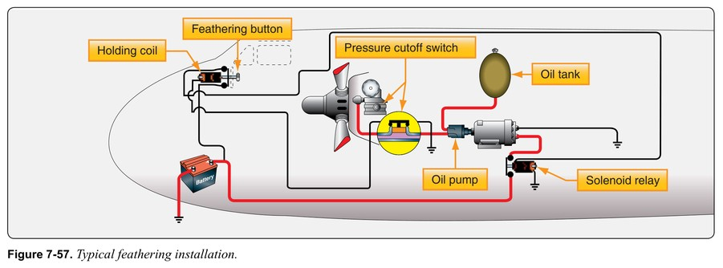
방빙·제빙(Anti-icing/De-icing): 블레이드 결빙은 추력 손실·진동 유발.
전기식: 디아이스 부트(De-ice boot)를 가열. 액체식: 알코올 분사.
블레이드 앞전을 따라 가열·분사해 결빙을 방지·제거한다.
📌 프로펠러 방빙·제빙 계통 검사와 수리 — 전기식 제빙 계통은 블레이드 뿌리 쪽의 제빙 부츠(가열 소자), 허브의 슬립 링과 브러시 블록, 타이머, 전류계로 이루어집니다. 검사는 부츠의 들뜸·찢어짐·과열 흔적, 소자 저항(매뉴얼 값), 슬립 링 표면의 탄 자국·홈과 브러시 마모·정렬, 배선 고정을 봅니다. 작동 점검은 계통을 켜고 전류계가 주기적으로 정해진 범위 안에서 움직이는지(타이머가 블레이드 구역을 차례로 가열), 손으로 각 부츠가 차례로 따뜻해지는지 확인합니다. 액체식 방빙은 저장 탱크·펌프·슬링어 링·노즐의 막힘을 봅니다. 부츠 수리는 제작사가 허용하는 범위에서만 합니다.📌 Inspecting and repairing propeller anti-icing and deicing systems — An electric deicing system consists of deicing boots (heating elements) at the blade roots, slip rings on the hub, a brush block, a timer, and an ammeter. Inspect the boots for lifting, tears, and signs of overheating, element resistance (manual values), slip ring surfaces for burn marks and grooves, brush wear and alignment, and wiring security. For an operational check, turn the system on and confirm that the ammeter cycles within the specified range (as the timer heats the blade zones in sequence) and that each boot warms in turn to the touch. For fluid anti-icing, check the tank, pump, slinger ring, and nozzles for blockage. Repair boots only within the limits the manufacturer allows.
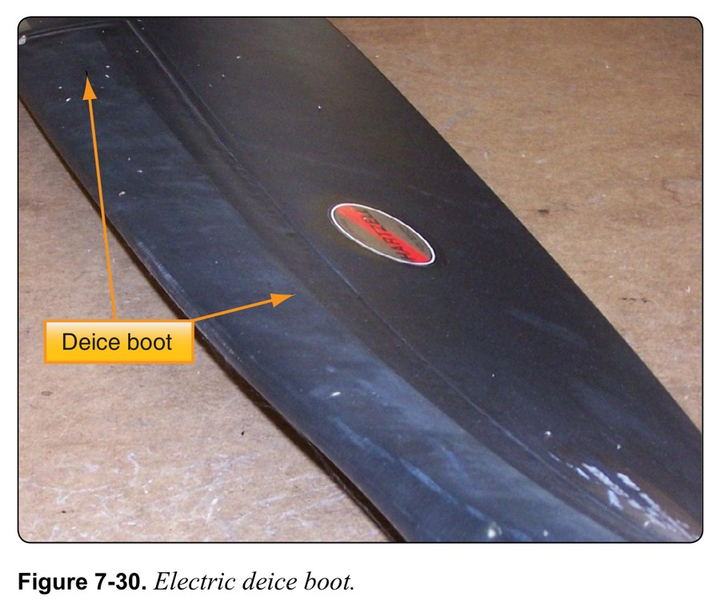
- A. 에틸렌 글리콜.Ethylene glycol.
- B. 이소프로필 알코올(Isopropyl alcohol).Isopropyl alcohol.
- C. 에틸 알코올.Ethyl alcohol.
- A. 압력 릴리프 밸브.Pressure relief valve.
- B. 레오스탯(Rheostat).Rheostat.
- C. 사이클링 타이머.Cycling timer.
- A. 부츠 가열 순서를 손으로 느끼고 보조자가 로드미터를 관찰(feeling the sequence of boot heating and have an assistant observe the loadmeter indications).feeling the sequence of boot heating and have an assistant observe the loadmeter indications.
- B. 전류 흐름을 보려고 암미터·로드미터 관찰.observing the ammeter or loadmeter for current flow.
- C. 부츠가 가열되는지 손으로 느낌.feeling the boots to see if they are heating.
- A. 엔진 간 프로펠러 위상각 조정(adjusting the phase angle between the propellers on an aircraft's engines).adjusting the phase angle between the propellers on an aircraft's engines.
- B. 모든 프로펠러의 회전면 조정.adjusting the plane of rotation of all propellers.
- C. 모든 프로펠러의 피치 각도를 정확히 동일하게 설정.setting the pitch angle of all propellers exactly the same.
점검 항목: 블레이드 균열·부식·니크(Nick)·찍힘, 허브 누유, 트랙(Track) 정렬.
⚠️ 앞전 손상은 응력집중 → 피로파괴 위험 — 즉시 처리.
니크·긁힘은 규정 범위 내에서 매끈하게 다듬는다(Dress out).
📌 프로펠러 지상 운전의 위험 — 프로펠러 회전면은 돌고 있으면 거의 보이지 않으므로, 지상 운전 때는 회전면 주위를 비우고 누구도 회전면 앞뒤로 지나가지 않게 합니다. 운전 전 프로펠러 주변의 자갈·이물질을 치워 블레이드 찍힘을 막고, 블레이드에 찍힘이 생기면 균열의 시작점이 되므로 운전 후 확인합니다. 정비 운전은 바퀴 고임목·브레이크·바람 방향을 확인하고, 피치 조절(거버너) 점검처럼 높은 출력이 필요한 운전은 매뉴얼의 시간 제한을 지킵니다.📌 Hazards of propeller ground operation — A turning propeller arc is nearly invisible, so during ground runs keep the area around the arc clear and let no one pass in front of or behind it. Before a run, clear gravel and debris around the propeller to prevent blade nicks, and check the blades afterward, since a nick becomes the starting point of a crack. For maintenance runs, confirm chocks, brakes, and wind direction, and observe the manual's time limits for high-power runs such as governor (pitch control) checks.
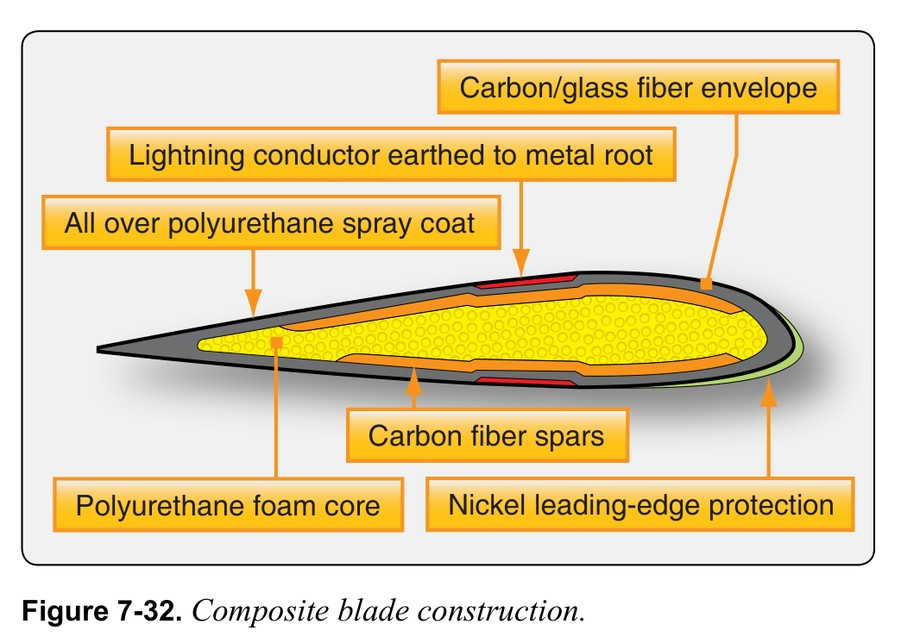
- A. 양극산화로.By anodizing.
- B. 자분탐상검사로(By magnetic particle inspection).By magnetic particle inspection.
- C. 에칭으로.By etching.
- A. 육안, 형광침투, 자분탐상(Visual, fluorescent penetrant, or magnetic particle).Visual, fluorescent penetrant, or magnetic particle.
- B. 에칭과 양극산화만.Etching and anodizing only.
- C. 침투탐상만.Dye-penetrant only.
- A. 침투탐상검사 실패.Dye-penetrant inspection failure.
- B. 프로펠러 블레이드 후연의 본딩 또는 분리(Bonding or separation of the trailing edge of the propeller blade).Bonding or separation of the trailing edge of the propeller blade.
- C. 탭 테스트로 발견된 박리.Delamination found by conducting a tap test.
- A. 1만 옳다.only 1 is true.
- B. 1, 2 모두 옳다.both 1 and 2 are true.
- C. 둘 다 옳지 않다(neither 1 nor 2 is true).neither 1 nor 2 is true.
- A. 원래 강도 복원을 위해 신중한 가열 후 열처리.Careful heating to accomplish straightening, followed by heat treatment to restore original strength.
- B. 위치·손상 정도에 따라 가열 또는 냉간 교정.Either hot or cold straightening, depending on the location and severity of damage.
- C. 냉간 교정만(Cold straightening only).Cold straightening only.
- A. 블레이드 간 동등한 공력 특성 유지.maintain equal aerodynamic characteristics between the blades.
- B. 응력 집중점 제거(eliminate stress concentration points).eliminate stress concentration points.
- C. 블레이드 간 원심 하중 균등화.equalize the centrifugal loads between the blades.
- A. 밝은 조명 사용.Use a bright light.
- B. 자분탐상.Magnetic particle.
- C. 침투탐상(Dye-penetrant).Dye-penetrant.
- A. 표면 바로 아래 결함이 표시됨.defects just below the surface are indicated.
- B. 보이는 선·표시가 실제 균열인지 스크래치인지 보여줌(it shows whether visible lines and other marks are actually cracks rather than scratches).it shows whether visible lines and other marks are actually cracks rather than scratches.
- C. 오버스피드 상태를 표시함.it indicates overspeed condition.
- A. 부식.corrosion.
- B. 불균형 공력.unbalanced aerodynamics.
- C. 피로 파손(fatigue failure).fatigue failure.
- A. 블레이드 페이스 표면 손상.Blade face surface damage.
- B. 전연 또는 후연 손상.Leading or trailing edge damage.
- C. 어떤 크기든 횡방향 균열(Transverse cracks of any size).Transverse cracks of any size.
- A. 파워플랜트 등급 정비사 자격증 소지자.the holder of a mechanic certificate with a powerplant rating.
- B. 적절히 인가된 수리소 또는 제작사(an appropriately rated repair station or the manufacturer).an appropriately rated repair station or the manufacturer.
- C. 양 등급(기체·파워플랜트) 자격증 소지자 감독 하의 작업자.a person working under the supervision of the holder of a mechanic certificate with both airframe and powerplant ratings.
진동(Vibration)은 블레이드 손상·불균형·트랙 불량의 신호.
정적 밸런싱(Static)·동적 밸런싱(Dynamic)으로 불균형을 잡는다.
동적 밸런싱은 작동 중 진동을 센서로 측정해 웨이트를 조정한다.
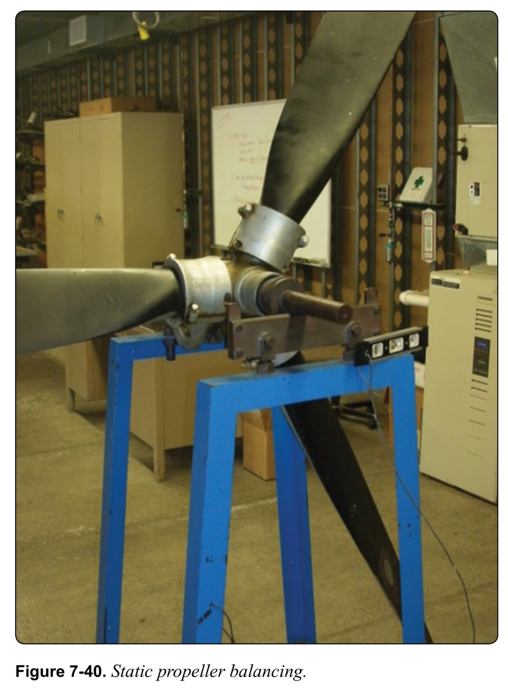
- A. 수직(Vertical).Vertical.
- B. 수평.Horizontal.
- C. 조화(Harmonic).Harmonic.
- A. 모든 속도에서 거의 같음.approximately the same at all speeds.
- B. 저RPM에서 더 큼.greater at low RPM.
- C. 고RPM에서 더 큼(greater at high RPM).greater at high RPM.
- A. 연료 소비가 과도해서.fuel consumption is excessive.
- B. 심한 진동으로 프로펠러·엔진이 손상될 수 있어서(severe vibration may damage the propeller or engine).severe vibration may damage the propeller or engine.
- C. 프로펠러 효율이 가장 낮아서.propeller efficiency is lowest.
탈장착 시 허브·샤프트 손상 방지, 규정 토크 준수가 핵심.
서비싱: 윤활(Lubrication), 오일 보충, 블레이드 청결 유지.
재장착 후 트랙·밸런스 재확인 필수.
📌 프로펠러 윤활 — 정속 프로펠러 허브는 제작사가 정한 주기와 그리스 규격으로 윤활합니다. 보통 허브의 그리스 니플 반대쪽 피팅을 빼서 출구를 연 뒤 니플로 그리스를 넣고, 정해진 양을 넣거나 출구로 깨끗한 그리스가 나오면 멈춥니다. 출구를 열지 않고 넣으면 허브 안의 압력이 올라 실이 손상되거나 블레이드 평형이 바뀔 수 있으므로 넣는 양을 지킵니다. 다른 종류의 그리스를 섞지 않고, 작업 후 피팅을 다시 달고 남은 그리스를 닦아 냅니다. 블레이드 클램프 부위에서 그리스가 새면 실 문제이므로 기록합니다.📌 Performing propeller lubrication — Lubricate a constant-speed propeller hub at the interval and with the grease specification the manufacturer sets. Usually, remove the fitting opposite the grease nipple to open an outlet, pump grease in through the nipple, and stop after the specified amount or when clean grease appears at the outlet. Greasing without opening the outlet raises pressure in the hub, which can damage seals or change blade balance, so observe the specified amount. Do not mix grease types; reinstall the fitting afterward and wipe off excess grease. Grease leaking from the blade clamp area indicates a seal problem and should be recorded.
- A. 윤활유 제작사 지침.Lubricant manufacturer's instructions.
- B. 엔진 제작사 지침.Engine manufacturer's instructions.
- C. 프로펠러 제작사 지침(Propeller manufacturer's instructions).Propeller manufacturer's instructions.
- A. 엔진 오일.engine oil.
- B. 맑은 물(fresh water).fresh water.
- C. 비눗물.soapy water.
- A. 블레이드의 양쪽 저크 피팅 모두에 동시에 그리스 주입.pump grease into both zerk fittings for the blade simultaneously.
- B. 그리스 작업 전 씰을 제거하고 작업 후 재장착.remove the seals prior to greasing and reinstall them afterwards.
- C. 블레이드의 두 저크 피팅 중 하나를 제거하고 남은 피팅으로 그리스 주입(remove one of the two zerk fittings for the blade and grease the blade through the remaining fitting).remove one of the two zerk fittings for the blade and grease the blade through the remaining fitting.
- A. 10시간 작동 후.after 10 hours of operation.
- B. 다음 100시간 검사 시.at the next 100-hour inspection.
- C. 1~2시간 작동 후(after one to two hours of operation).after one to two hours of operation.
터보프롭(Turboprop)은 터빈엔진 + 감속기어(Reduction gear) + 프로펠러 조합.
감속기어가 고속 터빈축을 프로펠러에 맞는 회전수로 낮춘다.
예: PT6 엔진의 Hartzell 프로펠러 시스템 — 베타(Beta) 영역 제어로 지상 핸들링.
📌 프로펠러 운용 범위 식별 — 터보프롭 프로펠러는 알파(alpha) 범위(비행 범위: 거버너가 회전수를 일정하게 유지하며 피치를 조절)와 베타(beta) 범위(지상 범위: 동력 레버로 블레이드 각을 직접 조절하며 저피치·제로 피치·역피치까지)로 나뉩니다. 동력 레버를 플라이트 아이들 아래로 내리면 베타 범위로 들어가며, 조종석에는 베타 등이 켜집니다. 그 밖에 블레이드가 바람과 나란해져 항력을 최소로 하는 페더(feather) 위치와, 지상 시동용 시동 잠금(start lock)이 있습니다. 정비사는 각 범위의 블레이드 각과 조종석 레버 위치, 표시등이 매뉴얼과 맞는지 확인합니다.📌 Identifying a propeller's ranges of operation — Turboprop propellers operate in an alpha range (the flight range, where the governor holds RPM constant by adjusting pitch) and a beta range (the ground range, where the power lever directly sets blade angle, down through low pitch, zero pitch, and reverse). Moving the power lever below flight idle enters the beta range, and the cockpit beta light comes on. There are also the feather position, where the blades align with the airflow to minimize drag, and start locks for ground starting. The mechanic confirms that blade angles, cockpit lever positions, and indicator lights for each range match the manual.
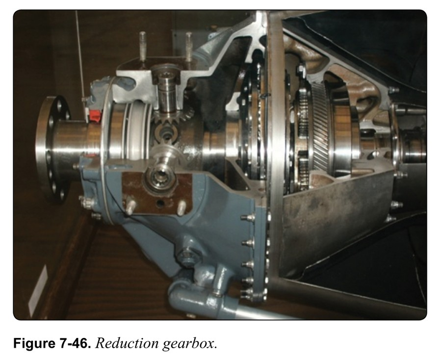
- A. 오일 압력이 감소하면 리턴 스프링과 플라이웨이트가 서보 피스톤에서 오일을 밀어낸다(When oil pressure is decreased, the return spring and flyweights force the oil out of the servo piston).When oil pressure is decreased, the return spring and flyweights force the oil out of the servo piston.
- B. 오일 압력이 증가하면 서보 피스톤이 앞으로 밀리고 페더 스프링이 압축된다.As oil pressure increases, the servo piston is pushed forward, and the feather spring is compressed.
- C. 오일 압력이 증가하면 리턴 스프링과 플라이웨이트가 서보 피스톤에서 오일을 밀어낸다.When oil pressure is increased, the return spring and flyweights force the oil out of the servo piston.
하이드로매틱(Hydromatic): 오일압력으로 피치를 양방향 제어하는 정밀 시스템.
돔(Dome) 내부 피스톤·캠으로 블레이드 각을 정밀 조절.
대형 왕복엔진·초기 터보프롭에 널리 쓰였다.
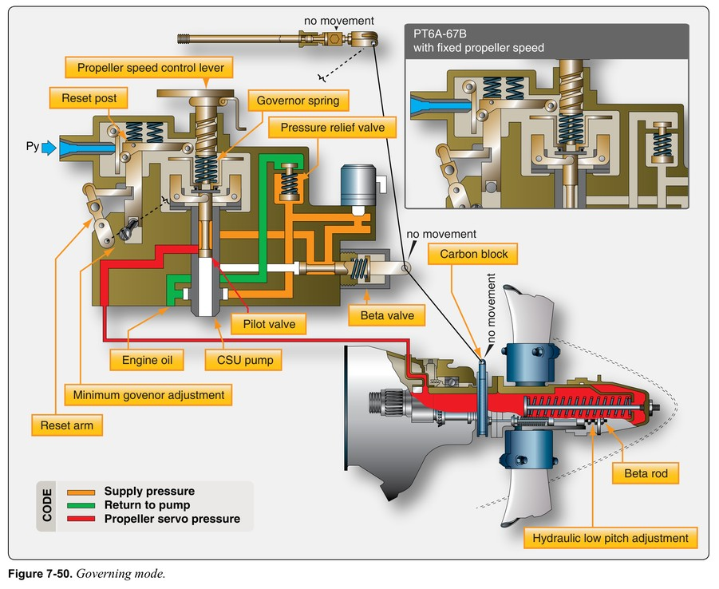
프로펠러 작동 원리 📙 Jeppesen 참고
Propeller Operating Principles프로펠러는 회전하는 날개로 엔진출력을 추력으로 바꿉니다. 블레이드각(blade angle)은 회전면과 시위선의 각이고, 피치(pitch)는 1회전당 이론 전진거리입니다. 반경 방향으로 속도가 달라 뿌리는 크고 팁은 작은 비틀림(twist)을 줘 받음각을 일정하게 합니다. 고정피치는 한 조건에만 최적이고, 정속(constant-speed) 프로펠러는 거버너(governor)가 피치를 자동 조절해 설정 RPM을 유지합니다 — 상승 시 저피치·고RPM, 순항 시 고피치·저RPM.A propeller is a rotating airfoil converting engine power into thrust. Blade angle is between the plane of rotation and the chord line; pitch is the theoretical advance per revolution. Because speed varies along the radius, blades are twisted — high at the root, low at the tip — to keep angle of attack even. Fixed-pitch is optimal for one condition, while a constant-speed propeller uses a governor to adjust pitch automatically and hold a set RPM — low pitch/high RPM in climb, high pitch/low RPM in cruise.
거버너는 플라이웨이트와 스피더 스프링의 균형으로 오일압을 조절해 피치를 바꿉니다. 페더링(feathering)은 엔진정지 후 블레이드를 약 90°로 돌려 항력·풍차회전을 없애고, 역피치(reverse)는 음의 각으로 역추력을 냅니다. 헌팅·서징(주기적 RPM 변동)은 거버너 불안정·공기혼입, 오버스피드는 거버너 불량·피치 저각 고착·오일압 부족이 원인입니다.The governor balances flyweights against a speeder spring to modulate oil pressure and change pitch. Feathering turns blades to ~90° after engine failure to kill drag and windmilling; reverse uses a negative angle for reverse thrust. Hunting/surging (cyclic RPM) comes from an unstable governor or trapped air, and overspeed from a bad governor, low-pitch lock, or low oil pressure.
- A. 회전면(The plane of rotation).The plane of rotation.
- B. 상대풍.The relative wind.
- C. 피치 변경 시 블레이드 회전축.The axis of blade rotation during pitch change.
- A. 블레이드 회전면.Plane of blade rotation.
- B. 전 저피치 블레이드 각도.Full low-pitch blade angle.
- C. 상대 기류(Relative airstream).Relative airstream.
프로펠러 공기역학·작용력과 진동 응력 심화 📙 Jeppesen 정독
Propeller Aerodynamics, Forces, and Vibrational Stress프로펠러 블레이드의 가장 효과적인 받음각(angle of attack)은 2도에서 4도 사이입니다. 15도를 초과하는 받음각은 프로펠러 블레이드가 실속할 수 있어 비효율적입니다. 일반적으로 고정 블레이드 각도를 가진 프로펠러는 특정 속도 설정에서 상승 또는 순항 대기속도로 2~4도의 받음각을 내도록 설계됩니다. 균일한 속도로 공기를 지나는 날개와 달리, 프로펠러의 팁 근처 단면은 허브 근처보다 더 큰 속도로 회전합니다. 이 회전 속도 차를 보상하기 위해 블레이드 각도가 길이를 따라 변합니다. 허브에서 팁으로 갈수록 블레이드 각도가 점진적으로 감소하는 것을 피치 분포(pitch distribution) 또는 트위스트(twist)라 하며, 트위스트는 블레이드 대부분의 길이에서 상당히 일정한 받음각을 제공합니다. 트위스트에 더해 대부분의 프로펠러는 블레이드 허브 근처에 더 두꺼운 저속 에어포일을, 팁 근처에 더 얇은 고속 에어포일을 두어, 블레이드 전 길이에서 비교적 일정한 추력을 내게 합니다.A propeller blade's most effective angle of attack is between 2 and 4 degrees; above 15 degrees the blade may stall, making it ineffective. Fixed-blade-angle propellers are typically designed to produce 2 to 4 degrees at a climb or cruise airspeed with a specific speed setting. Unlike a wing moving through air uniformly, sections near the tip rotate faster than those near the hub. To compensate, blade angle changes along its length: the gradual decrease from hub to tip is pitch distribution, or twist, giving a fairly constant angle of attack over most of the blade. Besides twist, most propellers use a thicker low-speed airfoil near the hub and a thinner high-speed airfoil near the tip for relatively constant thrust along the blade.
회전하는 프로펠러는 인장·비틀림·굽힘 응력을 일으키는 많은 힘을 받습니다. 프로펠러에 작용하는 모든 힘 중 원심력(centrifugal force)이 가장 큰 응력을 일으킵니다. 원심력은 블레이드를 허브에서 밖으로 당기는 경향의 힘으로 설명할 수 있습니다. 원심력이 만드는 응력의 양은 프로펠러 블레이드 무게의 7,500배 이상일 수 있습니다. 추력 굽힘력(thrust bending force)은 프로펠러 블레이드를 팁에서 앞으로 구부리는 경향이 있습니다. 프로펠러 블레이드는 보통 팁 근처가 더 얇으므로 팁에서 생산된 추력이 블레이드를 앞으로 휘게 하는 경향이 있으며, 추력 굽힘력은 어느 정도 원심력에 대항합니다.A rotating propeller is subjected to many forces causing tension, twisting, and bending stresses; of all of them, centrifugal force causes the greatest stress—the force tending to pull the blades out of the hub, which can be more than 7,500 times the blade's weight. Thrust bending force tends to bend the blades forward at the tips: because blades are thinner near the tip, thrust there flexes the blade forward, and thrust bending force opposes centrifugal force to some degree.
프로펠러는 왕복엔진의 공력 진동과 동력 펄스로 인한 기계적 진동을 받습니다. 둘 중 기계적 진동이 공력 진동보다 더 파괴적으로 간주됩니다. 그 이유는 엔진 동력 펄스가 프로펠러 블레이드에 정상파(standing wave) 패턴을 만드는 경향이 있어 재료 피로와 구조적 파손으로 이어질 수 있기 때문입니다. 블레이드의 응력 지점의 위치와 수는 프로펠러와 엔진의 개별 조합 특성에 달려 있습니다. 진동 응력의 집중은 블레이드의 어느 지점에서든 해롭지만, 가장 임계적인 위치는 블레이드 팁까지의 바깥쪽 6인치입니다.Propellers are subjected to aerodynamic vibrations and mechanical vibrations from a reciprocating engine's power pulses; of the two, mechanical vibrations are considered more destructive because engine power pulses tend to create standing wave patterns in a blade that can lead to material fatigue and structural failure. The location and number of stress points depend on the individual propeller-engine combination; concentrations of vibrational stress are detrimental anywhere on a blade, but the most critical location is the outboard six inches to the blade tips.
대부분의 기체-엔진-프로펠러 조합 설계는 진동 응력의 해로운 영향을 제거해 왔습니다. 그럼에도 일부 엔진과 프로펠러 조합은 심한 프로펠러 진동이 발생할 수 있는 임계 범위(critical range)를 가집니다. 이 경우 임계 범위는 태코미터에 레드 아크(red arc)로 표시됩니다. 임계 범위에서의 엔진 작동은 한 속도 설정에서 다른 설정으로의 짧은 통과로 제한해야 합니다. 임계 범위에서 장시간 엔진을 작동하면 프로펠러나 항공기의 구조적 파손으로 이어질 수 있습니다. 프로펠러 설계는 보통 어느 정도의 진동 응력을 수용하지만, 프로펠러가 부적절하게 변경된 상황에서는 진동이 과도한 휨과 금속의 가공경화를 유발할 수 있습니다. 심한 경우 이 손상으로 프로펠러 블레이드 일부가 비행 중 부러져 나갈 수 있습니다.Most airframe-engine-propeller designs have eliminated the detrimental effects of vibrational stress; nevertheless, some combinations have a critical range where severe propeller vibration can occur, indicated on the tachometer by a red arc. Engine operation in the critical range should be limited to a brief passage from one speed setting to another, since extended operation there can cause structural failure of the propeller or aircraft. Propeller design typically accommodates some vibrational stress, but if a propeller is improperly altered, vibration can cause excessive flexing and work-hardening of the metal—severely, sections of a blade can break off in flight.
- A. 항공기 고정 날개에 양력 생성.create lift on the fixed airfoils of an aircraft.
- B. 엔진 마력을 추력으로 변환(change engine horsepower to thrust).change engine horsepower to thrust.
- C. 비행 중 항공기에 정적·동적 안정성 제공.provide static and dynamic stability of an aircraft in flight.
- A. 블레이드를 고 블레이드 각도로 회전시키려 한다(It tends to turn the blades to a high blade angle).It tends to turn the blades to a high blade angle.
- B. 블레이드를 앞으로 휘게 하려 한다.It tends to bend the blades forward.
- C. 블레이드를 저 블레이드 각도로 회전시키려 한다.It tends to turn the blades to a low blade angle.
- A. 프로펠러 뒤쪽의 저압 구역.an area of low pressure behind the propeller blades.
- B. 프로펠러 블레이드 바로 앞쪽의 감소된 압력 구역(an area of decreased pressure immediately in front of the propeller blades).an area of decreased pressure immediately in front of the propeller blades.
- C. 프로펠러의 상대풍 각도와 회전 속도.the angle of relative wind and rotational velocity of the propeller.
- A. 피치 각도를 증가시킨다.increase the pitch angle.
- B. 피치 각도를 감소시킨다(reduce the pitch angle).reduce the pitch angle.
- C. 블레이드를 회전 방향으로 휘게 한다.bend the blades in the direction of rotation.
- A. 피치 각도를 감소시킴.reduce the pitch angle.
- B. 피치 각도를 증가시킴(increase the pitch angle).increase the pitch angle.
- C. 블레이드를 비행 방향 뒤로 휘게 함.bend the blades rearward in the line of flight.
- A. 공력 비틀림력보다 크고 블레이드를 더 높은 각도로 이동시키려 한다.greater than the aerodynamic twisting force and tends to move the blade to a higher angle.
- B. 공력 비틀림력보다 작고 블레이드를 더 낮은 각도로 이동시키려 한다.less than the aerodynamic twisting force and tends to move the blade to a lower angle.
- C. 공력 비틀림력보다 크고 블레이드를 더 낮은 각도로 이동시키려 한다(greater than the aerodynamic twisting force and tends to move the blade to a lower angle).greater than the aerodynamic twisting force and tends to move the blade to a lower angle.
- A. 블레이드 백(Blade back).Blade back.
- B. 블레이드 코드.Blade chord.
- C. 블레이드 페이스.Blade face.
- A. 팁에서 가장 크다.is greatest at the tip.
- B. 팁에서 가장 작다(is smallest at the tip).is smallest at the tip.
- C. 허브에서의 거리에 비례해 증가한다.increases in proportion to the distance each section is from the hub.
- A. 스로틀을 열면 블레이드 각도가 증가한다(Opening the throttle will cause an increase in blade angle).Opening the throttle will cause an increase in blade angle.
- B. RPM이 스로틀 움직임에 정비례해 변한다.The RPM will vary directly with any movement of the throttle.
- C. 스로틀 움직임은 블레이드 각도에 영향을 주지 않는다.Movement of the throttle will not affect the blade angle.
- A. 심한 프로펠러 진동(severe propeller vibration).severe propeller vibration.
- B. 저추력 또는 음추력 조건.low or negative thrust conditions.
- C. 비효율적 프로펠러 피치 각도.inefficient propeller pitch angles.
- A. 불균형과 진동 유발(produce unbalance and vibration).produce unbalance and vibration.
- B. 추력과 항력 증가.increase thrust and drag.
- C. 블레이드 각도 변화 유발.cause a change in blade angle.
- A. 올바른 블레이드 윤곽 가공과 각도 설정(correct blade contouring and angle setting).correct blade contouring and angle setting.
- B. 정적 밸런싱.static balancing.
- C. 프로펠러 블레이드를 같은 회전면 내에 유지.keeping the propeller blades within the same plane of rotation.
프로펠러 피치·분류와 구조 심화 📙 Jeppesen 정독
Propeller Pitch, Classification, and Construction엄밀한 의미에서 프로펠러 피치(pitch)는 프로펠러가 1회전에 세로 방향으로 전진하는 이론적 거리입니다. 피치와 블레이드 각도는 두 개의 다른 개념을 설명하지만 밀접하게 관련되어 두 용어가 종종 혼용됩니다. 예를 들어 프로펠러가 고정 피치라고 할 때 실제 의미는 프로펠러 블레이드가 고정 블레이드 각도로 설정됐다는 것입니다. 프로펠러의 지오메트릭 피치(geometric pitch)는 프로펠러가 고체 매질을 지나 효율 손실이 전혀 없다면 1회전에 전진할 인치 단위 거리로 정의됩니다. 지오메트릭 피치 측정은 프로펠러 허브에서 블레이드 길이의 75퍼센트 지점의 블레이드 각도를 기준으로 합니다.Strictly, propeller pitch is the theoretical distance a propeller advances longitudinally in one revolution. Pitch and blade angle describe different concepts but are closely related and often used interchangeably—when a propeller is said to have fixed pitch, it means the blades are set at a fixed blade angle. Geometric pitch is the distance in inches a propeller would move forward in one revolution through a solid medium with no efficiency loss, measured at the blade angle at a point 75 percent of the blade length from the hub.
공기를 지날 때 비효율성 때문에 프로펠러는 지오메트릭 피치와 같은 비율로 전진하지 못합니다. 따라서 이펙티브 피치(effective pitch)는 프로펠러가 1회전에 실제로 전진하는 양입니다. 이펙티브 피치는 항공기가 지상에 정지해 있을 때 0에서 가장 효율적인 비행 조건에서 지오메트릭 피치의 약 90퍼센트까지 변합니다. 지오메트릭 피치와 이펙티브 피치의 차이를 슬립(slip)이라 하며, 프로펠러 슬립은 비효율성으로 인한 총 손실을 나타냅니다. 예를 들어 프로펠러의 지오메트릭 피치가 50인치이면 이론상 1회전에 50인치 전진해야 하지만, 실제로 1회전에 35인치만 전진하면 이펙티브 피치는 35인치이고 프로펠러는 70퍼센트 효율입니다. 이 경우 슬립은 15인치, 즉 30퍼센트의 효율 손실을 나타냅니다. 실제로 대부분의 프로펠러는 75~85퍼센트 효율입니다.Traveling through air, inefficiencies prevent a propeller from advancing at its geometric pitch, so effective pitch is the actual forward movement per revolution—varying from zero when stationary on the ground to about 90 percent of geometric pitch in the most efficient flight. The difference between geometric and effective pitch is slip, representing total losses from inefficiencies. If geometric pitch is 50 inches, in theory it moves forward 50 inches per revolution, but if it actually moves only 35, effective pitch is 35 inches and it's 70 percent efficient—slip is 15 inches or a 30 percent loss. In practice most propellers are 75 to 85 percent efficient.
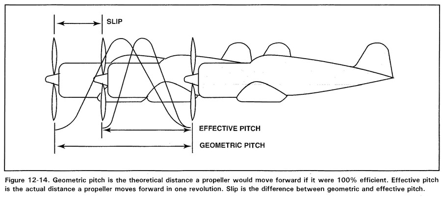
프로펠러는 보통 항공기에서의 위치에 따라 분류됩니다. 트랙터 프로펠러(tractor propeller)는 엔진 앞쪽에 있어 항공기를 공기 속으로 당깁니다. 푸셔 프로펠러(pusher propeller)는 엔진 뒤쪽에 있어 항공기를 공기 속으로 밉니다. 대부분의 항공기는 트랙터형 프로펠러를 장착하지만, 여러 수상기와 일부 다른 항공기는 푸셔 프로펠러를 장착합니다. 트랙터형의 주요 장점은 비교적 방해받지 않는 공기에서 회전해 더 낮은 응력을 받는 것입니다. 육상기에서 프로펠러-지면 간극이 작으면 바퀴에 튄 돌·자갈이 자주 푸셔 프로펠러로 던져지거나 빨려 들어가 트랙터보다 손상되기 쉽습니다. 반면 일부 수상기는 물과 프로펠러 사이 적절한 간극 유지가 어려워 트랙터 프로펠러 장착이 비실용적입니다.Propellers are typically classified by position: tractor propellers are on the front and pull the aircraft, while pusher propellers are on the aft end and push it. Most aircraft use tractor types, but several seaplanes and a few others use pushers; a major tractor advantage is lower stress from rotating in relatively undisturbed air. On land planes with little propeller-to-ground clearance, rocks and gravel from the wheels are often thrown or drawn into a pusher, damaging it more than a tractor, while some seaplanes can't practically fit a tractor due to water clearance.
프로펠러는 피치를 설정하는 방법으로도 흔히 분류됩니다: 고정피치, 지상조정, 가변피치, 정속, 역피치, 페더링입니다. 가장 단순한 것은 고정피치(fixed-pitch) 프로펠러로, 특정 회전·전진 속도에서 최적 효율을 냅니다. 낮은 블레이드 각도의 고정피치(상승 프로펠러)는 이륙·상승에 최적이고, 높은 블레이드 각도(순항 프로펠러)는 고속 순항·고고도 비행에 적합합니다. 지상조정(ground-adjustable) 프로펠러는 비행 중 각도를 못 바꾸지만 지상에서 각도를 바꿀 수 있으며 주로 1920~1940년대 항공기에 쓰였습니다. 가변피치(controllable-pitch) 프로펠러는 프로펠러가 회전하는 동안 각도를 바꿀 수 있어 특정 비행 조건에 맞춘 성능 개선이 가능합니다. 정속(constant-speed) 프로펠러(자동 프로펠러)는 조종사가 선택한 회전 속도를 유지하며, 거버너(governor)라는 장치가 오일 압력으로 블레이드 피치를 제어합니다.Propellers are also classified by how pitch is set: fixed-pitch, ground-adjustable, controllable-pitch, constant-speed, reversible, and feathering. The simplest, fixed-pitch, gives optimum efficiency at a specific rotational and forward speed—a low blade angle (climb propeller) is best for takeoff and climb, a high angle (cruise propeller) suits high-speed cruise and high altitude. Ground-adjustable propellers can't change in flight but can be changed on the ground, used mainly on 1920s–1940s aircraft. Controllable-pitch propellers can change angle while rotating for improved performance in a given condition. Constant-speed (automatic) propellers maintain the pilot-selected speed, with a governor using oil pressure to control blade pitch.
역피치(reversible-pitch) 프로펠러는 정속 프로펠러의 추가 발전형으로, 블레이드를 음(-)의 각도로 회전시켜 역추력을 내 공기를 뒤가 아닌 앞으로 밀어 착륙 활주를 줄이고 지상 기동을 개선합니다. 대부분의 다발 항공기는 페더링(feathering) 가능한 프로펠러를 장착합니다. 페더링 프로펠러는 정속 프로펠러의 일종으로, 각 블레이드의 리딩 에지가 바람을 향해 똑바로 앞을 가리키도록 블레이드를 회전시킬 수 있습니다. 조종사가 페더 위치를 선택하는 유일한 경우는 엔진이 고장 났을 때로, 블레이드를 페더 위치에 두면 풍차처럼 도는(windmilling) 프로펠러와 관련된 항력 대부분이 제거됩니다. 거의 모든 프로펠러는 목재·강철·알루미늄·복합재 또는 재료 조합으로 만들어집니다. 항공 초기에는 모든 프로펠러가 목재였는데, 자작나무·단풍나무 같은 경목은 소형기 저출력 엔진용 프로펠러에 필요한 유연성과 강도를 지녔고 목재의 분자 구조가 엔진 진동을 크게 흡수하며 공명 진동에 저항합니다. 목재의 손상 취약성 때문에 강철 프로펠러가 보급됐고, 오늘날은 알루미늄 합금과 복합재가 고정·조정 피치 프로펠러 모두에 쓰입니다.Reversible-pitch propellers develop the constant-speed type further, rotating blades to a negative angle for reverse thrust—forcing air forward instead of backward for a shorter landing roll and better ground maneuvering. Most multi-engine aircraft have feathering propellers: a constant-speed type that can rotate the blades so each leading edge points straight forward into the wind, selected only if an engine fails, which eliminates much of the drag of a windmilling propeller. Almost all propellers are wood, steel, aluminum, composite, or a combination; early propellers were all wood—hardwoods like birch and maple have the flexibility and strength for low-horsepower small-aircraft engines, and wood's molecular structure absorbs engine vibration and resists resonant vibrations. Wood's susceptibility to damage made steel propellers prevalent, and today aluminum alloys and composites are used for both fixed- and adjustable-pitch propellers.
- A. 유효 피치(effective pitch).effective pitch.
- B. 기하학적 피치.geometric pitch.
- C. 상대 피치.relative pitch.
- A. 유효 피치 빼기 슬립.effective pitch minus slippage.
- B. 유효 피치 더하기 슬립(effective pitch plus slippage).effective pitch plus slippage.
- C. 블레이드 코드와 회전면 사이 각도.angle between the blade chord and the plane of rotation.
- A. 블레이드 각도 측정(Measuring blade angle).Measuring blade angle.
- B. 블레이드 인덱싱.Indexing blades.
- C. 프로펠러 밸런싱.Propeller balancing.
- A. 블레이드 코드와 상대풍.chord of the blade and the relative wind.
- B. 상대풍과 프로펠러 회전면.relative wind and the rotational plane of the propeller.
- C. 블레이드 코드와 프로펠러 회전면(chord of the blade and the rotational plane of the propeller).chord of the blade and the rotational plane of the propeller.
- A. 착륙 접근.Approach to landing.
- B. 이륙 후 상승.Climb following takeoff.
- C. 고속·고고도 순항 비행(High-speed, high-altitude cruising flight).High-speed, high-altitude cruising flight.
- A. 고피치·고RPM 위치.HIGH PITCH, high RPM position.
- B. 고피치·저RPM 위치.HIGH PITCH, low RPM position.
- C. 저피치·고RPM 위치(LOW PITCH, high RPM position).LOW PITCH, high RPM position.
- A. 저속·고피치 각도.Low speed and high-pitch angle.
- B. 고속·저피치 각도(High speed and low-pitch angle).High speed and low-pitch angle.
- C. 고속·고피치 각도.High speed and high-pitch angle.
- A. 1만 옳다(only 1 is true).only 1 is true.
- B. 2만 옳다.only 2 is true.
- C. 1, 2 모두 옳다.both 1 and 2 are true.
- A. RPM을 유지하고 블레이드 각도를 감소시키며 낮은 받음각을 유지.maintain the RPM, decrease the blade angle, and maintain a low angle of attack.
- B. RPM을 증가시키고 블레이드 각도를 감소시키며 낮은 받음각을 유지.increase the RPM, decrease the blade angle, and maintain a low angle of attack.
- C. RPM을 유지하고 블레이드 각도를 증가시키며 낮은 받음각을 유지(maintain the RPM, increase the blade angle, and maintain a low angle of attack).maintain the RPM, increase the blade angle, and maintain a low angle of attack.
- A. 저피치에서 직접 역피치로(Low pitch directly to reverse pitch).Low pitch directly to reverse pitch.
- B. 저피치를 거쳐 고피치로 가서 역피치.Low pitch through high pitch to reverse pitch.
- C. 저피치를 거쳐 페더 위치로 가서 역피치.Low pitch through feather position to reverse pitch.
- A. 고피치를 거쳐 저피치로 가서 페더 위치.High pitch through low pitch to feather position.
- B. 고피치에서 직접 페더 위치로(High pitch directly to feather position).High pitch directly to feather position.
- C. 저피치를 거쳐 고피치로 가서 페더 위치.Low pitch through high pitch to feather position.
- A. 고피치를 거쳐 저피치로 가서 페더 위치.High pitch through low pitch to feather position.
- B. 저피치를 거쳐 역피치로 가서 페더 위치.Low pitch through reverse pitch to feather position.
- C. 저피치를 거쳐 고피치로 가서 페더 위치(Low pitch through high pitch to feather position).Low pitch through high pitch to feather position.
- A. 비행 중 엔진 고장 시 추가 엔진 손상 방지.prevent further engine damage when an engine fails in flight.
- B. 비행 중 엔진 고장 시 프로펠러 손상 방지.prevent propeller damage when an engine fails in flight.
- C. 비행 중 엔진 고장 시 윈드밀링 프로펠러로 생기는 항력 제거(eliminate the drag created by a windmilling propeller when an engine fails in flight).eliminate the drag created by a windmilling propeller when an engine fails in flight.
- A. 섕크(Shank).Shank.
- B. 페이스.Face.
- C. 백.Back.
- A. 이륙 피치(최대 추력) 각도일 때.at takeoff pitch (maximum thrust) angle.
- B. 페더되거나 가장 임계적인 피치 형상일 때(feathered or in the most critical pitch configuration).feathered or in the most critical pitch configuration.
- C. 가장 낮은 피치 각도일 때.at the lowest pitch angle.
조정피치 프로펠러: 지상조정·가변피치·2위치 프로펠러 심화 📙 Jeppesen 정독
Adjustable-Pitch: Ground-Adjustable, Controllable, and Two-Position조정피치 프로펠러의 설계·구조는 작동자가 특정 프로펠러-엔진 조합에서 최상의 성능을 얻도록 블레이드 각도를 바꾸게 합니다. 일부 구형 조정피치 프로펠러는 정비사가 지상에서만 조정할 수 있었으나, 대부분은 조종사가 비행 중 피치를 바꿀 수 있습니다. 초기 피치 프로펠러 계통은 저피치·고피치 두 설정을 제공했지만, 오늘날 거의 모든 조정피치 계통은 전 피치 범위에서 자동입니다. 지상조정(ground-adjustable) 프로펠러는 항공기가 지상에 있고 엔진이 작동하지 않을 때 블레이드 각도를 바꿀 수 있으며, 이제는 거의 쓰이지 않고 보통 성형엔진 장착 구형기에서 발견됩니다.An adjustable-pitch propeller's design lets the operator change blade angle for the best performance from a given propeller-engine combination. Some older ones could be adjusted only on the ground by a technician, but most let the pilot change pitch in flight; early systems offered two settings (low and high pitch), while today almost all are automatic over the full range. Ground-adjustable propellers allow changing blade angle on the ground with the engine off; they're seldom used now and usually found on older radial-engine aircraft.
지상조정 프로펠러의 허브는 매칭 쌍을 이루도록 가공된 두 개의 알루미늄이나 강철 반쪽으로 구성됩니다. 각 조각 내부는 프로펠러 블레이드 섕크의 숄더를 받도록 홈이 가공됩니다. 목재 블레이드를 쓸 때는 숄더가 금속 슬리브에 주조·가공되어 래그 스크루로 블레이드 섕크에 고정됩니다. 강철 블레이드를 쓸 때는 보통 볼트가 허브 반쪽을 고정하고, 목재나 알루미늄 합금 블레이드를 쓸 때는 볼트나 클램프 링으로 허브 반쪽을 함께 고정합니다. 원심력이 블레이드를 허브에서 당겨내지 못하도록 각 블레이드 섕크 기부에 숄더를 가공해 허브 반쪽의 홈에 끼웁니다.A ground-adjustable propeller's hub is two aluminum or steel halves machined as a matched pair, each grooved to receive the shoulders on the blade shanks. With wooden blades, the shoulders are cast or machined into a metal sleeve fastened to the shank by lag screws. Steel blades typically use bolts to secure the hub halves, while wood or aluminum-alloy blades use either bolts or clamp rings. To keep centrifugal force from pulling blades out, shoulders are machined into each shank base to fit the grooves in each hub half.
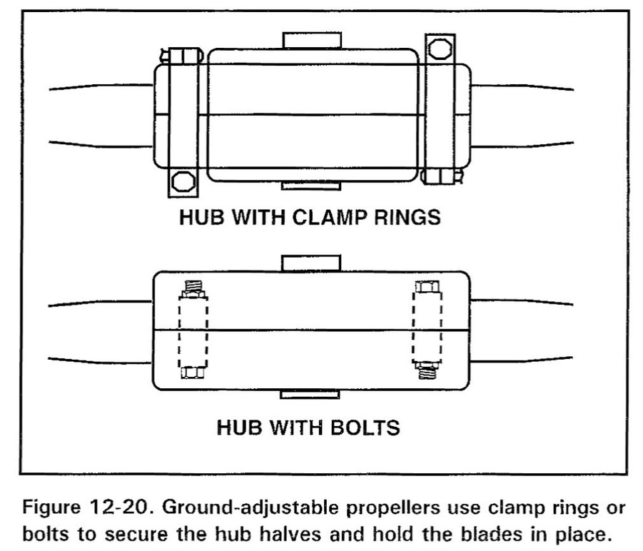
가변피치(controllable-pitch) 프로펠러에서는 조종석 컨트롤이 프로펠러가 회전하는 동안 블레이드 각도를 바꿉니다. 이는 조종사가 특정 비행 조건에 최상의 성능을 내는 블레이드 각도를 선택하게 합니다. 피치 위치 수는 2위치 가변 프로펠러처럼 제한되거나, 최소·최대 피치 설정 사이에서 자동·무제한일 수 있습니다. 널리 쓰인 최초의 가변피치 프로펠러 중 하나는 1930년대에 개발된 해밀턴 스탠다드 카운터웨이트 프로펠러입니다. 이 프로펠러는 조종사가 저피치나 고피치를 선택하게 했습니다. 저피치 설정은 이륙·상승 중에 써서 엔진이 최대 속도로 작동해 정격 마력을 완전히 냈고, 고피치 설정은 순항 비행 중 더 효율적 작동과 개선된 연비를 위해 썼습니다.In a controllable-pitch propeller, a cockpit control changes blade angle while the propeller rotates, letting the pilot pick the best angle for a flight condition; positions may be limited (a two-position controllable) or automatic and unlimited between minimum and maximum. One of the first widely used was the 1930s Hamilton-Standard counterweight propeller, letting a pilot select low or high pitch: low pitch for takeoff and climb so the engine ran at maximum speed and full rated horsepower, high pitch for more efficient cruise operation and better fuel economy.
해밀턴 스탠다드 프로펠러는 지상조정 프로펠러처럼 두 조각 허브로 블레이드를 고정합니다. 블레이드가 저·고피치 스톱 사이에서 회전하도록 각 블레이드는 롤러 베어링 세트 위에서 움직이고, 각 블레이드 기부에 카운터웨이트 브래킷이 설치됩니다. 블레이드 각도는 유압과 원심력의 조합으로 바뀝니다. 유압은 블레이드 각도를 줄이고, 원심력은 카운터웨이트에 작용해 블레이드 각도를 늘립니다. 각도를 줄이는 유압은 크랭크축에서 나와 프로펠러 허브 앞의 피스톤 조립체에 작용하는 엔진 오일에서 나옵니다. 피스톤 조립체로의 엔진 오일 흐름은 엔진에 장착되고 조종석에서 제어되는 3방향 셀렉터 밸브로 제어됩니다. 이 밸브가 앞으로 움직여 프로펠러 블레이드 각도를 줄이면 엔진 오일을 피스톤 조립체로 유도해 피스톤을 밖으로 밀고, 피스톤이 각 카운터웨이트 브래킷에 연결되어 있어 피스톤이 나오면 카운터웨이트를 안으로 당겨 블레이드 각도를 줄입니다. 블레이드가 저피치 스톱에 도달하면 오일 압력이 블레이드를 이 위치에 유지합니다.The Hamilton-Standard propeller, like a ground-adjustable one, uses a two-piece hub; to let blades rotate between low and high pitch stops, each rides on roller bearings, and a counterweight bracket is installed at each blade base. Blade angle changes by combined hydraulic and centrifugal force: hydraulic force decreases angle while centrifugal force on the counterweights increases it. The decreasing force comes from engine oil out of the crankshaft acting on a piston assembly on the hub front, its flow controlled by a three-way selector valve mounted in the engine and controlled from the cockpit. Moving the valve forward to decrease angle routes oil into the piston to force it outward, and since the piston links to each counterweight bracket, moving out pulls the counterweights in to decrease angle; at the low-pitch stop, oil pressure holds the blades there.
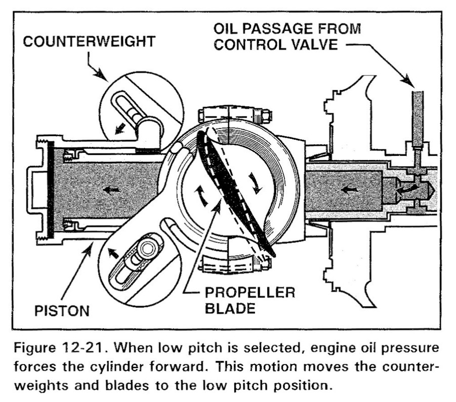
블레이드를 고피치 위치로 옮기려면 프로펠러 컨트롤 레버를 뒤로 움직여 셀렉터 밸브를 회전시켜 프로펠러 허브의 오일 압력을 방출합니다. 대항할 오일 압력이 없으면 카운터웨이트에 작용하는 원심력이 이들을 밖으로 움직여 블레이드를 고피치 위치로 회전시킵니다. 블레이드가 회전하면 오일이 프로펠러 실린더에서 밀려나 엔진 섬프로 돌아갑니다. 블레이드는 카운터웨이트 조립체의 고피치 스톱에 닿으면 회전을 멈춥니다. 대부분의 경우 2위치 프로펠러의 피치 스톱은 조정 가능하며, 이 조정은 엔진이 작동하지 않을 때만 할 수 있습니다. 엔진 정지 전에 프로펠러를 고피치 위치에 두어야 하는데, 그러면 피스톤 조립체가 후퇴해 부식·먼지 축적으로부터 보호되고, 대부분의 오일이 피스톤에서 밀려나 추운 날씨에 응고될 우려가 줄어듭니다. 기술 발전으로 2위치 프로펠러 개선은 조종사가 고·저피치 스톱 사이 임의의 블레이드 각도를 선택해 전 출력·대기속도 범위에서 최적 효율을 얻게 했습니다.To move the blades to high pitch, the control lever moves aft, rotating the selector valve to release hub oil pressure; with no counteracting pressure, centrifugal force on the counterweights moves them out to rotate the blades to high pitch, forcing oil out of the cylinder back to the sump until the blades hit the high-pitch stops. A two-position propeller's pitch stops are usually adjustable, but only with the engine off. Before shutdown, place the propeller in high pitch: this retracts the piston to protect it from corrosion and dirt and forces most oil from the piston, where it could otherwise congeal in cold weather. As technology advanced, improvements let pilots select any angle between the stops for optimum efficiency across the full range of power and airspeed.
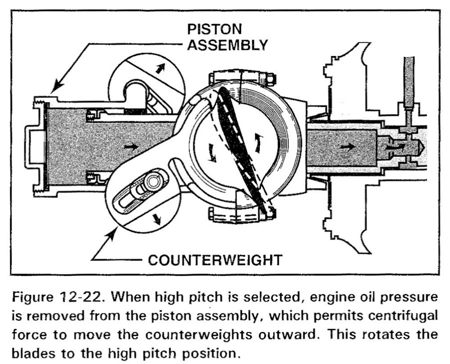
- A. 엔진 오일 계통에서 프로펠러 실린더로 오일을 보냄(direct oil from the engine oil system to the propeller cylinder).direct oil from the engine oil system to the propeller cylinder.
- B. 엔진에서 거버너를 거쳐 프로펠러로 오일을 보냄.direct oil from the engine through the governor to the propeller.
- C. 프로펠러의 정속 작동을 가능하게 함.permit constant-speed operation of the propeller.
- A. 스로틀을 허용 이륙 매니폴드 압력까지 열었을 때 엔진이 해면고도에서 정격 이륙 RPM으로 회전하도록(the engine will turn at its rated takeoff RPM at sea level when the throttle is opened to allowable takeoff manifold pressure).the engine will turn at its rated takeoff RPM at sea level when the throttle is opened to allowable takeoff manifold pressure.
- B. 어떤 매니폴드 압력·고도·전진 속도 조합에서도 최대 허용 엔진 RPM을 초과할 수 없도록.maximum allowable engine RPM cannot be exceeded with any combination of manifold pressure, altitude, or forward speed.
- C. 어떤 스로틀 개방·고도·전진 속도 조합에서도 제한 엔진 매니폴드 압력을 초과할 수 없도록.the limiting engine manifold pressure cannot be exceeded with any combination of throttle opening, altitude, or forward speed.
- A. 항공기 속도가 감소할 때 블레이드 피치를 증가시켜.increasing blade pitch as the aircraft speed decreases.
- B. 비행 중 마주치는 대부분 조건에 맞게 블레이드 각도를 조정해(adjusting blade angle for most conditions encountered in flight).adjusting blade angle for most conditions encountered in flight.
- C. 블레이드의 양력 계수를 증가시켜.increasing the lift coefficient of the blade.
- A. 이륙 시 최대 엔진 속도를 제한하기 위해(To limit the maximum engine speed during takeoff).To limit the maximum engine speed during takeoff.
- B. 순항용 적정 블레이드 각도를 유지하기 위해.To maintain the proper blade angle for cruising.
- C. 이륙용 최대 프로펠러 피치를 제한하기 위해.To limit the maximum propeller pitch for takeoff.
- A. 프로펠러 피스톤-실린더에 작용하는 엔진 오일 압력과 플라이웨이트에 작용하는 원심력.Engine oil pressure acting on the propeller piston-cylinder arrangement and centrifugal force acting on the flyweights.
- B. 플라이웨이트에 작용하는 원심력(Centrifugal force acting on the flyweights).Centrifugal force acting on the flyweights.
- C. 프로펠러 피스톤-실린더에 작용하는 프로펠러 거버너 오일 압력.Prop governor oil pressure acting on the propeller piston-cylinder arrangement.
- A. 엔진-아웃 조건에서 러더 힘이 설정값 이상으로 증가할 때.rudder forces increase beyond a set value during an engine-out condition.
- B. 프로펠러 오버스피드 조건이 감지될 때.a propeller overspeed condition is detected.
- C. 엔진 출력 손실로 프로펠러 추력이 설정값으로 떨어질 때(engine power loss results in a propeller thrust drop to a preset value).engine power loss results in a propeller thrust drop to a preset value.
- A. 그리스의 항마찰성과 가소성(antifriction and plasticity characteristics of grease).antifriction and plasticity characteristics of grease.
- B. 그리스의 항마찰성과 화학적 안정성.antifriction and chemical stability of grease.
- C. 그리스의 점도와 융점.viscosity and melting point of grease.
페더링 프로펠러와 Hartzell 컴팩트·언페더링·어큐뮬레이터 심화 📙 Jeppesen 정독
Feathering, Hartzell Compact, Unfeathering, and Accumulators비행 중 엔진이 고장 나면 프로펠러는 공기가 블레이드 위로 흐르며 계속 풍차처럼 천천히 회전(windmilling)합니다. 이는 상당한 항력을 만들어 항공기 활공 특성에 악영향을 줍니다. 윈드밀링 프로펠러가 만드는 항력을 제거하기 위해 엔지니어들은 프로펠러 블레이드를 90도 각도로 회전시키는 방법을 개발했습니다. 이를 페더링(feathering)이라 하며, 다가오는 기류에 가장 작은 블레이드 프로필을 제시해 윈드밀링 프로펠러의 항력을 제거합니다. 오늘날 모든 현대 다발 프로펠러 구동 항공기는 페더링 프로펠러를 장착합니다. 정속 프로펠러의 작동 원리가 페더링 계통에도 적용되지만, 조종석의 프로펠러 컨트롤 레버는 보통 블레이드를 페더 위치로 회전시키는 추가 위치를 포함합니다. 대부분의 경우 프로펠러 컨트롤을 완전히 뒤로 당겨 블레이드를 페더링합니다. 대부분의 항공기에서 페더링 기능은 정속 작동과 독립적이어서, 작동자가 언제든 정속 계통을 무시하고 프로펠러를 페더링할 수 있습니다.When an engine fails in flight, the propeller keeps windmilling slowly as air flows over the blades, creating considerable drag that hurts glide characteristics. To eliminate it, engineers developed a way to rotate the blades to 90 degrees—feathering—presenting the smallest blade profile to the airstream. All modern multiengine propeller aircraft have feathering propellers. Constant-speed operating principles apply, but the cockpit control lever usually adds a position to feather the blades, normally by pulling it all the way aft. On most aircraft, feathering is independent of constant-speed operation, so the operator can override the constant-speed system to feather anytime.
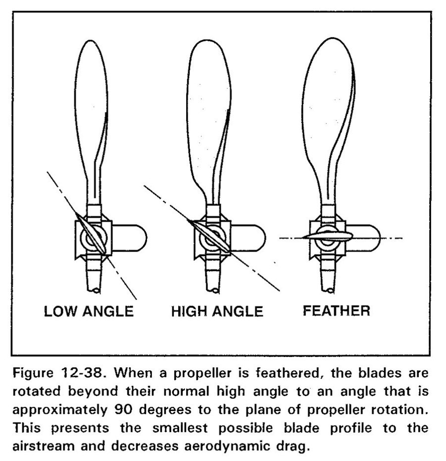
Hartzell 컴팩트 페더링 프로펠러의 정속 작동은 정속 모델과 한 가지 차이만 있습니다. 페더링 프로펠러는 거버너 오일 압력과 원심 비틀림력 모두를 써서 블레이드를 저피치로 회전시키고, 고압 질소 충전·내부 스프링·카운터웨이트의 어떤 조합을 써서 블레이드 각도를 늘립니다. 질소 충전은 프로펠러 허브의 실린더 헤드에 저장됩니다. 한 형식의 Hartzell 컴팩트 페더링 프로펠러는 고압 질소 충전과 기계식 스프링을 써서 블레이드 각도를 늘리고 페더링합니다. 다른 모델은 카운터웨이트에 작용하는 공기 압력과 원심력의 조합을 써서 각도를 늘리고 페더링하는데, 고압 질소 충전이 프로펠러 허브에 저장되고 각 블레이드 기부에 카운터웨이트가 장착됩니다. 두 설계 모두 거버너 오일 압력이 어떤 이유로든 0으로 떨어지면 프로펠러를 자동으로 페더 위치로 옮기는 안전 기능을 포함해, 윈드밀링 프로펠러로 인한 엔진 추가 손상을 막고 항공기 항력을 낮춥니다.The Hartzell compact feathering propeller's constant-speed operation differs from the constant-speed model in one way: it uses both governor oil pressure and centrifugal twisting force to rotate blades to low pitch, while some combination of a high-pressure nitrogen charge, internal spring, or counterweights increases blade angle. The nitrogen is stored in a cylinder head in the hub. One type uses a nitrogen charge and a mechanical spring to increase angle and feather; another uses air pressure and centrifugal force on counterweights, with the nitrogen in the hub and a counterweight at each blade base. Both include a safety feature that automatically feathers the propeller if governor oil pressure drops to zero for any reason, preventing further engine damage from windmilling and lowering drag.
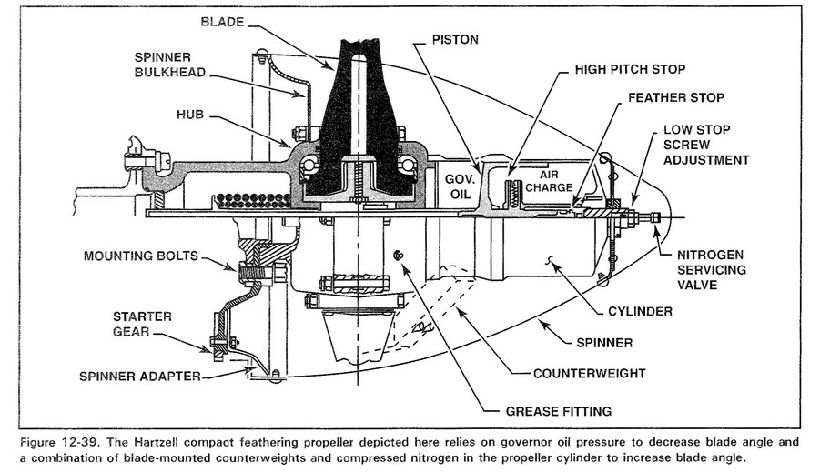
엔진이 지상에서 정지될 때 프로펠러가 페더링되는 것을 막기 위해 대부분의 Hartzell 컴팩트 프로펠러는 자동 하이피치 스톱(automatic high pitch stop)이라는 래치 기구를 씁니다. 이 래치 기구는 정지 허브에 고정된 스프링 부하 래치로 구성되며, 가동 블레이드 클램프에 볼트로 고정된 하이피치 스톱 플레이트와 맞물립니다. 프로펠러가 800rpm보다 빠르게 회전하는 한 원심력이 핀이 스프링 압력을 이기게 해 프로펠러가 자유롭게 페더링할 수 있습니다. 그러나 프로펠러가 800rpm 아래로 회전하면 래치가 하이피치 스톱과 맞물려 프로펠러 블레이드 각도가 페더로 증가하는 것을 막습니다. Hartzell 컴팩트 페더링 프로펠러를 페더링하려면 작동자가 프로펠러 컨트롤을 페더 위치에 둡니다. 이 동작은 허브의 모든 오일 압력을 방출해 질소 충전과 스프링 압력이나 원심력이 블레이드를 페더 위치로 회전시키게 합니다. 블레이드가 페더 위치로 회전하는 속도는 오일이 프로펠러 허브에서 얼마나 빨리 배출되는지와 질소 충전·스프링/원심력이 가하는 힘의 양에 달려 있습니다. 전형적 Hartzell 프로펠러는 페더링에 3~10초가 걸립니다.To prevent feathering when the engine is shut down on the ground, most Hartzell compact propellers use a latch called an automatic high-pitch stop: spring-loaded latches on the stationary hub engage high-pitch stop-plates bolted to the movable blade clamps. As long as the propeller turns faster than 800 rpm, centrifugal force lets the pins overcome spring pressure, leaving it free to feather; below 800 rpm, the latches engage the high-pitch stops to prevent the angle increasing to feather. To feather, the operator places the control in feather, dumping all hub oil pressure so the nitrogen charge and spring or centrifugal force rotate the blades to feather. The feathering speed depends on how fast oil drains from the hub and the force of the nitrogen and spring/centrifugal force—a typical Hartzell takes 3 to 10 seconds.
언페더링(unfeathering)은 프로펠러 컨트롤을 정상 비행 범위로 되돌리고 엔진을 재시동해 이뤄집니다. 엔진이 돌기 시작하자마자 거버너가 블레이드를 언페더하는 데 필요한 오일 압력을 전달합니다. 프로펠러가 부분적으로 언페더되면 윈드밀링을 시작해 언페더링을 가속합니다. 블레이드가 페더된 상태에서 엔진 크랭킹을 돕기 위해 페더링 블레이드 각도는 블레이드의 3/4 지점에서 80~85도로 설정됩니다. 이 설정은 다가오는 공기가 엔진 스타터를 돕게 합니다. 보통 페더 프로펠러를 가진 엔진은 몇 초 내에 재시동됩니다. 엔진 시동이 어려울 수 있는 항공기에서는 프로펠러 계통이 어큐뮬레이터(accumulator)를 포함할 수 있습니다. 어큐뮬레이터는 프로펠러 언페더에 필요할 때까지 압력하의 오일을 저장하며, 경우에 따라 작동자가 시동 전에 프로펠러를 언페더하게 합니다. 전형적 어큐뮬레이터는 다이어프램으로 두 챔버로 나뉜 구형 용기입니다. 한쪽은 질소로 충전되고 다른 쪽은 오일로 채워집니다. 정상 작동 중에는 어큐뮬레이터의 오일 측이 가압 오일 흐름에 열려 챔버가 가압 오일로 채워집니다. 프로펠러 컨트롤을 페더 위치로 옮기면 어큐뮬레이터 밸브가 닫혀 오일을 어큐뮬레이터에 가둡니다. 프로펠러 컨트롤을 페더 위치에서 옮기면 어큐뮬레이터 밸브가 열려 어큐뮬레이터 내 가압 오일이 프로펠러 허브로 흐르고, 오일이 허브에 도달하면 피스톤을 충분히 밀어 프로펠러 블레이드를 페더 위치에서 빼내기 시작합니다.Unfeathering is done by returning the control to the normal flight range and restarting the engine: as soon as it turns over, the governor delivers oil pressure to unfeather, and once partially unfeathered, it windmills, accelerating the process. To help crank the engine with blades feathered, the feathering angle is set 80 to 85 degrees at the 3/4 blade point so oncoming air assists the starter—an engine with a feathered propeller typically restarts within seconds. Where starting may be difficult, the system may include an accumulator storing pressurized oil until needed to unfeather, sometimes letting the operator unfeather before starting. A typical accumulator is a spherical container split by a diaphragm into two chambers, one charged with nitrogen and one filled with oil: during normal operation the oil side is open to pressurized oil and fills; moving the control to feather closes an accumulator valve to trap the oil; and moving it out of feather opens the valve so the trapped pressurized oil flows to the hub, pushing the piston enough to start moving the blades out of feather.
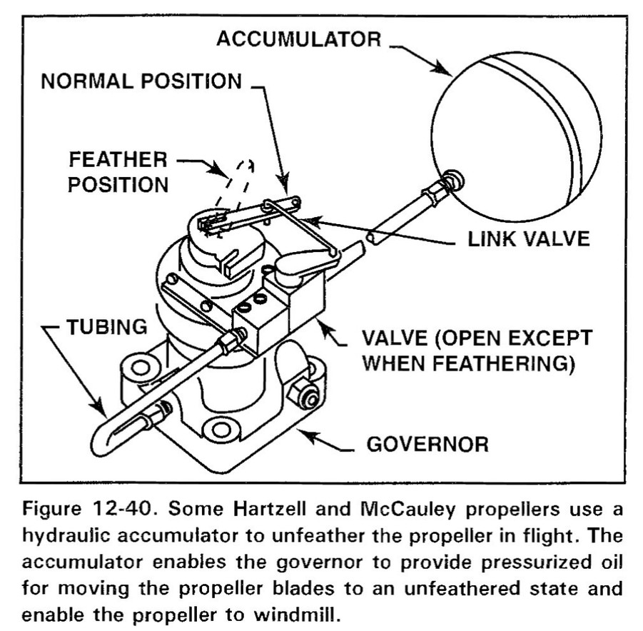
- A. 엔진 RPM.Engine RPM.
- B. 공반에 따른 상승·하강 각도.Angle of climb and descent with accompanying changes in airspeed.
- C. 프로펠러 피치 범위의 기계적 한계(The mechanical limits in the propeller pitch range).The mechanical limits in the propeller pitch range.
- A. 고RPM(HIGH RPM).HIGH RPM.
- B. 저RPM.LOW RPM.
- C. 고피치 범위.High pitch range.
- A. 블레이드 각도 증가(increasing blade angle).increasing blade angle.
- B. 블레이드 각도 감소.decreasing blade angle.
- C. 프로펠러 언페더링.unfeathering the propellers.
- A. 프로펠러 실린더 공기 압력.Propeller cylinder air pressure.
- B. 스프링과 록 핀으로 구성된 래치 기구(A latch mechanism composed of springs and lock pins).A latch mechanism composed of springs and lock pins.
- C. 어큐뮬레이터 공급 오일 압력.Accumulator provided oil pressure.
- A. 스로틀 레버.throttle levers.
- B. 프로펠러 거버너(propeller governors).propeller governors.
- C. 프로펠러 컨트롤 레버.propeller control levers.
- A. 모든 프로펠러의 팁 속도 제어.To control the tip speed of all propellers.
- B. 엔진 RPM 제어와 진동 감소(To control engine RPM and reduce vibration).To control engine RPM and reduce vibration.
- C. 모든 엔진의 출력 제어.To control the power output of all engines.
- A. 스피더 스프링의 압축이 변경된다(Compression of the speeder spring is changed).Compression of the speeder spring is changed.
- B. 거버너 부스터 펌프 압력이 변한다.The governor booster pump pressure is varied.
- C. 거버너 바이패스 밸브가 프로펠러 돔으로 오일 압력을 보내도록 위치된다.The governor bypass valve is positioned to direct oil pressure to the propeller dome.
해밀턴 스탠다드 하이드로매틱 프로펠러: 구조·거버너·작동·페더링 심화 📙 Jeppesen 정독
Hamilton-Standard Hydromatic Propeller일부 Hartzell과 McCauley 프로펠러는 비행 중 프로펠러를 언페더하기 위해 유압 어큐뮬레이터를 씁니다. 어큐뮬레이터는 거버너가 프로펠러 블레이드를 언페더 상태로 옮기고 프로펠러가 윈드밀링하게 할 가압 오일을 제공하게 합니다. 해밀턴 스탠다드 하이드로매틱(Hydromatic) 프로펠러는 2차 대전 시기에 제작된 중·대형 성형엔진 수송기에 흔했습니다. 전형적 비역전·완전 페더링 하이드로매틱 프로펠러는 세 주요 조립체 — 허브(배럴) 조립체, 돔 조립체, 디스트리뷰터 밸브 — 로 구성되며, 세 조립체가 함께 작동해 프로펠러의 정속 작동을 가능케 합니다.Some Hartzell and McCauley propellers use a hydraulic accumulator to unfeather in flight, letting the governor provide pressurized oil to move the blades to unfeathered and let the propeller windmill. The Hamilton-Standard Hydromatic propeller was common on medium and large radial-engine transports built in the WWII era. A typical nonreversing, full-feathering Hydromatic propeller has three major assemblies—the hub (barrel) assembly, dome assembly, and distributor valve—working together for constant-speed operation.
허브 조립체는 스파이더와 프로펠러 블레이드를 지지하는 두 반쪽으로 구성됩니다. 하이드로매틱 프로펠러 블레이드는 다른 정속 프로펠러와 달리 각 블레이드의 버트(butt)가 돔 조립체의 피치 변경 기어와 맞물리는 섹터 기어(sector gear)로 이뤄집니다. 각 블레이드는 스파이더의 암에 끼워지고, 스파이더/블레이드 조립체가 두 허브 반쪽 사이에 놓입니다. 각 블레이드가 허브 내에서 자유롭게 회전하고 블레이드를 제자리에 유지하도록, 블레이드 버트와 허브 사이에 베어링과 스페이서 조합이 설치됩니다. 돔 조립체는 피스톤, 회전 캠, 고정 캠을 포함한 피치 변경 기구의 주요 부품을 담습니다. 돔 조립체가 프로펠러 허브에 나사로 결합되면 오일 압력이 피스톤에 작용해 돔 내에서 전후로 움직입니다. 피스톤이 움직이면 피스톤에 장착된 캠 롤러가 회전 캠과 맞물려 고정 캠 내에서 돌게 하고, 회전 캠 후면에 부착된 베벨 기어가 각 프로펠러 블레이드와 맞물려 블레이드 피치를 변경합니다. 디스트리뷰터 밸브는 엔진 크랭크축의 연장부 역할을 하며 돔 조립체 중앙에 설치됩니다. 그 목적은 거버너 오일과 엔진 오일을 돔 조립체로 유도해 넣고 빼는 것입니다.The hub assembly is two halves supporting the spider and blades. Hydromatic blades differ from other constant-speed propellers in that each blade's butt is a sector gear meshing with the pitch-changing gear in the dome; each blade slips onto a spider arm, and the spider/blade assembly sits between the hub halves, with bearings and spacers between blade butt and hub to let blades rotate freely and hold them in place. The dome houses the pitch-change mechanism's main parts—a piston, rotating cam, and fixed cam; threaded into the hub, oil pressure moves the piston fore and aft, and cam rollers on the piston engage the rotating cam to turn it within the fixed cam, while a beveled gear on the rotating cam's rear engages each blade to change pitch. The distributor valve acts as an extension of the crankshaft, installed in the dome center to direct governor and engine oil into and out of the dome.
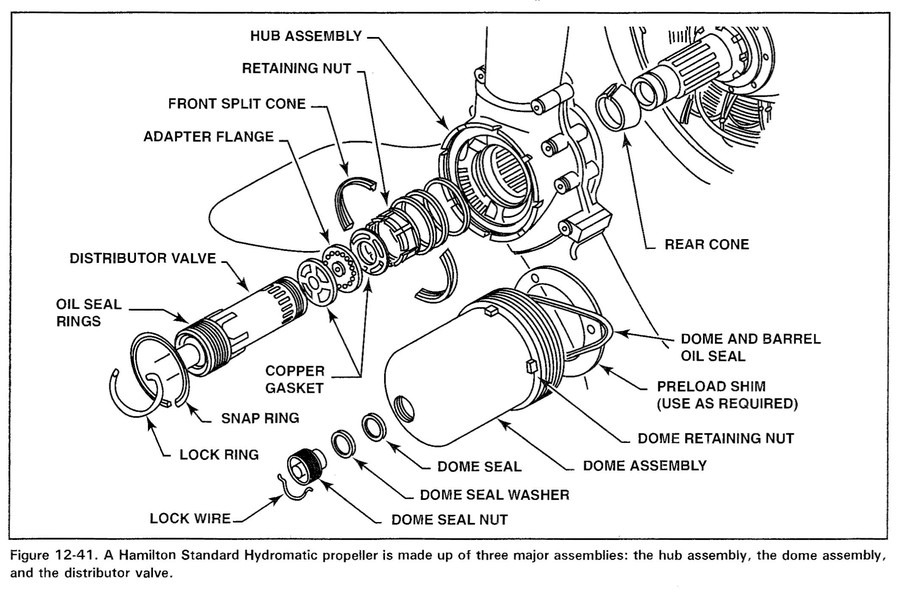
다른 모델의 거버너 부품에 더해, 하이드로매틱 거버너는 프로펠러가 페더·언페더될 때 거버너 정속 기능을 무효화하는 고압 트랜스퍼 밸브를 포함합니다. 또한 거버너 측면에 전기 압력 컷아웃 스위치가 있어 블레이드가 완전 페더 위치에 도달하면 오일 압력 전달을 자동으로 멈춥니다. 하이드로매틱 프로펠러는 블레이드 각도를 바꾸는 데 스프링이나 카운터웨이트를 쓰지 않습니다. 대신 엔진 오일 압력이 피스톤 한쪽에, 거버너 오일 압력이 반대쪽에 작용합니다. 예로 거버너 오일 압력이 피스톤 인보드 측에, 엔진 오일 압력이 아웃보드 측에 작용한다고 하면, 이 구성에서 거버너 오일 압력은 프로펠러 블레이드 각도를 늘리고 엔진 오일 압력은 원심 비틀림력과 결합해 블레이드 각도를 줄입니다. 전형적 엔진 오일 압력은 60~90psi이고 거버너로 부스트된 오일 압력은 200~300psi입니다.Besides parts in other models, a Hydromatic governor includes a high-pressure transfer valve that disables the constant-speed functions when the propeller is feathered or unfeathered, plus an electric pressure cutout switch on the governor side that automatically stops oil pressure delivery when the blades reach full feather. The Hydromatic uses no springs or counterweights: engine oil acts on one side of the piston, governor oil on the other. Assuming governor oil on the inboard side and engine oil on the outboard side, governor oil increases blade angle while engine oil plus centrifugal twisting force decrease it—typical engine oil is 60 to 90 psi, governor-boosted oil 200 to 300 psi.
정속 작동 중 거버너의 파일럿 밸브가 거버너 오일 압력을 제어합니다. 프로펠러 부하나 항공기 속도가 증가하면 프로펠러가 더 빨리 회전해 오버스피드가 됩니다. 이때 원심력이 플라이웨이트를 밖으로 기울여 파일럿 밸브를 올리고, 거버너 부스트 오일 압력을 피스톤 뒷면으로 유도합니다. 동시에 피스톤 앞의 오일이 디스트리뷰터 밸브를 통해 거버너 입구 측으로 되돌아갑니다. 피스톤 앞뒤 오일 압력 차가 피스톤을 앞으로 움직이고, 캠 롤러가 앞으로 움직여 기어의 기계적 연결이 블레이드를 더 높은 피치로 회전시킵니다. 블레이드 각도가 커지면 엔진 속도가 감소하고 플라이웨이트가 다시 안으로 기울어 파일럿 밸브를 내려 피스톤이 멈추고 계통이 온스피드로 돌아갑니다. 언더스피드에서는 플라이웨이트에 작용하는 원심력이 줄어 플라이웨이트가 안으로 기울고, 파일럿 밸브가 내려가 피스톤 뒷면의 거버너 오일이 거버너로 되돌아가 엔진으로 갑니다. 피스톤 뒷면 오일 압력이 엔진 오일 압력과 원심 비틀림력의 합보다 작아지면 피스톤과 캠 롤러가 뒤로 움직여 회전 캠이 돌아 블레이드 각도가 감소합니다. 각도가 줄면 엔진 속도가 증가하고 플라이웨이트가 다시 밖으로 기울어 온스피드로 돌아갑니다.During constant-speed operation, the governor's pilot valve controls governor oil pressure. If propeller load or aircraft speed rises, the propeller turns faster (overspeed): centrifugal force tilts the flyweights out, raising the pilot valve to route boosted oil to the piston's back while oil in front returns through the distributor valve to the governor inlet; the pressure difference moves the piston forward, and cam rollers moving forward mechanically rotate the blades to higher pitch, decreasing engine speed until the flyweights tilt back in, lowering the pilot valve and returning to on-speed. In underspeed, centrifugal force on the flyweights drops so they tilt in, lowering the pilot valve so back-side governor oil returns to the governor and engine while engine oil still bears on the front; when back-side pressure is less than engine oil plus centrifugal twisting force, the piston and cam rollers move aft, turning the rotating cam to decrease blade angle, which raises engine speed until the flyweights tilt back out to on-speed.
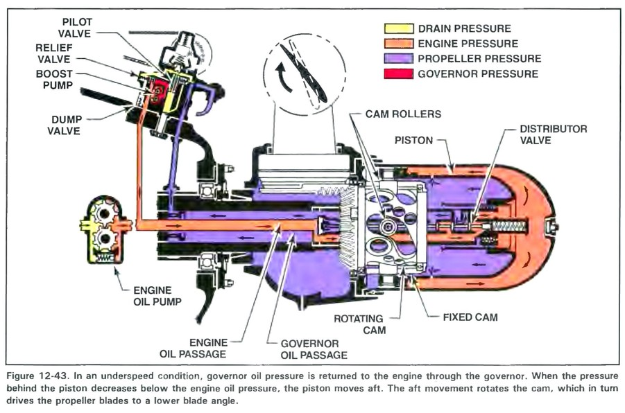
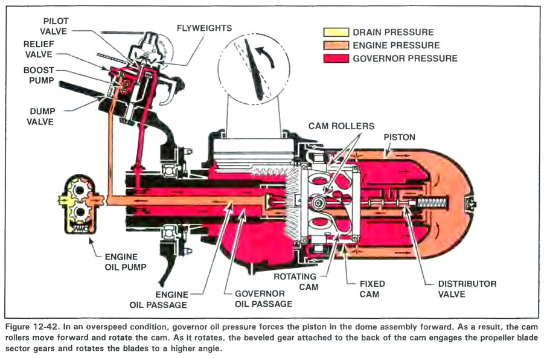
하이드로매틱 프로펠러는 블레이드를 페더하는 데 고압 오일을 씁니다. 충분한 오일 공급과 가압 수단을 위해 프로펠러 계통에 오일 저장조와 별도 전기 오일 펌프가 설치됩니다. 이 프로펠러를 페더하려면 작동자가 조종석의 페더링 버튼을 누릅니다. 홀딩 코일이 페더링 시퀀스가 완료될 때까지 이 버튼 위치를 유지합니다. 동시에 솔레노이드 릴레이가 여자돼 항공기 배터리에서 페더링 모터로의 회로를 완성합니다. 페더링 펌프가 저장조에서 예비 오일을 끌어와 압력을 약 600psi로 높입니다. 가압 오일이 거버너로 유도돼 고압 트랜스퍼 밸브를 시프트해 거버너 제어를 제거합니다. 보조 오일이 거버너를 지나 피스톤 인보드 측으로 갑니다. 피스톤 뒤로 압력이 형성되면 피스톤과 캠 링이 캠을 회전시켜 블레이드를 페더합니다. 회전 캠이 하이피치 스톱에 닿으면 블레이드가 완전 페더되고 피스톤이 멈춥니다. 그러면 피스톤 뒤 오일 압력이 급속히 형성되고, 약 650psi에 도달하면 거버너의 오일 압력 컷아웃 스위치가 홀딩 코일을 열어 페더링 버튼을 해제합니다. 프로펠러가 완전 페더되면 오일 압력이 0으로 떨어집니다. 언페더하려면 작동자가 페더링 버튼을 눌러 유지해, 전기 오일 펌프가 피스톤 인보드 측으로 더 많은 오일을 펌핑합니다.The Hydromatic uses high-pressure oil to feather; an oil reservoir and separate electric oil pump are installed for adequate supply and pressure. To feather, the operator presses a cockpit feathering button, and a holding coil keeps it in position until the sequence completes; simultaneously a solenoid relay energizes to complete the circuit from battery to feathering motor. The feathering pump draws reserve oil and boosts it to about 600 psi, routed to the governor to shift a high-pressure transfer valve that removes governor control, with auxiliary oil passing through to the piston's inboard side; as pressure builds behind the piston, the piston and cam rings rotate the cam to feather. When the rotating cam contacts the high-pitch stop, the blades are fully feathered and the piston stops, so pressure builds rapidly to about 650 psi, at which the oil-pressure cutout switch opens the holding coil to release the button—fully feathered, oil pressure drops to zero. To unfeather, the operator presses and holds the button so the electric pump sends more oil to the piston's inboard side.
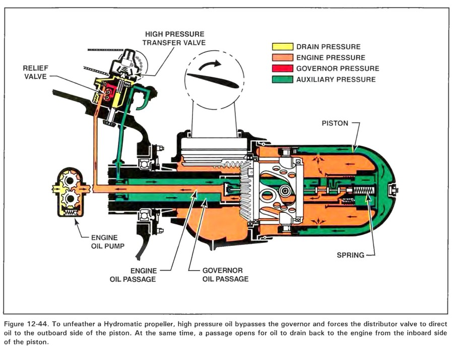
- A. 블레이드 각도 변경이 유압과 원심력 두 힘으로 이루어진다(Blade angle changes are accomplished by the use of two forces, one hydraulic and the other centrifugal).Blade angle changes are accomplished by the use of two forces, one hydraulic and the other centrifugal.
- B. 비행 중 무한한 블레이드 각도가 가능해 효율이 크게 향상된다.Since an infinite number of blade angle positions are possible during flight, propeller efficiency is greatly improved.
- C. 조종사가 RPM을 선택하고 프로펠러가 그 RPM을 유지하도록 피치를 바꾼다.The pilot selects the RPM and the propeller changes pitch to maintain the selected RPM.
- A. 증가하고, 매니폴드 압력 증가, 엔진 RPM 감소(increase, engine manifold pressure will increase, and engine RPM will decrease).increase, engine manifold pressure will increase, and engine RPM will decrease.
- B. 감소하고, 매니폴드 압력 증가, 엔진 RPM 감소.decrease, engine manifold pressure will increase, and engine RPM will decrease.
- C. 감소하고, 매니폴드 압력 감소, 엔진 RPM 증가.decrease, engine manifold pressure will decrease, and engine RPM will increase.
- A. 피치 변경 기구로 들어가고 나오는 오일(oil to and from the pitch changing mechanism).oil to and from the pitch changing mechanism.
- B. 부스트 펌프 스피더 스프링의 스프링 장력.spring tension on the boost pump speeder spring.
- C. 링키지와 플라이웨이트의 인·아웃 움직임.linkage and flyweights from moving in and out.
- A. 엔진 오일 압력.Engine oil pressure.
- B. 거버너 플라이웨이트(Governor flyweights).Governor flyweights.
- C. 거버너 펌프 오일 압력.Governor pump oil pressure.
- A. 펌프 압력으로.By pump pressure.
- B. 구심력으로.By centripetal force.
- C. 원심력으로(By centrifugal force).By centrifugal force.
- A. 내부 부품에 항상 깨끗한 별도 윤활 제공.provide an always clean separate lubrication of the internal parts.
- B. 압력 서지를 완충하고 블레이드 각도의 급변 방지.dampen pressure surges and prevent too rapid changes in propeller blade angle.
- C. 균열 위치를 쉽게 보이게 함(make the location of cracks readily apparent).make the location of cracks readily apparent.
- A. 밸런스 나이프 위에 프로펠러를 지지(To support the propeller on the balance knives).To support the propeller on the balance knives.
- B. 밸런스 스탠드의 수평을 맞춤.To level the balance stand.
- C. 무게를 부착할 위치를 프로펠러 블레이드에 표시.To mark the propeller blades where weights are to be attached.
- A. 거버너.governor.
- B. 돔 페더링 기구.dome feathering mechanism.
- C. 페더링 펌프 모터(feathering pump motor).feathering pump motor.
- A. 페더링 푸시 버튼을 당겨서.Pulling out the feathering push button.
- B. 전기 컷아웃 압력 스위치(Electric cutout pressure switch).Electric cutout pressure switch.
- C. 회전 캠 톱니의 스톱 러그.Stop lugs in the teeth of the rotating cam.
터보프롭 프로펠러: 베타 튜브·베타/알파 모드와 TPE-331 제어 심화 📙 Jeppesen 정독
Turboprop Propellers, Beta Tube, and TPE-331 Controls터보프롭 프로펠러 계통은 블레이드 카운터웨이트에 작용하는 스프링 압력과 원심력의 조합을 씁니다. 정지 중 블레이드가 페더 위치로 회전하는 것을 막기 위해 리트랙터블 피치 스톱(retractable pitch stop) 세트가 포함되는데, 이는 후속 엔진 시동 중 프로펠러의 공기 부하를 최소화하는 고정축 터보프롭 엔진의 전형입니다. Hartzell 프로펠러의 구조는 왕복엔진에 설치된 페더링 강철 허브 설계와 유사합니다. 다만 저피치 스톱 대신 이 프로펠러는 스페이서 또는 베타 튜브(Beta tube)를 쓰는데, 이는 역피치 스톱 역할을 합니다. 베타 튜브는 또한 프로펠러 피치 컨트롤 유닛과 프로펠러 돔 사이에 오일을 전달합니다.A turboprop propeller system uses spring pressure and centrifugal force on blade counterweights, with a set of retractable pitch stops to prevent the blades rotating into feather during shutdown—typical of fixed-shaft turboprops to minimize air load on the propeller during the next start. The Hartzell propeller's construction resembles the feathering steel-hub design on a reciprocating engine, but instead of a low-pitch stop it uses a spacer or Beta tube as a reverse-pitch stop; the Beta tube also transfers oil between the propeller pitch control unit and the propeller dome.
비행 중 엔진 출력은 연료 컨트롤 유닛이 제어하고 프로펠러 블레이드 각도는 프로펠러 거버너가 제어합니다. 거버너는 작동자가 원하는 엔진 속도를 설정하게 한 뒤 엔진 부하나 출력이 변할 때 오일을 프로펠러 허브로 넣고 빼 블레이드 각도를 바꿉니다. 지상 작동(베타 모드) 중에는 재래식 연료 컨트롤과 거버너가 엔진 출력과 블레이드 각도를 제대로 조절할 수 없습니다. 따라서 별도의 언더스피드 거버너가 엔진 연료 흐름을 제어하고, 프로펠러 피치 컨트롤 기구가 프로펠러 허브로 오일을 계량해 넣고 빼 블레이드 각도를 제어합니다. 속도 감지 장치로서 언더스피드 거버너가 특정 출력을 유지하도록 엔진 연료 흐름을 제어합니다. 프로펠러 피치 컨트롤이 필요한 이유는 거버너가 역블레이드 각도를 선택할 능력이 없기 때문입니다.In flight, engine power is controlled by the fuel control unit while blade angle is controlled by a propeller governor: it lets the operator set a desired engine speed, then directs oil into and out of the hub as load or power changes. During ground operation (Beta mode), a conventional fuel control and governor can't properly regulate power and blade angle, so a separate underspeed governor controls fuel flow while a propeller pitch control mechanism meters oil in and out of the hub to set the angle; as a speed-sensing device, the underspeed governor controls fuel flow to maintain a specific power output. The pitch control is needed because the governor can't select a reverse blade angle.
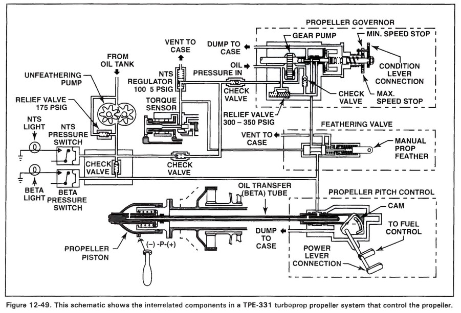
전형적 TPE-331 터보프롭 설치의 컨트롤은 항공기와 무관하게 유사하며, 두 엔진 컨트롤 — 파워 레버와 스피드 레버(컨디션 레버) — 로 구성됩니다. 파워 레버는 프로펠러 피치 컨트롤과 연료 컨트롤 모두에 기계적으로 연결돼 연료 흐름과 프로펠러 피치가 연료 스케줄링을 위해 조정될 수 있습니다. 대부분 파워 레버는 네 위치를 갖습니다: REVERSE, GROUND IDLE, FLIGHT IDLE, MAXIMUM. 비행 중 파워 레버는 연료 컨트롤 유닛을 직접 조정하는 기능을 하지만, 지상 작동 중에는 프로펠러 거버너를 우회해 프로펠러 피치 컨트롤 유닛을 통해 블레이드 각도를 직접 제어합니다. 컨디션 레버는 기계 링키지로 1차·언더스피드 거버너에 연결됩니다. 컨디션 레버의 주 기능은 엔진 속도 제어이며 일부 설치에서는 수동으로 연료를 차단하고 프로펠러를 페더합니다. 대부분 컨디션 레버는 세 위치를 갖습니다: CUTOFF, LOW RPM, HIGH RPM. 페더 밸브가 컨디션 레버에 연결된 설치에서는 컨디션 레버를 완전히 뒤로 옮겨 프로펠러 페더링을 하고, 기계적으로 연결되지 않았으면 별도 페더 핸들이 제공됩니다.A typical TPE-331 installation's controls are similar regardless of aircraft, with two engine controls—a power lever and a speed (condition) lever. The power lever is mechanically connected to both the propeller pitch control and the fuel control so flow and pitch coordinate for fuel scheduling; it usually has four positions: REVERSE, GROUND IDLE, FLIGHT IDLE, and MAXIMUM. In flight it directly adjusts the fuel control unit, but on the ground it bypasses the propeller governor to directly control blade angle through the pitch control unit. The condition lever connects to the primary and underspeed governor by mechanical linkage; its primary function is controlling engine speed and, in some installations, manually shutting off fuel and feathering the propeller, usually with three positions: CUTOFF, LOW RPM, and HIGH RPM. Where the feather valve connects to the condition lever, feathering is done by moving it fully aft; otherwise a separate feather handle is provided.
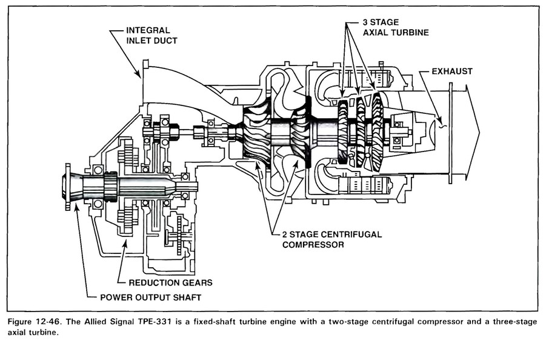
비행 중 컨디션 레버는 프로펠러 거버너를 제어해 엔진 속도를 유지하도록 블레이드 각도를 변화시킵니다. 지상 베타 범위 작동 중에는 컨디션 레버가 연료 컨트롤 유닛의 언더스피드 거버너를 조정합니다. 이 동작은 파워 레버 조정으로 인한 블레이드 각도 변화에도 불구하고 고정 엔진 속도를 유지하도록 연료 흐름을 변화시킵니다. 엔진 컨트롤 외에 대부분의 TPE-331 설치는 언페더링 스위치(버튼)를 포함합니다. 이 스위치는 엔진 재시동 시도 중 프로펠러를 언페더하며, 활성화되면 전류가 전기 언페더링 펌프를 여자해 오일을 프로펠러 돔으로 밀어 블레이드를 페더 위치에서 빼냅니다. TPE-331의 두 기본 작동 모드는 베타(Beta)와 알파(Alpha)입니다. 베타 모드는 엔진 시동·택싱·역추력 적용을 포함한 모든 지상 작동을 가리키며 대부분 N1의 65~95퍼센트 출력 설정을 포함합니다. 반대로 알파 모드는 플라이트 아이들부터 풀 파워까지, 즉 N1의 95~100퍼센트의 모든 작동을 포함합니다.In flight, the condition lever controls the propeller governor to vary blade angle and maintain engine speed; in the ground Beta range it adjusts the underspeed governor on the fuel control unit, varying fuel flow to hold a fixed engine speed despite blade-angle changes from power-lever adjustments. Besides engine controls, most TPE-331 installations include an unfeathering switch (button) that unfeathers the propeller during a restart attempt: when activated, current energizes an electric unfeathering pump forcing oil into the dome to rotate the blades out of feather. The TPE-331's two basic modes are Beta and Alpha: Beta refers to all ground operations including starting, taxiing, and reverse thrust, usually covering 65 to 95 percent N₁, while Alpha covers flight idle to full power, or 95 to 100 percent N₁.
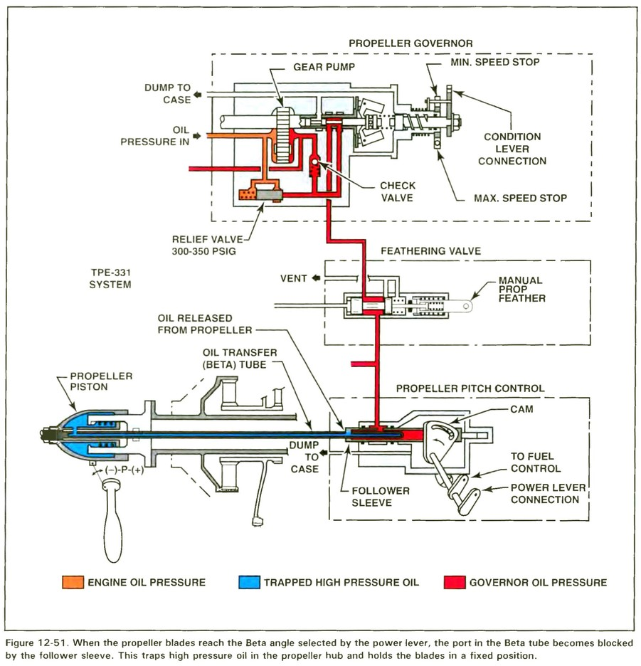
TPE-331이 항공기에 정지해 있고 프로펠러 블레이드가 피치 스톱에 기대 있다고 가정합니다. 엔진을 시동하려면 파워 레버를 GROUND IDLE 위치에, 컨디션 레버를 LOW RPM 위치에 둡니다. 엔진이 시동되면 파워 레버를 리버스 쪽으로 살짝 밀어 프로펠러 래치를 후퇴시킵니다. 그러면 파워 레버와 프로펠러 피치 컨트롤(PPC)을 연결하는 기계 링키지가 PPC의 팔로워 슬리브를 앞으로 밉니다. 오일 전달 튜브(베타 튜브)의 포트가 열려 고압 거버너 오일을 프로펠러 허브로 보냅니다. 거버너의 고압 오일이 프로펠러 허브에 도달하면 스프링 압력과 카운터웨이트에 작용하는 원심력을 모두 이겨 프로펠러 피스톤을 밖으로 밉니다. 프로펠러 블레이드가 더 얕은 피치로 이동하고, 이는 블레이드의 힘을 피치 스톱에서 제거해 스톱이 원심력으로 후퇴합니다. 베타 튜브는 프로펠러 피스톤에 부착되어 피스톤이 움직이면 베타 튜브도 움직입니다. 베타 튜브의 포트가 팔로워 슬리브에 막히면 프로펠러 블레이드 각도 변경이 멈춥니다.Assume a TPE-331 is at rest with the blades against the pitch stops. To start, the power lever goes to GROUND IDLE and the condition lever to LOW RPM; after start, the propeller latches retract by easing the power lever toward reverse, so the linkage connecting the power lever and propeller pitch control (PPC) slides the PPC follower sleeve forward, opening a port in the oil transfer (Beta) tube to port high-pressure governor oil to the hub. Reaching the hub, the high-pressure oil overcomes both spring pressure and centrifugal force on the counterweights to force the piston outward, moving the blades to shallower pitch, which removes their force from the pitch stops so they retract by centrifugal force. The Beta tube attaches to the piston, so it moves with the piston, and blade-angle change stops when the follower sleeve blocks the Beta tube's port.
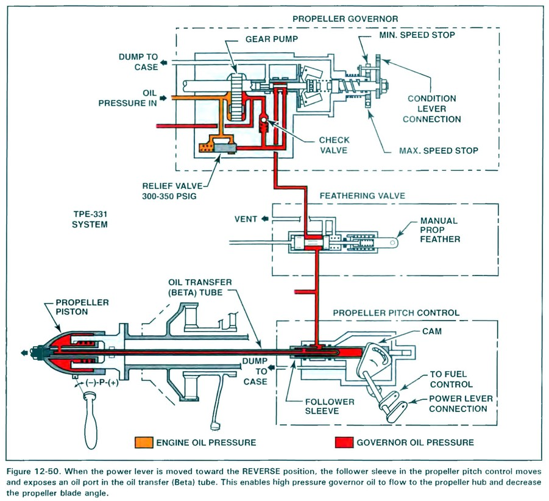
- A. 프로펠러 실린더로 가는 거버너 오일 압력을 차단.block governor oil pressure to the cylinder of the propeller.
- B. 프로펠러 실린더로 거버너 오일 압력을 보냄.port governor oil pressure to the cylinder of the propeller.
- C. 프로펠러 실린더에서 거버너 오일 압력을 배출(port governor oil pressure from the cylinder of the propeller).port governor oil pressure from the cylinder of the propeller.
- A. 엔진과 독립적으로.Independently of the engine.
- B. 페더링·역추력을 제외하고 엔진 RPM을 변화시켜.By varying the engine RPM except for feathering and reversing.
- C. 엔진 파워 레버로(By the engine power lever).By the engine power lever.
- A. 영추력 또는 음추력을 내는 데 쓰인다(is used to produce zero or negative thrust).is used to produce zero or negative thrust.
- B. 이륙 시 최대 추력을 얻는 데 쓰인다.is used to achieve maximum thrust during takeoff.
- C. 주어진 엔진 RPM에서 가장 연료 효율적인 피치 범위를 가리킨다.refers to the most fuel efficient pitch range to use at a given engine RPM.
- A. 페더 사이클·언페더 사이클 모두 정상 작동(Both feather cycle and unfeather cycle are functioning properly).Both feather cycle and unfeather cycle are functioning properly.
- B. 페더·언페더 사이클 모두 고장 표시.Both feather and unfeather cycles indicate malfunctions.
- C. 페더 사이클은 정상, 언페더 사이클은 고장 표시.The feather cycle is correct. The unfeather cycle indicates a malfunction.
- A. 블레이드를 저피치 스톱에 완전히 안착시키기 위해.seat the blades fully against the low pitch stop.
- B. 돔의 갇힌 공기를 빼내기 위해(free the dome of any entrapped air).free the dome of any entrapped air.
- C. 거버너의 최대 RPM 설정을 시험하기 위해.test the maximum RPM setting of the governor.
Pratt & Whitney PT6 터보프롭 프로펠러·거버너·제어 심화 📙 Jeppesen 정독
Pratt & Whitney PT6 Turboprop Propeller, Governors, and ControlsTPE-331 엔진의 프로펠러를 페더하려면 페더링 밸브를 시프트해 프로펠러 허브의 오일이 엔진으로 배출되게 해야 합니다. 오일 압력이 해소된 후 스프링 장력과 블레이드 카운터웨이트에 작용하는 원심력이 블레이드를 페더 위치로 회전시킵니다. PT6 엔진은 가스 발생기 속도 약 38,000rpm에서 600마력 이상을 낼 수 있는 프리 터빈(자유 터빈) 엔진입니다. 프리 터빈 엔진에서는 파워 터빈과 가스 발생기 사이에 기계적 연결이 없습니다. 대신 가스 발생기 섹션이 생산한 고온 가스가 파워 터빈을 지나며 회전시키고, 파워 터빈의 회전력이 샤프트로 감속 기어 조립체에 전달돼 프로펠러를 돌립니다. 전형적 PT6 터보프롭에서 감속 기어 조립체는 가스 발생기가 100퍼센트로 작동할 때 프로펠러 속도 2,200rpm을 냅니다. 프리 터빈 엔진이 정지되면 프로펠러 블레이드는 페더 위치에 놓입니다. 정상 시동 중에는 스타터가 압축기와 그 터빈만 회전시키고 파워 터빈은 정지 상태로 남기 때문인데, 이 설계는 스타터 모터 부하를 줄이고 피치 스톱의 필요를 없앱니다.To feather a TPE-331 propeller, the feathering valve is shifted so hub oil drains back to the engine, and after pressure relief, spring tension and centrifugal force on the blade counterweights rotate the blades to feather. The PT6 is a free- (power-) turbine engine producing over 600 horsepower at a gas-generator speed near 38,000 rpm; in a free-turbine engine, no mechanical connection exists between power turbine and gas generator—hot gases from the gas generator drive the power turbine, whose rotational force transmits by a shaft to the reduction gear to turn the propeller, giving a typical 2,200 rpm at 100 percent gas-generator speed. When a free-turbine engine shuts down, the blades go to feather, because during a normal start the starter turns only the compressor and its turbine while the power turbine stays motionless—reducing starter load and eliminating pitch stops.
PT6 엔진에 흔히 쓰이는 프로펠러 중 하나는 Hartzell HC-B3TN-3입니다. 이 형식은 플랜지 장착식이고 강철 허브에 3개 블레이드를 가지며 역전 가능합니다. 이 프로펠러에서는 거버너 오일 압력이 블레이드를 저피치나 역피치로 회전시키고, 페더링 스프링과 블레이드에 부착된 카운터웨이트가 블레이드를 고피치와 페더 위치로 회전시킵니다. PT6에 쓰이는 Hartzell 프로펠러는 TPE-331에 쓰이는 Hartzell 강철 허브 프로펠러와 구조가 유사합니다. 다만 베타 모드 작동 시 프로펠러 거버너와 연료 컨트롤에 블레이드 각도 정보를 제공하기 위해, 프로펠러 조립체 후면에 피드백 링(베타 슬립 링)이 설치됩니다.One propeller common on the PT6 is the Hartzell HC-B3TN-3: flange-mounted, three blades in a steel hub, and reversible. Governor oil pressure rotates the blades to low or reverse pitch while a feathering spring and counterweights rotate them to high pitch and feather. The PT6's Hartzell is similar in construction to the TPE-331's Hartzell steel-hub propeller, but to provide blade-angle information to the governor and fuel control in Beta mode, a feedback ring (Beta slip ring) is installed on the rear of the propeller assembly.
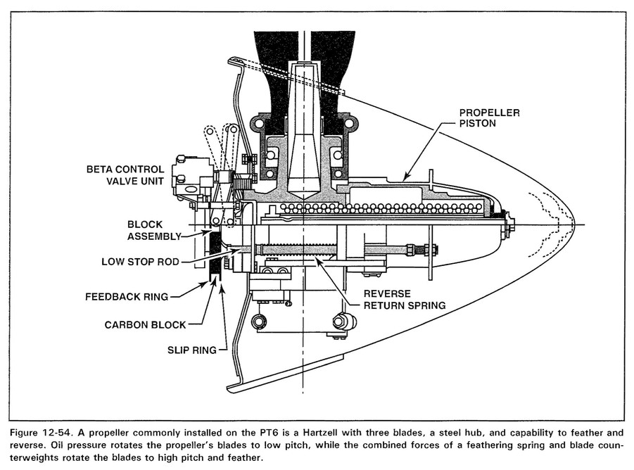
PT6 엔진은 1차 거버너와 오버스피드 거버너를 씁니다. 일부 엔진은 연료 토핑 거버너도 씁니다. 1차 거버너는 보통 감속 기어 케이스 위 12시 위치에 장착되며 재래식 프로펠러 거버너와 유사하게 작동합니다. 1차 거버너의 핵심 부품은 기어 오일 펌프, 회전 플라이웨이트, 스피더 스프링, 파일럿 밸브입니다. 또한 엔진 모델에 따라 베타 모드에서 블레이드 각도를 제어하기 위해 베타 밸브나 베타 리프트 로드를 포함할 수 있습니다. 1차 프로펠러 거버너가 프로펠러 속도를 정상 최대 속도로 제한하지 못할 경우를 대비해 PT6 엔진은 오버스피드 거버너를 포함합니다. 이 거버너는 스피더 스프링과 플라이웨이트 배열로 프로펠러 오버스피드를 방지합니다. 스피더 스프링 장력은 조종석에서 제어할 수 없고 현장에서 조정 불가하며, 제조사나 승인된 수리 시설만 조정할 수 있습니다.The PT6 uses a primary governor and an overspeed governor, and some engines a fuel topping governor. The primary governor, usually at the 12 o'clock position above the reduction case, works like a conventional propeller governor, with key parts of a gear oil pump, rotating flyweights, a speeder spring, and a pilot valve; depending on model, it may include a Beta valve or Beta lift rod to control blade angle in Beta mode. In case the primary governor fails to limit speed to the normal maximum, the PT6 includes an overspeed governor using a speeder spring and flyweights to prevent overspeed—its speeder-spring tension can't be controlled from the cockpit or adjusted in the field, only by the manufacturer or an approved repair facility.
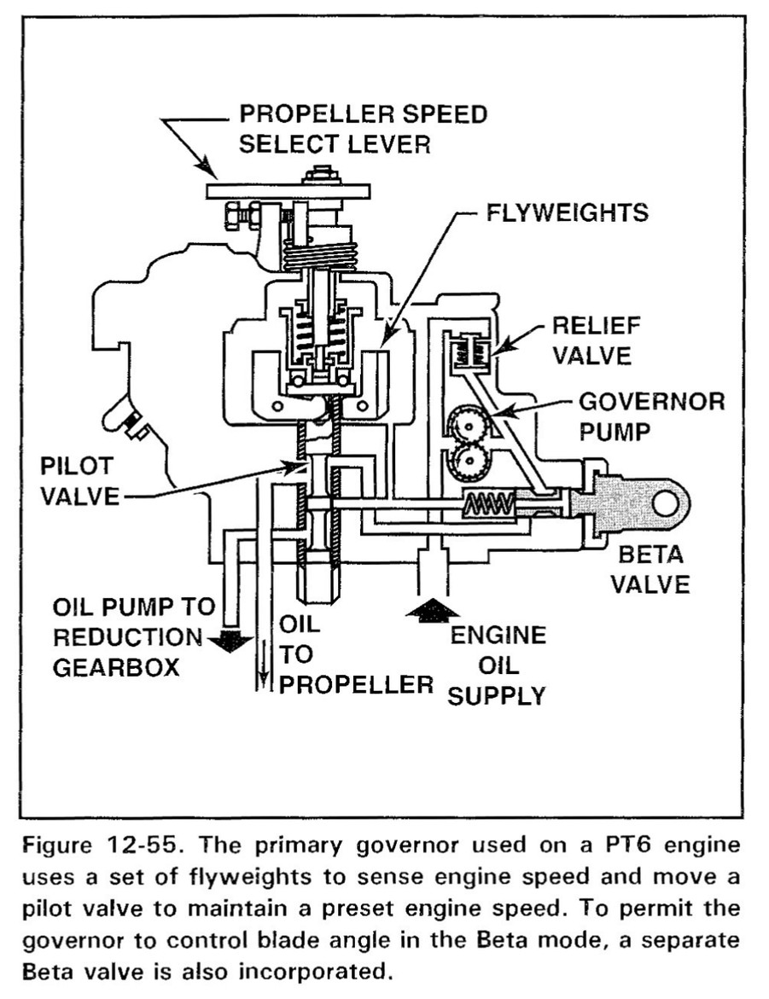
오버스피드 거버너 작동은 비교적 단순합니다. 스피더 스프링이 플라이웨이트 세트에 미리 정한 압력을 가합니다. 엔진이 가속하면 원심력이 플라이웨이트를 밖으로 당겨 파일럿 밸브를 올립니다. 엔진이 최대 정격 속도를 초과하면 플라이웨이트에 작용하는 원심력이 플라이웨이트를 충분히 밖으로 당겨 파일럿 밸브를 올려 오일이 프로펠러 허브에서 빠져나가게 합니다. 이 오일 압력 감소로 스프링 장력과 프로펠러 블레이드 카운터웨이트에 작용하는 원심력이 블레이드 각도를 늘려 엔진을 늦춥니다. 오버스피드 거버너 작동을 점검하기 위해 보통 거버너에 전기 테스트 솔레노이드가 포함됩니다. 이 솔레노이드는 조종석 스위치를 순간적으로 닫아 작동합니다. 지상 런업 중 엔진을 고속으로 돌리면서 이 스위치를 누르면, 오버스피드 거버너가 제대로 작동할 경우 프로펠러 최대 속도가 정상보다 다소 낮아집니다. 다만 파워 레버가 전진된 상태에서 이 테스트 스위치를 놓지 않도록 주의해야 하는데, 그러지 않으면 실제 오버스피드 상황이 발생할 수 있습니다.The overspeed governor's operation is simple: a speeder spring applies a set pressure to flyweights, and as the engine accelerates, centrifugal force pulls them out to raise a pilot valve. If the engine exceeds its maximum rated speed, the force pulls the flyweights out far enough to raise the pilot valve so oil escapes from the hub, and this reduction lets spring tension and centrifugal force on the counterweights increase blade angle to slow the engine. To check it, an electrical test solenoid is usually included, activated by momentarily closing a cockpit switch: during a ground runup at high speed, pressing it should make the propeller's maximum speed somewhat less than normal if the governor works—but take care not to release the switch with the power lever advanced, or an actual overspeed can occur.
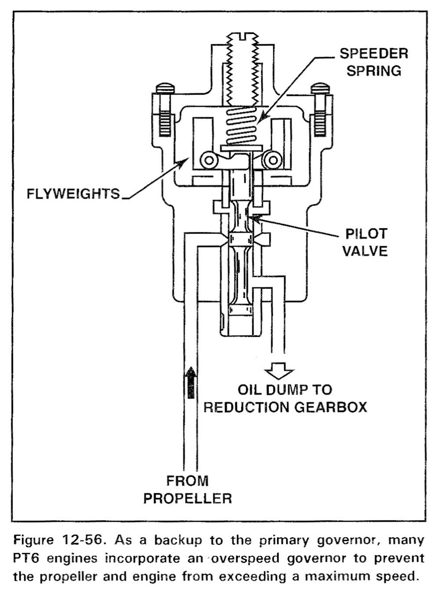
프로펠러 오버스피드를 막는 또 다른 안전장치로 일부 PT6 엔진에는 연료 토핑 거버너도 설치됩니다. 이 거버너도 프로펠러 속도를 감지합니다. 프로펠러 속도가 오버스피드 거버너의 최대 한계를 초과하면 연료 토핑 거버너가 연료 컨트롤 유닛에서 블리드 에어의 일부를 덤프합니다. 이 동작이 연료 컨트롤로 하여금 엔진으로의 연료를 줄이게 하고, 가스 발생기 속도가 감소해 결과적으로 프로펠러 속도가 감소합니다. 연료 컨트롤 유닛은 엔진 후면에 설치되며 캠 조립체를 통해 1차 프로펠러 거버너의 베타 밸브와 프로펠러의 베타 슬립 링에 연결됩니다. 조종석 컨트롤은 파워 레버, 프로펠러 컨트롤 레버, 그리고 대부분의 설치에서 연료 차단 레버(컨디션 레버)로 구성됩니다. 알파 모드에서 파워 레버는 원하는 가스 발생기 성능을 위해 적절한 연료 흐름을 스케줄링하도록 연료 컨트롤을 조정해 엔진 출력을 제어합니다. 베타 모드에서는 파워 레버가 연료 컨트롤 유닛과 프로펠러 블레이드 각도 모두를 제어합니다. 프로펠러 컨트롤 레버는 1차 프로펠러 거버너에 연결되어 재래식 정속 거버너와 같은 방식으로 거버너 스피더 스프링에 가해지는 장력을 조정하며, 완전 후방으로 움직이면 프로펠러 피스톤에서 오일 압력이 덤프돼 프로펠러가 페더됩니다. 역전 프로펠러 설치에만 주로 쓰이는 연료 차단(컨디션) 레버는 두 기능을 하는데, 연료 컨트롤 유닛에서 확실한 연료 차단을 제공해 엔진을 정지시키고, 가스 발생기의 저·고 아이들 속도를 설정합니다. 컨디션 레버의 두 위치는 약 50퍼센트 가스 발생기 속도를 제공하는 LOW IDLE과 약 70퍼센트를 얻게 하는 HIGH IDLE이며, LOW IDLE은 지상 작동에, HIGH IDLE은 비행에 씁니다.As another safeguard, some PT6 engines add a fuel topping governor that also senses propeller speed: if speed exceeds the overspeed governor's maximum, it dumps some bleed air from the fuel control unit, making the control reduce fuel so gas-generator speed drops and propeller speed falls. The fuel control unit, on the engine rear, links through a cam to the primary governor's Beta valve and the propeller's Beta slip ring to provide input in Beta mode. Cockpit controls are a power lever, a propeller control lever, and usually a fuel cutoff (condition) lever. In Alpha mode, the power lever controls engine output by adjusting the fuel control to schedule proper flow for the desired gas-generator performance; in Beta mode it controls both the fuel control and blade angle. The propeller control lever connects to the primary governor and adjusts speeder-spring tension like a conventional constant-speed governor, and full aft movement dumps oil pressure from the piston to feather. The fuel cutoff (condition) lever, used mainly on reversing installations, has two functions: a positive fuel shutoff at the fuel control to shut down the engine, and setting the gas generator's low and high idle—its two positions are LOW IDLE (about 50 percent gas-generator speed) for ground operations and HIGH IDLE (about 70 percent) for flight.
- A. 완전 고피치 위치에 머문다.remain in the full HIGH PITCH position.
- B. 고피치 스톱에 닿을 때까지 정상적으로 엔진 RPM을 유지한다.maintain engine RPM in the normal manner until the HIGH PITCH stop is reached.
- C. 완전 저피치 위치에 머문다(remain in the full LOW PITCH position).remain in the full LOW PITCH position.
- A. 완전 감소, 저피치 각도.Full decrease, low propeller blade pitch angle.
- B. 완전 증가, 고피치 각도.Full increase, high propeller blade pitch angle.
- C. 완전 증가, 저피치 각도(Full increase, low propeller blade pitch angle).Full increase, low propeller blade pitch angle.
- A. 거버너 플라이웨이트에 작용하는 원심력이 스피더 스프링 장력보다 크다.centrifugal force acting on the governor flyweights is greater than the tension of the speeder spring.
- B. 스피더 스프링 장력이 플라이웨이트에 작용하는 원심력보다 작다.tension on the speeder spring is less than the centrifugal force acting on the governor flyweights.
- C. 거버너 플라이웨이트의 원심력이 스피더 스프링 힘과 같다(centrifugal force of the governor flyweights is equal to the speeder spring force).centrifugal force of the governor flyweights is equal to the speeder spring force.
- A. 블레이드 각도 감소, RPM 감소.Blade angle will decrease and RPM will decrease.
- B. 블레이드 각도 증가, RPM 감소.Blade angle will increase and RPM will decrease.
- C. 블레이드 각도 감소, RPM 증가(Blade angle will decrease and RPM will increase).Blade angle will decrease and RPM will increase.
- A. 온스피드.On speed.
- B. 언더스피드.Underspeed.
- C. 오버스피드(Overspeed).Overspeed.
- A. 오일 압력(oil pressure).oil pressure.
- B. 스프링 압력.spring pressure.
- C. 원심 비틀림 모멘트.centrifugal twisting moment.
- A. 슬립 링과 세그먼트 플레이트로.By slip rings and segment plates.
- B. 슬립 링과 브러시로(By slip rings and brushes).By slip rings and brushes.
- C. 플렉시블 전기 커넥터로.By flexible electrical connectors.
- A. 거버너 부스터 펌프 출력을 변화시켜.By varying the output of the governor booster pump.
- B. 스로틀을 전진·후퇴시켜.By advancing or retarding the throttle.
- C. 거버너 내 플라이웨이트에 대한 부하 장력을 변화시켜(By changing the load tension against the flyweights in the governor).By changing the load tension against the flyweights in the governor.
프로펠러 검사·정비 📙 Jeppesen 참고
Propeller Inspection & Maintenance프로펠러 검사는 블레이드 트래킹(각 블레이드가 같은 궤도를 도는지, 보통 1/16인치 이내)과 정적·동적 밸런싱으로 진동을 잡습니다. 진동은 불균형·트랙 어긋남·블레이드각 차이가 원인입니다. 알루미늄 블레이드의 흠(nick)·긁힘은 응력집중·피로균열의 시작점이므로, 앞전 손상은 규정 한계 내에서 매끈히 드레싱(파일·연마)해 제거하고 보호도장합니다.Propeller inspection uses blade tracking (each blade following the same path, usually within 1/16 in) and static/dynamic balancing to control vibration. Vibration comes from imbalance, out-of-track, or differing blade angles. Nicks and scratches on aluminum blades start stress concentrations and fatigue cracks, so leading-edge damage is dressed out smoothly (filed/sanded) within limits and refinished.
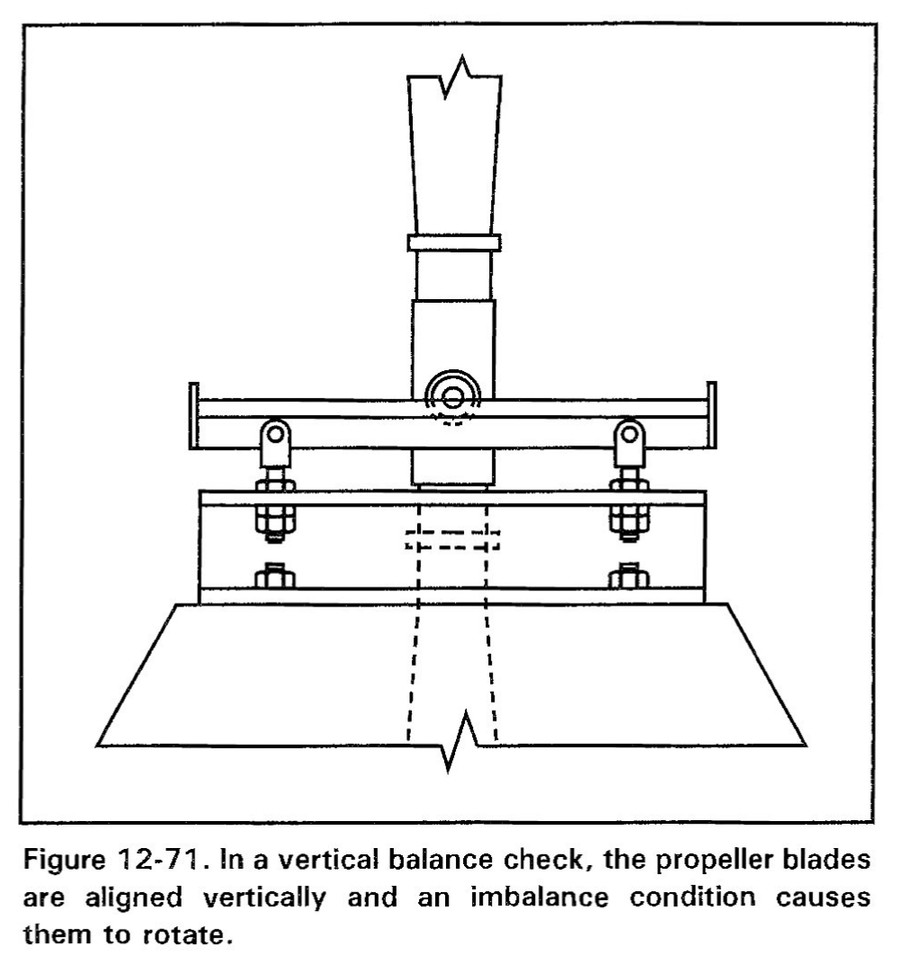
허브·피치변경 기구의 오일 누유, 볼트 토크·안전결선, 스피너 균열을 점검하고, 목재·복합재 블레이드는 박리·부식을 봅니다. 프로펠러는 감항성 지시(AD)와 수명한계·오버홀 주기가 엄격히 적용되므로 기록으로 이력을 관리합니다. 피치가 안 바뀌면 거버너 오일압·돔/피스톤 고착·누유를 점검합니다.Check the hub and pitch-change mechanism for oil leaks, bolt torque and safety wire, and spinner cracks, and inspect wood/composite blades for delamination and corrosion. Propellers have strict ADs, life limits, and overhaul intervals tracked by records. If pitch won't change, check governor oil pressure, a stuck dome/piston, and leaks.
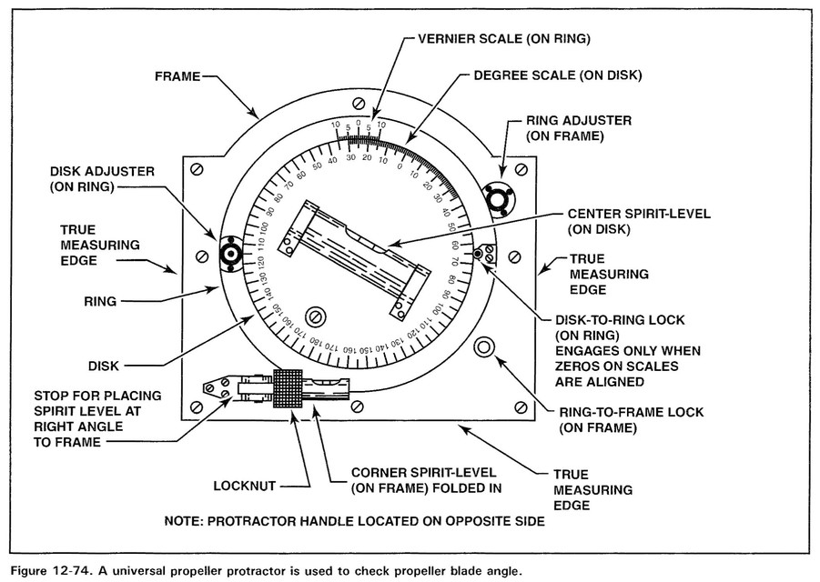
📌 금속 프로펠러 블레이드의 소수리 — 앞전·뒷전과 면의 작은 찍힘(nick)·긁힘은 매뉴얼(AC 43.13-1B, 제작사 자료)이 정한 깊이·위치 한계 안에서 줄·사포로 다듬어 없앱니다. 손상부를 완만한 곡선으로 넓게 갈아 응력 집중을 없애고(날카로운 모서리를 남기지 않음), 블레이드 길이 방향과 나란하게 마무리하며, 고운 사포로 매끄럽게 한 뒤 손상이 다 없어졌는지 염료 침투 탐상으로 확인하고 부식 방지 처리와 도장을 합니다. 블레이드 끝 쪽과 허브 가까운 쪽은 한계가 다르며, 한계를 넘거나 휨이 있으면 프로펠러 정비 조직의 일입니다. 수리 뒤 평형이 바뀔 수 있으므로 필요하면 평형을 확인합니다.📌 Performing a minor repair to a metal propeller blade — Small nicks and scratches on the leading and trailing edges and faces are dressed out with a file and abrasive paper within the depth and location limits set by the manual (AC 43.13-1B, manufacturer data). Blend the damage into a broad, smooth curve to eliminate stress concentration (leaving no sharp edges), finish parallel to the blade's length, smooth it with fine abrasive, confirm with dye penetrant inspection that the damage is fully removed, and apply corrosion protection and paint. Limits differ near the tip and near the hub; damage beyond limits or any bending is work for a propeller repair station. Since a repair can change balance, check balance if required.
- A. 피로 파손(fatigue failure).fatigue failure.
- B. 재료 디본드.material de-bond.
- C. 휨(warpage).warpage.
프로펠러 검사·정비 규정과 인가 정비 인원 심화 📙 Jeppesen 정독
Propeller Inspection, Maintenance Regulations, and Personnel항공정비사로서 여러 종류의 프로펠러를 검사하고 정기 정비를 수행할 가능성이 높습니다. 따라서 프로펠러 정비 절차에 익숙한 것에 더해 프로펠러에 관한 정비 규정의 기본 지식을 갖춰야 합니다. 파워플랜트 등급을 가진 인증 항공정비사는 프로펠러에 대해 소수리(minor repair)와 소변경(minor alteration)만 수행하도록 인가됩니다. 14 CFR 43 "정비, 예방 정비, 재제작, 변경"은 프로펠러 계통의 여러 정비 등급을 정의합니다. 부록 D는 프로펠러와 그 컨트롤의 100시간·연차 검사 최소 요건을 담습니다. 예를 들어 연차 또는 100시간 검사 중 최소한 프로펠러 조립체의 균열·니크·오일 누출을 점검해야 합니다. 또한 볼트의 적절한 토크와 적절한 기계적 안전을 검사해야 합니다. 프로펠러에 방빙 장치가 있으면 그 장치의 부적절한 작동과 명백한 결함을 검사해야 합니다. 프로펠러 컨트롤 기구의 부적절한 작동, 불안정한 장착, 제한된 이동도 검사해야 합니다.As an aviation maintenance technician, you'll likely inspect and perform routine maintenance on various propellers, so besides knowing procedures, you need a basic knowledge of the regulations. A certified technician with a powerplant rating is authorized to perform only minor repairs and minor alterations to propellers. 14 CFR 43 (Maintenance, Preventative Maintenance, Rebuilding, and Alteration) defines the maintenance classes; Appendix D holds the minimum requirements for 100-hour and annual inspections of propellers and controls. For example, at a minimum you must check assemblies for cracks, nicks, and oil leakage, inspect bolts for proper torque and mechanical safety, inspect any anti-icing devices for improper operation and obvious defects, and inspect control mechanisms for improper operation, insecure mounting, and restricted travel.
14 CFR 43 부록 A는 제조사나 승인된 인증 수리소만 수행할 수 있는 프로펠러 대변경(major alteration)과 대수리(major repair)를 나열합니다. 프로펠러 대변경에는 블레이드 설계, 허브 설계, 거버너나 컨트롤 설계의 변경이 포함됩니다. 또한 프로펠러 거버너, 페더링 계통, 디아이싱 계통, 프로펠러에 승인되지 않은 부품의 설치도 포함됩니다. 목재 프로펠러의 경우 대수리에는 리티핑(팁 교체), 페브릭 커버 교체, 인레이 작업 같은 항목이 포함됩니다. 외부 라미네이션 교체와 허브의 늘어난 볼트 구멍 수리도 대수리입니다. 강철 프로펠러 블레이드의 어떤 수리나 교정도 대수리이며, 강철 허브의 수리나 기계 가공도 마찬가지입니다. 알루미늄 프로펠러 블레이드의 경우 대수리에는 블레이드의 단축이나 교정, 깊은 덴트·컷·스카·니크 수리가 포함됩니다.14 CFR 43 Appendix A lists propeller major alterations and repairs performable only by the manufacturer or an approved certified repair station. Major alterations include changes in blade, hub, and governor or control design, plus installations of propeller governors, feathering systems, deicing systems, and parts not approved for the propeller. For wood propellers, major repairs include retipping, replacing fabric covering, and inlay work; replacing outer laminations and repairing elongated bolt holes in a hub are also major. Any repair to or straightening of steel blades is major, as is repair or machining of a steel hub. For aluminum blades, major repairs include shortening or straightening blades and repairing deep dents, cuts, scars, and nicks.
부록 A에 나열된 다른 대수리로는 가변피치 프로펠러 오버홀, 프로펠러 거버너 수리, 내부 디아이스 가열 요소 같은 내부 블레이드 요소의 수리나 교체가 있습니다. 프로펠러의 대수리·대변경으로 간주되는 항목 수를 고려하면 특정 수리·변경이 대(major)인지 소(minor)인지 알기 어려울 수 있습니다. 계획한 변경·수리의 상태가 의심스러우면 지역 비행 표준 지구 사무소(FSDO)나 동등한 규제 사무소에 문의합니다. 인증 수리소나 제조사의 권한 하에 작업하는 경우를 제외하고는 프로펠러 대변경·대수리 수행이 제한됩니다. 그러나 소수리·소변경은 수행할 수 있습니다. 또한 프로펠러와 관련 부품을 설치하고 100시간 검사를 수행할 수 있습니다. 검사 인가(IA)를 보유한 항공정비사는 프로펠러와 관련 부품의 연차 검사를 수행할 수 있습니다. 프로펠러와 관련 부품·기기의 대수리·대변경 후에는 프로펠러 수리소나 제조사 같은 적절한 등급의 시설만 이 부품들을 사용 승인(return to service)할 수 있음을 기억해야 합니다.Other major repairs in Appendix A include controllable-pitch propeller overhauls, governor repairs, and repair or replacement of internal blade elements like internal deice heating elements. Given how many items are major, it can be hard to know whether a specific repair or alteration is major or minor; when in doubt, contact your local Flight Standards District Office (FSDO) or equivalent. Except when working under a certified repair station or manufacturer, you're restricted from major alterations or repairs, but may perform minor ones, install a propeller and related components, and do a 100-hour inspection. A technician holding an Inspection Authorization may do an annual inspection of a propeller and related components. Remember that after major repairs and alterations, only an appropriately rated facility—such as a propeller repair station or the manufacturer—may return these parts to service.
특정 검사 항목과 소정비 작업은 프로펠러 종류와 부속에 따라 다릅니다. 항상 특정 지침과 서비스 한계는 해당 항공기나 프로펠러 정비 매뉴얼과 서비스 회보를 참고해야 합니다. 고정피치 목재 프로펠러는 비교적 단순하지만, 그 세부 구조는 면밀한 육안 검사를 요합니다. 예를 들어 목재 프로펠러는 100시간 간격으로 균열, 갈라짐, 뒤틀림, 접착 이음새 분리, 스크루·볼트 헐거움, 금속 팁·리딩 에지 손상 등을 검사합니다. 항상 관련 정비 매뉴얼과 서비스 회보의 특정 지침·서비스 한계를 참고하는 것이 프로펠러 정비의 기본 원칙입니다.Specific inspection items and minor tasks vary by propeller type and accessories; always consult the appropriate aircraft or propeller maintenance manuals and service bulletins for specific instructions and service limits. A fixed-pitch wood propeller is relatively simple, but its fine construction requires close visual inspection—for example, wood propellers are inspected at 100-hour intervals for cracks, splits, warpage, separation of bonded seams, loose screws or bolts, and damage to metal tips or leading edges. Consulting the relevant maintenance manuals and service bulletins for specific instructions and service limits is a basic principle of propeller maintenance.
📌 프로펠러 TCDS와 허용되는 소개조 판단 — 프로펠러에도 별도의 형식증명 자료(TCDS)가 있어 모델 표기 방식, 허브·블레이드 조합, 지름 범위, 최대 출력·회전수, 피치 설정, 필요한 지시·제한을 정합니다. 그 기체에 어떤 프로펠러가 승인되는지는 항공기 TCDS(또는 STC)와 함께 봐야 합니다. 정비사가 할 수 있는 소개조는 승인된 자료 안에서 판단합니다. 예를 들어 블레이드 끝을 정해진 범위 안에서 잘라 지름을 줄이는 것은 TCDS·제작사 자료의 최소 지름과 그 기체의 허용 범위 안이어야 하고, 승인되지 않은 프로펠러·블레이드 조합이나 범위 밖의 변경은 대개조로 승인 자료가 필요합니다(Part 43 부록 A). 프로펠러 정비 기록과 AD도 함께 확인합니다.📌 Propeller TCDS and determining acceptable minor alterations — Propellers have their own type certificate data sheets (TCDS), which define the model designation system, hub and blade combinations, diameter ranges, maximum power and RPM, pitch settings, and required markings and limitations. Which propellers are approved for a given aircraft must be read together with the aircraft TCDS (or STC). Minor alterations a mechanic may perform are judged within approved data: for example, cutting off blade tips to reduce diameter must stay within the minimum diameter in the propeller TCDS and manufacturer data and within the range allowed for that aircraft, while unapproved hub-blade combinations or changes outside the ranges are generally major alterations requiring approved data (Part 43 Appendix A). Also check the propeller records and ADs.
- A. 블레이드의 횡방향 강도 증가.To increase the lateral strength of the blade.
- B. 팁과 전연의 충격 손상 방지(To prevent impact damage to the tip and leading edge of the blade).To prevent impact damage to the tip and leading edge of the blade.
- C. 블레이드의 길이방향 강도 증가.To increase the longitudinal strength of the blade.
- A. 블레이드 길이방향에 평행하게(parallel to the length of the blade).parallel to the length of the blade.
- B. 블레이드 축에 수직으로.perpendicular to the blade axis.
- C. 손상부를 원래 치수로 되돌리도록.so as to return the damaged area to the original dimensions.
- A. 리플 파일로 가공(filing with a riffle file).filing with a riffle file.
- B. 반원형 또는 평 파일로 가공.filing with a half round or flat file.
- C. 거친 샌딩 후 적절한 필러 도포.rough sanding and applying a proper filler.
- A. 대변경(a major alteration).a major alteration.
- B. 대수리(a major repair).a major repair.
- C. 파워플랜트 등급 권한·한계 내 허용.permitted under the privileges and limitations of a powerplant rating.
목재 프로펠러의 검사·수리와 수리 불가 결함 심화 📙 Jeppesen 정독
Wood Propeller Inspection, Repair, and Non-Repairable Defects연차·100시간 검사 중 균열과 니크를 점검하고 볼트가 적절히 조여지고 고정됐는지 확인합니다. 필요한 육안 검사는 대부분 프로펠러를 엔진에 장착한 채로 수행하지만, 때로 프로펠러를 떼어내야 할 수 있습니다. 예를 들어 과도한 진동이 감지·보고되면 늘어난 장착 볼트 구멍이나 적절한 밸런스를 점검하기 위해 프로펠러를 떼어낼 수 있습니다. 프로펠러 검사를 시작하기 전에 세척해야 합니다. 목재 프로펠러는 브러시나 천과 깨끗한 따뜻한 물·비누로 세척합니다. 항공기가 염수 근처에서 운용되면 프로펠러를 정기적으로 담수로 플러싱해야 합니다. 목재 프로펠러 제거는 보통 스피너, 코터 핀이나 와이어 같은 안전장치, 장착 볼트를 제거하는 간단한 일입니다.During annual and 100-hour inspections, check for cracks and nicks and verify bolts are properly tightened and secured. Most required visual inspections are done with the propeller on the engine, but occasionally you must remove it—for example, if excessive vibration is detected or reported, to check for elongated mounting bolt holes or proper balance. Before inspecting, clean it: wash wood propellers with a brush or cloth and clean warm water and soap, and if the aircraft operates near salt water, flush the propeller with fresh water regularly. Removing a wood propeller is usually simple—remove the spinner, safety devices like cotter pins or wire, and the mounting bolts.
목재 프로펠러에서 흔히 발견되는 결함으로 라미네이션 간 분리와 표면 덴트·멍이 있습니다. 블레이드 배면이나 앞면을 가로지르는 균열·스카, 부러진 부분, 워핑, 마모·오버사이즈 센터 보어·볼트 구멍도 가능합니다. 블레이드 표면에서 덴트·멍·스카를 발견하면 블레이드를 구부려 균열을 드러내며 돋보기로 손상을 검사합니다. 금속 팁핑을 검사할 때는 헐거움이나 미끄러짐, 헐거운 스크루·리벳, 솔더 이음새 균열을 봅니다. 블레이드 팁 근처 솔더 이음새의 균열은 목재 열화 가능성을 나타냅니다. 따라서 블레이드 팁에 압력을 가하면서 균열 근처 영역을 면밀히 검사합니다. 결함이 없으면 이음새를 다시 납땜할 수 있으며, 균열 재발을 점검하기 위해 블레이드 팁의 더 잦은 검사를 권장해야 합니다. 지상조정 프로펠러의 목재 블레이드를 검사할 때는 금속 슬리브와 섕크 영역에 특별히 주의합니다. 이 영역의 균열은 부러지거나 헐거운 래그 스크루를 나타낼 수 있습니다.Common wood-propeller defects include separation between laminations and surface dents or bruises; cracks or scars across the blade back or face, broken sections, warping, and worn or oversize center bore and bolt holes are also possible. If you find a dent, bruise, or scar, inspect it with a magnifying glass while flexing the blade to expose cracks. When inspecting metal tipping, look for looseness or slipping, loose screws or rivets, and cracks in solder joints; a crack in a solder joint near the tip indicates possible wood deterioration, so inspect closely near the crack while applying pressure to the tip—if no defects, you can resolder the joint and recommend more frequent tip inspections for recurrence. On ground-adjustable propellers, give special attention to the metal sleeve and shank area, where cracks might indicate broken or loose lag screws.
일반적으로 결(grain)에 평행한 작은 균열이나 목재 프로펠러의 작은 컷은 균열에 수지 접착제를 밀어넣어 수리할 수 있습니다. 접착제가 마르면 고운 사포로 그 영역을 사포질하고 승인된 바니시로 재마감합니다. 수리 가능한 팁 페브릭 결함으로는 팁을 비틀거나 구부릴 때 나타나는 균열, 버블, 페인트 벗겨짐, 주름이 있습니다. 팁 페브릭에 3/4인치 이하의 표면 결함이 있고 목재 구조 붕괴가 의심되지 않으면 여러 겹의 래커로 결함을 채울 수 있습니다. 래커가 마르면 결함을 페브릭 표면과 블렌딩합니다. 3/4인치보다 큰 결함은 수리소에 의뢰합니다. 일반적으로 외부 라미네이션의 분리는 수리 가능하지만, 인증 프로펠러 수리소나 제조사가 수리를 해야 합니다. 프로펠러 수리소나 제조사가 할 수 있는 추가 수리로는 인레이가 필요한 큰 균열이나 금속 인서트로 늘어난 볼트 구멍을 복원하는 것이 있습니다. 목재 프로펠러 블레이드 수리 작업의 마지막 단계는 보호 코팅 적용입니다. 보호 코팅 복원이 프로펠러 블레이드 밸런스를 바꿀 수 있음에 유의합니다. 따라서 블레이드 재마감 후 프로펠러 밸런스를 점검해야 하며, 불균형 상태이면 밸런스를 얻기 위해 한 블레이드에 보호 코팅을 더 적용해야 할 수 있습니다. 모든 프로펠러가 그렇듯 일부 결함은 수리할 수 없습니다. 목재 프로펠러의 경우 이에는 결을 가로지르는 균열이나 깊은 컷, 갈라진(스플릿) 블레이드, 고정피치 프로펠러의 외부 라미네이션을 제외한 분리된 라미네이션, 빈 스크루·리벳 구멍이 포함됩니다.Small cracks parallel to the grain or small cuts on a wood propeller can typically be repaired by working resin glue into the crack; after it dries, sand with fine sandpaper and refinish with approved varnish. Repairable tip-fabric defects include cracks, bubbles, paint chipping, and wrinkles appearing when the tip is twisted or flexed; if tip fabric defects are 3/4 inch or less and no wood breakdown is suspected, fill with several coats of lacquer, then blend into the fabric surface—refer defects larger than 3/4 inch to a repair station. Outer-lamination separations are typically repairable, but only by a certified repair station or the manufacturer, who can also repair large cracks needing an inlay or restore elongated bolt holes with metal inserts. The final repair step is applying a protective coating; because restoring it could change blade balance, check propeller balance after refinishing, and if out of balance, you might apply more coating on one blade to balance. As with all propellers, some defects can't be repaired: for wood these include a crack or deep cut across the grain, a split blade, separated laminations (except the outside laminations of a fixed-pitch propeller), and empty screw or rivet holes.
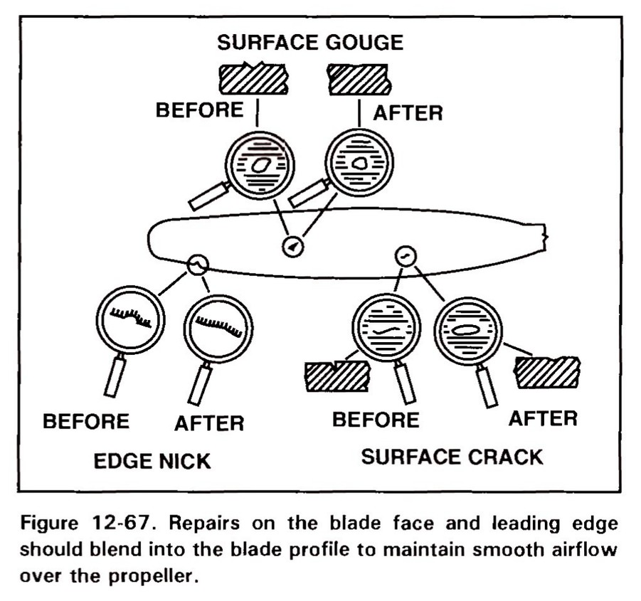
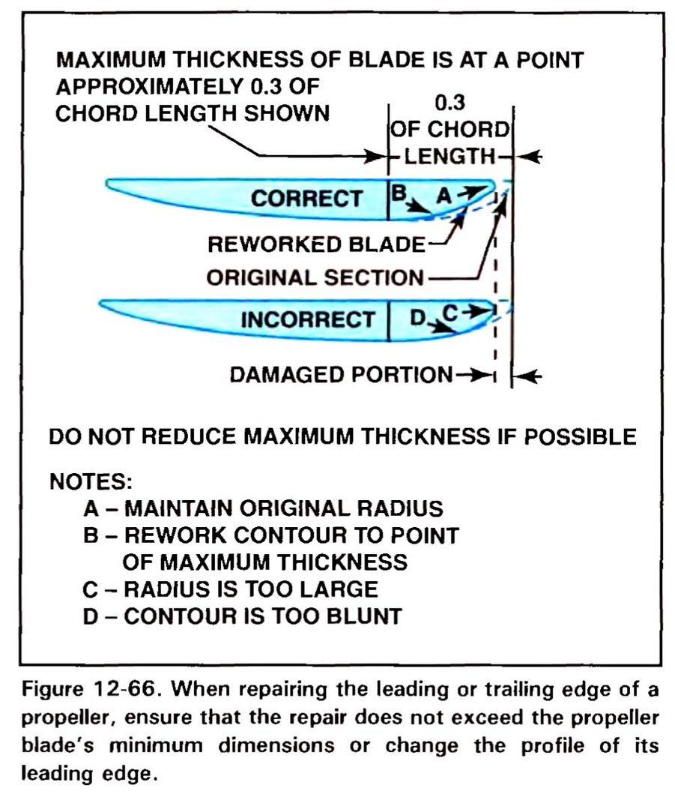
- A. 금속 팁핑을 고정하는 나사 머리의 솔더 누락.Solder missing from screw heads securing metal tipping.
- B. 오버사이즈 허브/볼트 홀, 또는 늘어난 볼트 홀(An oversize hub or bolt hole, or elongated bolt holes).An oversize hub or bolt hole, or elongated bolt holes.
- C. 프로펠러에 보호 코팅 없음.No protective coating on propeller.
- A. 순한 비누와 물(mild soap and water).mild soap and water.
- B. 스틸울.steel wool.
- C. 메틸에틸케톤(MEK).methyl ethyl ketone.
블레이드 각도 조정·트래킹·트러블슈팅과 프로펠러 장착 심화 📙 Jeppesen 정독
Blade Angle Adjustment, Tracking, Troubleshooting, and Installation프로펠러 블레이드 인덱스 번호(베이스 세팅)는 보통 인덱스 핀 리세스 근처의 납 플러그에 각인됩니다. 이 번호는 프로펠러가 마지막 오버홀 때 조정된 최대 블레이드 각도를 나타냅니다. 최대 블레이드 각도는 보통 25도이며 인덱스 핀의 스톱 너트를 어디에 위치시킬지 계산하는 데 씁니다. 예를 들어 블레이드 인덱스가 25도이고 항공기 사양이 저블레이드 각도 17도, 고각도 22도를 지정하면, 인덱스에서 해당 블레이드 각도를 빼서 스톱 너트 위치를 정합니다. 17도 저각도를 설정하려면 스톱 너트를 스케일의 8도(25-17=8) 표시에 정렬하고, 22도 고각도는 3도(25-22=3) 표시에 정렬합니다. 스톱 너트 설정 후 인덱스 핀을 카운터웨이트에 재설치하고 캡을 교체하며, 블레이드를 전 이동 범위로 움직인 뒤 최대 블레이드 각도에서 지정 기준 스테이션(카운터웨이트 프로펠러의 흔한 기준은 42인치 스테이션)에서 측정합니다.The blade index number (base setting) is normally stamped in a lead plug near the index-pin recess and indicates the maximum blade angle set at the last overhaul—typically 25 degrees—used to calculate stop-nut positions on the index pin. If the index is 25 degrees and the aircraft specifies a 17-degree low angle and 22-degree high angle, subtract each from the index: for 17 degrees, align the stop nut with the 8-degree mark (25−17=8); for 22 degrees, the 3-degree mark (25−22=3). After setting, reinstall the index pins in the counterweights, replace the caps, move the blades through their full travel, and measure at the specified reference station—a common one for a counterweighted propeller is the 42-inch station.
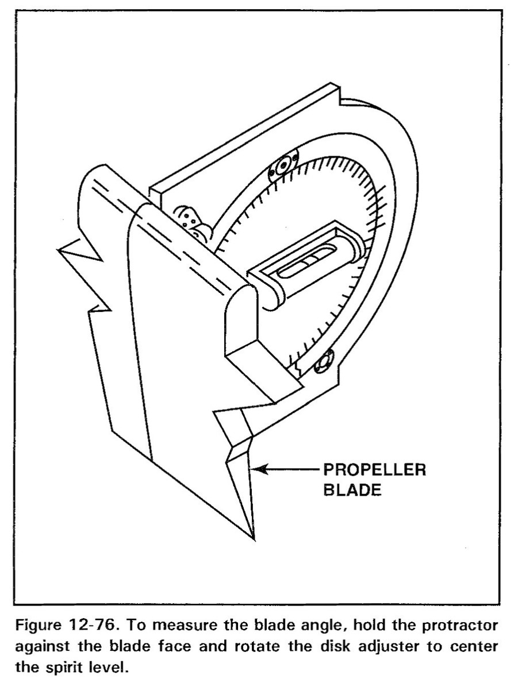
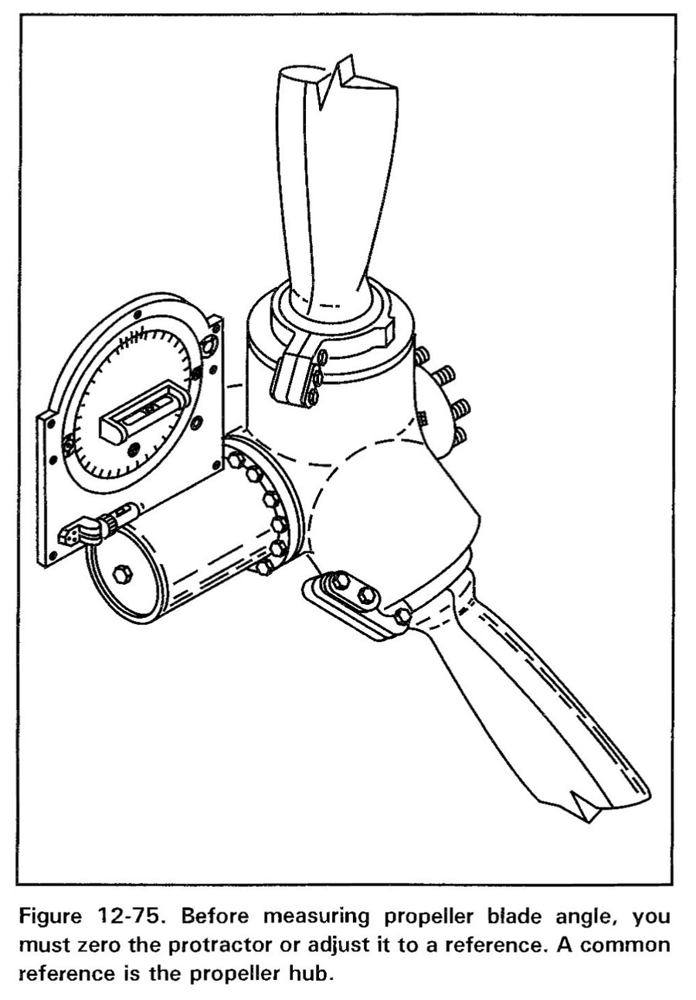
Hartzell 강철 허브 프로펠러는 허브 클램프를 풀고 블레이드를 회전시켜 원하는 저블레이드 각도로 조정할 수 있습니다. 다만 프로펠러 허브 내 피스톤이 고정된 양만큼만 이동할 수 있으므로, 저블레이드 각도를 바꾸면 고블레이드 각도도 바뀜에 유의합니다. Hartzell 컴팩트 프로펠러의 저피치 설정은 허브 실린더의 조정 나사로 조정합니다. 조정 나사의 잼 너트를 풀고 시계 방향으로 돌려 저각도를 늘리거나 반시계 방향으로 돌려 각도를 줄인 뒤 잼 너트를 다시 조입니다. 블레이드 각도를 바꿀 때는 항상 특정 모델 지침을 위해 항공기 사양과 프로펠러 제조사 매뉴얼을 참조합니다. 프로펠러 블레이드 트래킹(blade tracking)은 각 블레이드 팁이 회전 호를 지날 때 그 궤적을 점검하는 절차로, 블레이드 팁의 상대 위치를 서로 비교합니다. 검사 중, 진동 문제 트러블슈팅 중, 또는 밸런싱·재설치 후 최종 점검으로 트래킹을 점검합니다. 경항공기의 직경 6피트 이하 금속 프로펠러 블레이드는 서로 1/16인치 이내로 트래킹해야 하고, 목재 프로펠러 블레이드는 1/8인치 이내로 트래킹해야 합니다.Hartzell steel-hub propellers can be adjusted for the desired low blade angle by loosening the hub clamps and rotating the blades, but because the piston can travel only a fixed amount, changing the low angle also changes the high angle. A Hartzell compact propeller's low-pitch setting is adjusted with the adjusting screw on the hub cylinder: loosen the jam nut, rotate clockwise to increase or counter-clockwise to decrease the low angle, then retighten. Always refer to aircraft specifications and the manufacturer's manual for specific models. Blade tracking checks the track of each blade tip through its arc, comparing tip positions relative to each other—done during inspection, when troubleshooting vibration, or as a final check after balancing and reinstalling. Metal blades up to six feet in diameter on light aircraft must track within 1/16 inch of each other, and wood blades within 1/8 inch.
블레이드를 트래킹하려면 먼저 휠을 촉으로 고여 항공기를 정지 위치에 고정합니다. 항공기를 고정한 후 프로펠러 호의 1/4인치 이내 지면에 고정 기준점을 설정합니다. 프로펠러 호 아래 블록 위에 판을 놓고 종이를 판에 테이프로 붙여 이를 할 수 있습니다. 기준점이 준비되면 프로펠러 블레이드를 회전시켜 각 블레이드의 궤적을 표시합니다. 모든 블레이드의 최대 트랙 차이는 앞서 언급한 한계를 초과해서는 안 됩니다. 프로펠러 트랙이 허용 한계보다 크면 이유를 규명하고 상태를 시정합니다. 가장 쉽게 점검할 항목은 프로펠러 고정 볼트의 토크입니다. 모든 볼트가 적절히 고정됐으면 프로펠러를 떼어 이물질이나 손상을 검사합니다. 또한 크랭크축 정렬을 점검해야 할 수 있습니다. 명백한 문제가 없으면 내부 플랜지와 프로펠러 사이에 심(shim)을 넣어 과도한 아웃오브트랙 상태를 바로잡을 수 있습니다.To track the blades, first lock the aircraft stationary by chocking the wheels; then set a fixed ground reference within 1/4 inch of the propeller arc—place a board on blocks under the arc and tape paper to it. With the reference in place, rotate the propeller and mark each blade's track; the maximum difference for all blades must not exceed the stated limits. If the track exceeds the allowable limit, find the reason and correct it: the easiest item to check is the retaining-bolt torque, and if all bolts are secure, remove the propeller and inspect for debris or damage, and you might need to check crankshaft alignment. If no obvious problems, correct an excessive out-of-track condition by placing shims between the inner flange and the propeller.
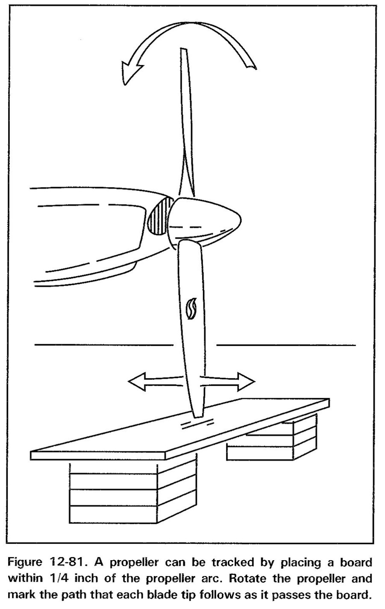
동력장치 진동의 원인은 정확히 짚기 어려울 수 있습니다. 진동이 엔진에서 나오는지 프로펠러에서 나오는지 판별하려면 프로펠러 허브·돔·스피너를 관찰합니다. 엔진을 1,200~1,500rpm으로 돌릴 때 허브나 스피너가 크랭크축 중심선 축을 중심으로 회전해야 합니다. 프로펠러 허브가 약간 궤도를 그리며 흔들리거나 고속에서 진동이 더 뚜렷해지면 진동은 프로펠러가 원인일 가능성이 높습니다. 프로펠러 허브가 진동(오실레이션)하면 문제는 엔진 진동이 원인일 가능성이 높습니다. 과도한 동력장치 진동이 프로펠러에 기인하면 여러 상태를 점검·해결해야 합니다. 예를 들어 서로 다른 블레이드 각도 설정은 프로펠러 블레이드 간 불균등한 추력 분포를 초래해 진동을 유발할 수 있습니다. 추가 원인으로 프로펠러 블레이드 불균형, 부적절한 블레이드 트래킹, 헐거운 고정 너트, 헐거운 허브 하드웨어, 과도한 크랭크축 스플라인 마모가 있습니다. 진동 문제 외에 오작동하는 피치 변경 기구도 트러블슈팅이 필요할 수 있습니다. 예를 들어 오일 통로나 2위치 프로펠러의 피치 셀렉터 밸브의 슬러지는 피치 변경 명령에 느리거나 불규칙한 반응을 유발할 수 있습니다. 피치 변경 중 불규칙하거나 덜컥거리는 블레이드 움직임은 실린더에 갇힌 공기가 원인일 수 있으며, 프로펠러를 피치 변경 작동으로 여러 번 사이클링하면 보통 계통에서 공기가 배출됩니다.Powerplant vibration origins can be hard to pinpoint; to tell whether vibration comes from engine or propeller, observe the hub, dome, or spinner. Running between 1,200 and 1,500 rpm, the hub or spinner should rotate around the crankshaft centerline; if the hub appears to swing in a slight orbit or vibration worsens at higher speeds, the propeller is likely the cause, while if the hub oscillates, engine vibration is probably the cause. If excessive vibration traces to the propeller, check several conditions: dissimilar blade-angle settings cause uneven thrust distribution and vibration, and other causes include blade imbalance, improper tracking, a loose retaining nut, loose hub hardware, or excessive crankshaft spline wear. Besides vibration, a malfunctioning pitch-change mechanism may need troubleshooting—sludge in oil passages or a two-position propeller's pitch selector valve can cause slow or erratic pitch-change responses, and erratic or jerky blade movement can be from air trapped in the cylinder, usually purged by cycling the propeller through its pitch-change operation several times.
프로펠러를 엔진 크랭크축에 부착하는 방법은 크랭크축 설계에 따라 다릅니다. 현재 항공기 엔진에는 세 종류의 크랭크축이 쓰입니다: 플랜지 크랭크축, 테이퍼 크랭크축, 스플라인 크랭크축. 대부분의 수평대향 왕복엔진과 일부 터보프롭 엔진은 플랜지 프로펠러 샤프트를 씁니다. 크랭크축 앞부분이 크랭크축 중심선에 수직인 4~8인치 폭의 플랜지로 형성됩니다. 장착 볼트 구멍과 다월 핀 구멍이 플랜지에 가공되며, 일부 플랜지는 볼트 구멍에 나사 인서트가 압입돼 있습니다. 플랜지 샤프트에 프로펠러를 설치하기 전에 플랜지의 부식·니크·버·기타 표면 결함을 검사합니다. 또한 볼트 구멍과 나사 인서트가 깨끗하고 양호한지 확인합니다. 경미한 부식은 보통 아주 고운 사포로 제거하고, 사포질 후 플랜지를 세척해 매끄러운지 점검한 뒤 부식 방지와 향후 프로펠러 제거 용이를 위해 엔진 오일이나 안티시즈 컴파운드를 플랜지에 얇게 바릅니다. 플랜지가 휘었다고 의심되면 런아웃을 검사합니다. 고정피치 프로펠러를 플랜지 샤프트에 설치하기 전에 프로펠러 장착면이 깨끗하고 매끄러운지 검사하고, 부착 볼트가 양호한지 확인하며 염료 침투나 자분 탐상으로 균열을 검사합니다.The method of attaching a propeller varies with crankshaft design; three types are used today: flanged, tapered, and splined. Most horizontally opposed reciprocating and some turboprop engines use flanged shafts, with the crankshaft front formed into a four-to-eight-inch flange perpendicular to the centerline, mounting bolt holes and dowel-pin holes machined in, and some flanges with threaded inserts pressed into the bolt holes. Before installing on a flanged shaft, inspect the flange for corrosion, nicks, burrs, and surface defects, and ensure bolt holes and inserts are clean and good; remove light corrosion with very fine sandpaper, clean the flange after sanding, check for smoothness, then apply a light coat of engine oil or antiseize to prevent corrosion and ease future removal, and if a bent flange is suspected, inspect for runout. Before installing a fixed-pitch propeller, inspect its mounting surface for cleanliness and smoothness, verify the bolts are good, and inspect them for cracks with dye penetrant or magnetic particle inspection.
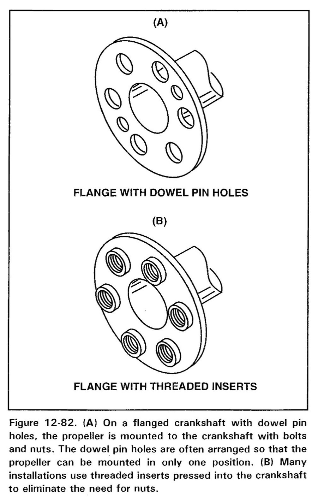
- A. 상대풍.relative wind.
- B. 블레이드의 코드(chord of the blade).chord of the blade.
- C. 블레이드 페이스.blade face.
- A. 허브 중심선에서 팁으로(hub center line to tip).hub center line to tip.
- B. 팁에서 허브 중심선으로.tip to hub center line.
- C. 블레이드 섕크 버트에서 팁으로.blade shank butt to tip.
- A. 피치 변경 기구의 노출·부식 방지(To prevent exposure and corrosion of the pitch changing mechanism).To prevent exposure and corrosion of the pitch changing mechanism.
- B. 오일이 식을 때 피스톤의 유압 록 방지.To prevent hydraulic lock of the piston when the oil cools.
- C. 다음 시동 시 엔진 과열 방지.To prevent overheating of the engine during the next start.
- A. 고운 스틸울 또는 스카치브라이트.fine steel wool or Scotch-Brite.
- B. 매우 고운 샌드페이퍼 또는 크로커스 천(very fine sandpaper or crocus cloth).very fine sandpaper or crocus cloth.
- C. 소프스톤 또는 와이어 브러시.soapstone or wire brush.
- A. 용제로 씻어냄(washing off with solvent).washing off with solvent.
- B. 알코올로 닦음.wiping with alcohol.
- C. 알로다인 용액으로 블레이드 헹굼.rinse the blade in alodine solution.
- A. 황동 나사.Brass screws.
- B. 셸락.Shellac.
- C. 솔더(Solder).Solder.
- A. 필요 시 밸런싱 샷을 삽입하는 수단.To provide a means for inserting balancing shot when necessary.
- B. 블레이드에 주기적으로 방부재를 함침하는 수단.To provide a means for periodically impregnating the blade with preservation materials.
- C. 팁핑과 목재 사이에 모일 수 있는 수분을 배출(To allow the moisture which may collect between the tipping and the wood to escape).To allow the moisture which may collect between the tipping and the wood to escape (vent the tipping).
- A. 피치 변경 스톱이 잘못 위치해 콘 시트가 고피치 스톱 역할.the pitch change stops were located incorrectly, causing the cone seats to act as the high pitch stop.
- B. 이전 작동 시 프로펠러 리테이닝 너트가 충분히 조여지지 않음(the propeller retaining nut was not tight enough during previous operation).the propeller retaining nut was not tight enough during previous operation.
- C. 장착 시 프론트 콘이 크랭크샤프트 스플라인에 완전히 바닥나지 않음.the front cone was not fully bottomed against the crankshaft splines during installation.
- A. 피스톤 개스킷.piston gasket.
- B. 스파이더-샤프트 오일 씰(spider-shaft oil seal).spider-shaft oil seal.
- C. 돔-배럴 오일 씰.dome-barrel oil seal.
- A. 가장 앞선 블레이드 인접 부착 볼트를 약간 더 조임.slightly overtightening the attachment bolts adjacent to the most forward blade.
- B. 아웃-오브-트랙은 교정 불가하므로 프로펠러 폐기.discarding the propeller since out-of-track conditions cannot be corrected.
- C. 이너 플랜지와 프로펠러 사이에 심을 삽입(placing shims between the inner flange and the propeller).placing shims between the inner flange and the propeller.
플랜지 샤프트 프로펠러 장착과 정속 프로펠러 설치 심화 📙 Jeppesen 정독
Flanged-Shaft and Constant-Speed Propeller Installation많은 플랜지가 프로펠러-샤프트 장착을 한 위치로만 제한하는 다월 핀을 씁니다. 플랜지가 다월을 쓰지 않으면 항공기나 엔진 정비 매뉴얼이 지정한 위치에 프로펠러를 설치합니다. 일부 설치에서는 최대 엔진 수명을 위해 프로펠러 위치가 중요하므로 이는 중요합니다. 4실린더 수평대향 엔진에서 위치가 지정되지 않으면 엔진 정지 시 블레이드가 10시·4시 위치에 오도록 프로펠러를 설치합니다. 이 위치는 진동을 가장 적게 발생시키는 경향이 있고 핸드프로핑에 가장 좋은 위치에 프로펠러를 둡니다.Many flanges use dowel pins limiting propeller-to-shaft mounting to only one position; if the flange has no dowels, install the propeller in the position specified by the aircraft or engine maintenance manual—important because propeller position is critical for maximum engine life in some installations. If no position is specified on a four-cylinder horizontally opposed engine, install the propeller with the blades at the 10 o'clock and 4 o'clock position when stopped, which tends to produce the least vibration and puts the propeller in the best position for hand propping.
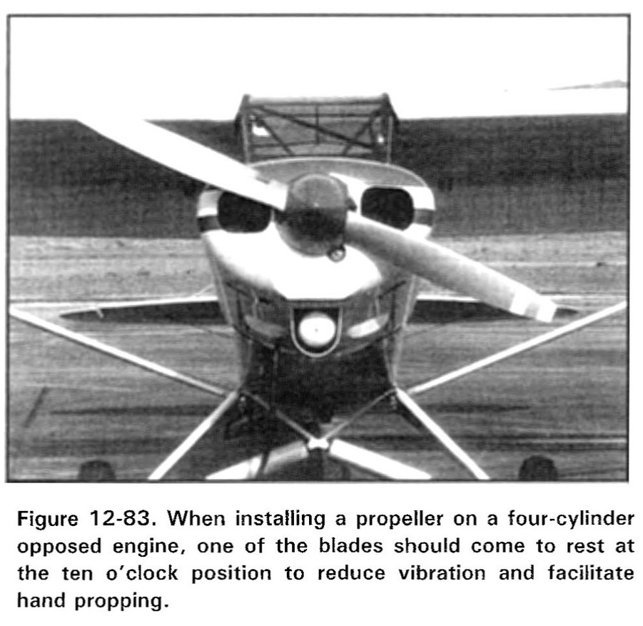
볼트, 워셔, 너트를 부착한 후 모든 하드웨어를 손으로 조입니다. 그런 다음 토크 렌치로 권장 순서에 따라 지정 값으로 볼트를 조입니다. 전형적 토크 값은 금속 프로펠러의 경우 35파운드-피트 이상, 목재 프로펠러의 경우 약 25파운드-피트입니다. 전형적 조임 순서는 교차(크로싱) 패턴으로 볼트를 토크하도록 요구합니다. 스컬 캡 스피너를 쓰면 두 프로펠러 장착 볼트 뒤에 장착 브래킷을 설치합니다. 장착 브래킷 설치 후 볼트와 워셔로 스컬 캡을 브래킷에 부착합니다. 풀 스피너를 쓰면 프로펠러를 장착하기 전에 후방 벌크헤드를 플랜지에 위치시킵니다. 프로펠러 장착 후 볼트를 삽입하기 전에 전방 벌크헤드를 허브 보스 앞에 놓습니다. 볼트를 조여 고정한 후 스피너를 통해 벌크헤드의 너트 플레이트로 기계 나사를 삽입해 스피너를 설치합니다. 스피너가 인덱스되어 있으면 진동을 피하기 위해 설치 중 인덱스 마크를 정렬합니다.After attaching bolts, washers, and nuts, tighten all hardware finger-tight, then use a torque wrench to tighten the bolts to a specified value in the recommended sequence—typical values are 35 foot-pounds or more for metal propellers and about 25 for wood, and the sequence requires torquing in a crossing pattern. With a skull cap spinner, a mounting bracket is installed behind two of the mounting bolts, and after installing it, attach the skull cap with a bolt and washer. With a full spinner, position the rear bulkhead on the flange before mounting the propeller, then place the front bulkhead on the hub boss before inserting the bolts; after tightening and securing them, install the spinner by inserting machine screws through it into nut plates on the bulkheads, aligning index marks if the spinner is indexed to avoid vibration.
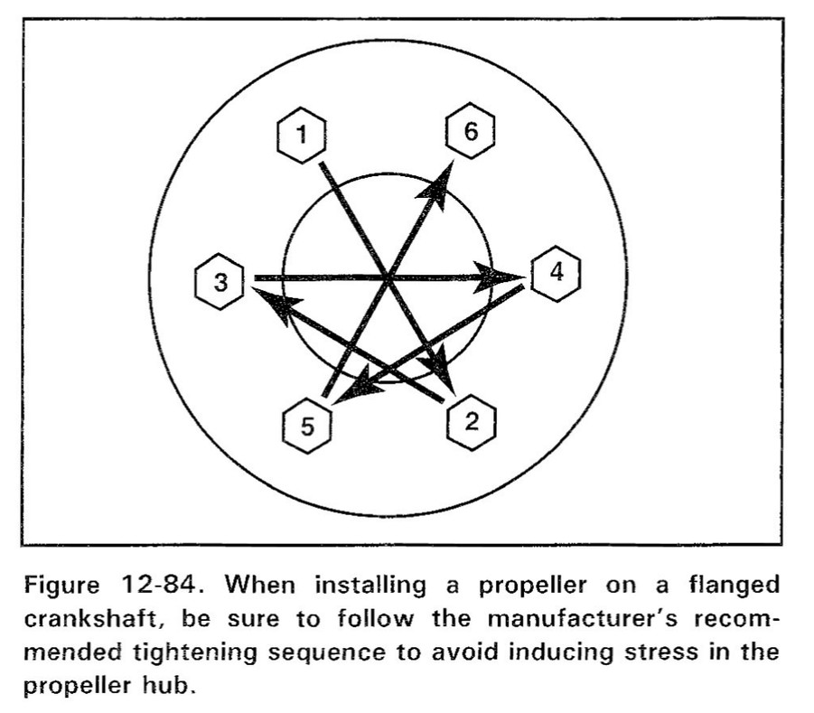
일부 Hartzell 강철 허브 프로펠러와 모든 Hartzell 컴팩트 프로펠러는 플랜지 크랭크축에 장착되도록 설계됩니다. 정속 프로펠러를 크랭크축에 장착하기 전에 허브 후면의 O-링을 승인된 윤활제나 엔진 오일 얇은 코트로 윤활합니다. 그런 다음 O-링이 손상되지 않도록 주의하며 프로펠러를 플랜지에 조심스럽게 장착합니다. McCauley 정속 프로펠러도 플랜지 크랭크축에 설치됩니다. Hartzell 프로펠러처럼 허브 후면의 O-링을 엔진 오일 얇은 코트로 윤활해 프로펠러가 크랭크축 플랜지에 고정될 때 그 움직임을 허용해야 합니다. 페더링 가능한 정속 프로펠러를 설치할 때 설치·조정 절차는 다른 정속 모델과 유사합니다. 다만 블레이드가 페더 위치에 있으면 절차가 달라질 수 있으므로 제조사 지침을 따릅니다.Some Hartzell steel-hub and all Hartzell compact propellers mount on flanged crankshafts; before mounting a constant-speed propeller, lubricate the O-ring in the rear of the hub with approved lubricant or a light coat of engine oil, then carefully mount it on the flange, keeping the O-ring from being damaged. McCauley constant-speed propellers also install on flanged crankshafts, and like Hartzell, the rear-hub O-ring must be lubricated with a light coat of engine oil to allow its movement as the propeller is secured to the flange. When installing a feathering constant-speed propeller, the procedures resemble other constant-speed models, but if the blades are feathered the procedure may differ, so follow the manufacturer's instructions.
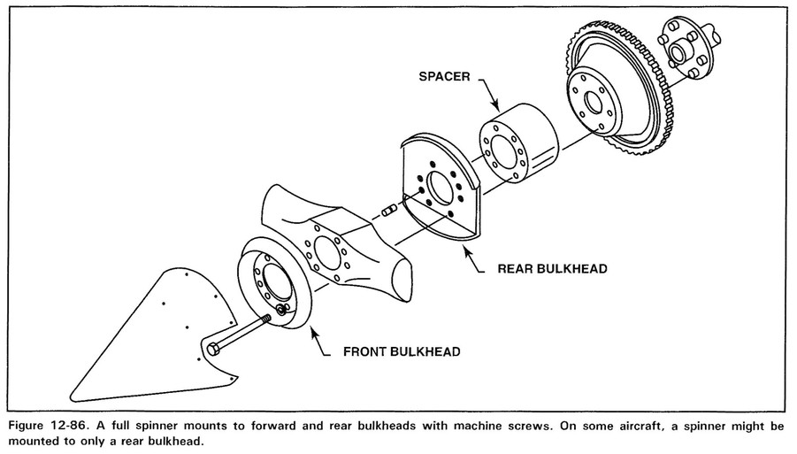
- A. 블레이드 섕크의 인덱스 마크.index mark on the blade shank.
- B. 허브 중심선(hub centerline).hub centerline.
- C. 블레이드 베이스.blade base.
- A. 블레이드가 핸드 프로핑(수동 시동) 위치에 오도록 프로펠러를 장착.install the propeller so that the blades are positioned for hand propping.
- B. 프로펠러를 정해진 한 위치로만 장착 가능(the propeller can only be installed in a given position).the propeller can only be installed in a given position.
- C. 프론트 콘이 핀에 바닥나는지 점검해야 함.the front cone should be checked for bottoming against the pins.
테이퍼·스플라인 샤프트 장착과 콘 보터밍·프로펠러 세이프티 심화 📙 Jeppesen 정독
Tapered/Splined Shaft Installation, Cone Bottoming, and Safetying테이퍼 샤프트 크랭크축은 오래된 저마력 엔진에서 발견됩니다. 이 크랭크축은 프로펠러를 샤프트에 맞추는 허브를 요구합니다. 프로펠러가 샤프트에서 회전하는 것을 막기 위해 큰 키웨이가 크랭크축 테이퍼와 프로펠러에 가공되어 키가 프로펠러를 제자리에 유지합니다. 테이퍼 샤프트에 목재 프로펠러를 설치할 때는 프로펠러 보스를 어댑터 허브 위에 설치하고 보스와 장착 볼트 사이에 페이스플레이트를 놓습니다. 이 페이스플레이트가 볼트의 압축 하중을 보스 전체 표면에 분산시킵니다. 새 고정피치 목재 프로펠러를 설치하면 첫 비행 후와 첫 25비행시간 후 장착 볼트의 조임을 검사합니다. 크랭크축에 프로펠러를 설치하기 전에 샤프트의 부식, 나사 상태, 균열, 키웨이 영역 마모를 검사합니다. 키웨이에 균열이 생기면 빠르게 퍼져 크랭크축 고장을 초래할 수 있으므로, 매 100시간이나 연차 검사 때 염료 침투로 키웨이를 검사하는 것이 좋습니다.Tapered-shaft crankshafts are found on older, low-horsepower engines and require a hub to adapt the propeller to the shaft; to prevent rotation on the shaft, a large keyway is machined into the crankshaft taper and the propeller so a key holds it in place. Installing a wood propeller on a tapered shaft, place the boss over the adapter hub and a faceplate between the boss and mounting bolts to distribute the bolts' compression load over the entire boss surface. For a new fixed-pitch wood propeller, inspect mounting-bolt tightness after the first flight and again after the first 25 flight hours. Before installing, inspect the shaft for corrosion, thread condition, cracks, and keyway wear—keyway cracks can spread rapidly and cause crankshaft failure, so it's good practice to inspect it with dye penetrant at every 100-hour or annual inspection.
프로펠러를 설치하기 전에 프러시안 블루 같은 액체 전사 잉크로 허브를 크랭크축에 트라이얼 핏합니다. 프러시안 블루는 가벼운 그리스 정도의 농도를 가진 짙은 파란색 잉크로, 두 짝 표면 간 접촉량을 드러냅니다. 크랭크축 테이퍼 부분에 잉크를 얇고 고르게 바른 뒤 키를 키웨이에 놓고 허브를 크랭크축에 설치해 리테이닝 너트를 토크합니다. 프로펠러를 제거하고 테이퍼 샤프트에서 프로펠러로 전사된 잉크량을 검사합니다. 잉크 전사는 최소 70퍼센트의 접촉 면적을 나타내야 합니다. 접촉 면적이 불충분하면 크랭크축과 허브를 검사해 원인을 규명합니다. 최소 접촉 면적을 얻을 때까지 폴리싱 컴파운드로 짝 표면을 래핑할 수 있으며, 표면을 래핑하면 추가 재조립 전에 허브와 크랭크축을 철저히 세척해 프러시안 블루와 폴리싱 컴파운드 흔적을 모두 제거합니다.Before installing, trial-fit the hub onto the crankshaft with a liquid transfer ink like Prussian blue—a dark blue ink the consistency of light grease that reveals contact between two mating surfaces. Apply a thin, even coat on the tapered section, place the key in the keyway, install the hub, and torque the retaining nut; then remove the propeller and inspect the ink transferred to it. Transfer should indicate a minimum 70 percent contact area; if insufficient, inspect crankshaft and hub for the cause. You can lap the mating surfaces with polishing compound until minimum contact is achieved, and if you lap them, thoroughly clean the hub and crankshaft of all Prussian blue and compound before reassembly.
스플라인 크랭크축은 대부분의 성형엔진, 일부 수평대향 엔진, 일부 직렬 엔진에서 발견됩니다. 스플라인 샤프트는 동일 치수의 홈과 스플라인, 그리고 허브가 샤프트에 한 위치로만 맞도록 보장하는 두 배 너비의 마스터 스플라인을 갖습니다. 스플라인 샤프트에 프로펠러를 설치하기 전에 크랭크축의 균열·표면 결함·부식을 검사합니다. 크랭크축과 허브 스플라인의 마모를 스플라인 간 허용 최대 간격보다 0.002인치 큰 go/no-go 게이지로 검사합니다. 게이지를 스플라인 길이의 20퍼센트 넘게 삽입할 수 없으면 스플라인은 사용 가능합니다. 게이지가 20퍼센트 넘게 삽입되면 허브나 크랭크축은 감항성이 없어 교체해야 합니다. 프로펠러 허브가 크랭크축에 중심을 맞추도록 프로펠러 허브 양쪽에 프론트·리어 콘을 설치합니다. 리어 콘은 보통 청동으로 만들며 설치 중 유연성을 허용하고 견고한 끼움을 보장하기 위해 스플릿되어 있습니다. 프론트 콘은 매칭 세트로 두 조각으로 만들며, 두 반쪽에 세트임을 식별하는 시리얼 번호가 표시됩니다. 프론트·리어 콘 외에 큰 리테이닝 너트가 프로펠러를 조여 제자리에 유지하는 데 쓰입니다.Splined crankshafts are found on most radials, some horizontally opposed, and some inline engines; the splined shaft has grooves and splines of equal dimensions and a double-width master spline ensuring a hub fits in only one position. Before installing, inspect the crankshaft for cracks, surface defects, and corrosion, and inspect crankshaft and hub splines for wear with a go/no-go gauge 0.002 inch larger than the maximum allowed spline space—splines are serviceable if you can't insert the gauge more than 20 percent of the spline length; if it goes more than 20 percent, the hub or crankshaft is unairworthy and must be replaced. To center the hub, front and rear cones install on each side: the rear cone is typically bronze and split for flexibility and a tight fit, while the front cone is two pieces as a matched set, its halves marked with a serial number as a set. Besides the cones, a large retaining nut tightens and holds the propeller in place.
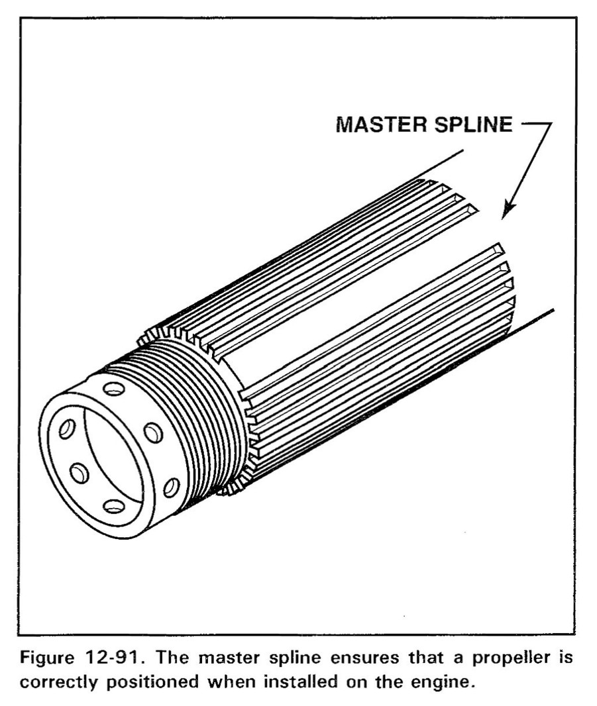
테이퍼 샤프트처럼 프로펠러의 트라이얼 설치로 적절한 끼움을 확인합니다. 리어 콘에 프러시안 블루를 얇게 바르고 리어 콘과 청동 스페이서를 크랭크축에 끼워 샤프트 끝까지 완전히 밉니다. 허브를 마스터 스플라인에 정렬해 리어 콘에 밀착시키고, 프론트 콘 반쪽에 프러시안 블루를 발라 리테이닝 너트 립 둘레에 놓은 뒤 너트를 허브에 설치해 적절한 토크로 조입니다. 토크 후 즉시 리테이닝 너트와 프론트 콘을 제거해 허브로 전사된 프러시안 블루량을 확인하는데, 최소 70퍼센트 접촉이 필요합니다. 그런 다음 허브를 크랭크축에서 제거해 리어 콘의 잉크 전사를 확인하며 역시 최소 70퍼센트가 필요합니다. 접촉이 불충분하면 특수 래핑 공구와 지그로 허브를 콘에 래핑합니다.Like the tapered shaft, complete a trial installation to ensure a proper fit: apply a thin coat of Prussian blue to the rear cone, slip the rear cone and bronze spacer onto the crankshaft all the way back, align the hub on the master spline and push it back against the rear cone, coat the front cone halves with Prussian blue and place them around the retaining-nut lip, then install and torque the nut. Immediately remove the nut and front cone and note the transfer to the hub—a minimum 70 percent contact is required—then remove the hub and note the rear cone's transfer, also requiring 70 percent; if insufficient, lap the hub to the cones with special lapping tools and fixtures.
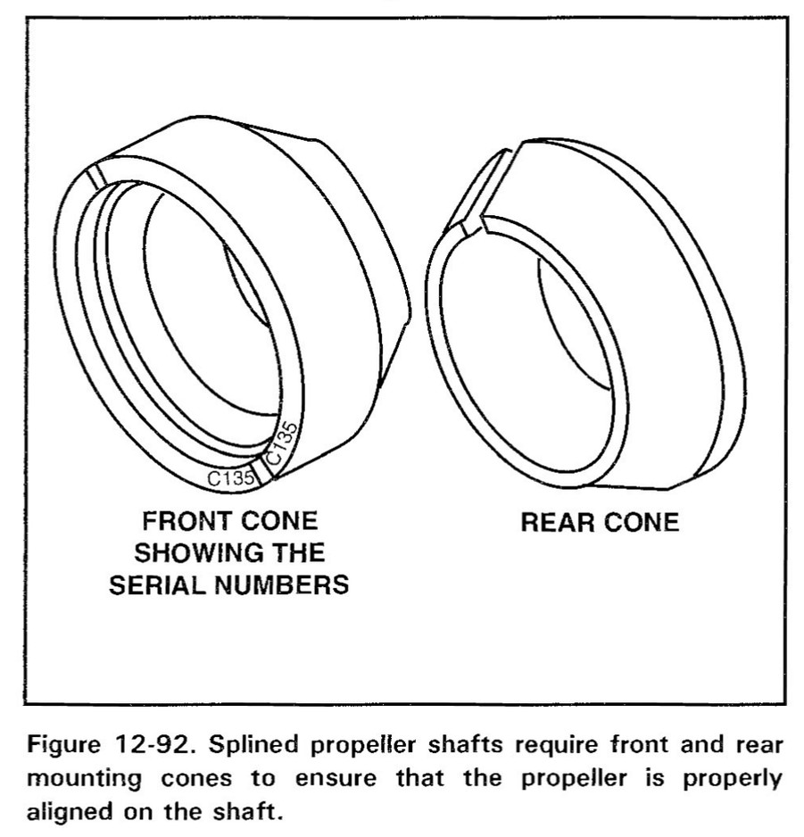
전사 점검에서 리어 콘의 잉크가 전혀 전사되지 않으면 리어 콘 보터밍(rear cone bottoming) 상태가 존재할 수 있습니다. 이는 허브가 리어 콘에 안착되기 전에 리어 콘의 정점(포인트)이 허브 후방 시트의 랜드에 접촉할 때 발생합니다. 리어 콘 보터밍을 바로잡는 한 방법은 표면판 위 사포로 콘 정점에서 최대 1/16인치를 제거하는 것입니다. 프론트 콘 보터밍은 프론트 콘 정점이 허브에 안착되기 전에 크랭크축 스플라인에 바닥날 때 발생합니다. 프론트 콘 보터밍의 징후는 리테이닝 너트를 토크한 후 허브가 샤프트에서 헐거운 것 또는 프론트 허브 시트로 프러시안 블루 전사가 없는 것입니다. 리어 콘 뒤에 최대 1/8인치 두께의 스페이서를 써서 프론트 콘 보터밍을 바로잡을 수 있는데, 이는 허브를 앞으로 이동시켜 허브가 프론트 콘에 제대로 안착되게 합니다. 허브와 스플라인 샤프트 간 적절한 끼움을 얻은 후 리어 콘을 재설치하고 프로펠러를 샤프트에 영구 장착합니다. 마스터 스플라인에 대한 프로펠러 허브 위치는 미리 정해지는데, 일부 설치는 특정 블레이드가 마스터 스플라인에 정렬되도록 요구하고, 다른 설치는 블레이드가 마스터 스플라인 위치에 수직이도록 요구하므로 특정 설치 요건은 엔진 정비 매뉴얼을 참조합니다.If no dye transfers from the rear cone, rear cone bottoming might exist—the rear cone's apex contacts the land on the hub's rear seat before the hub seats on the cone; one fix is removing up to 1/16 inch from the apex with sandpaper on a surface plate. Front cone bottoming occurs when the front cone's apex bottoms on the crankshaft splines before seating on the hub, indicated by the hub being loose after torquing the nut or no Prussian blue transfer to the front hub seat; correct it with a spacer no more than 1/8 inch thick behind the rear cone, moving the hub forward to seat properly on the front cone. After a proper fit, reinstall the rear cone and permanently mount the propeller—the hub position relative to the master spline is predetermined, some installations requiring a certain blade to align with it and others requiring blades perpendicular to it, so consult the engine maintenance manual.
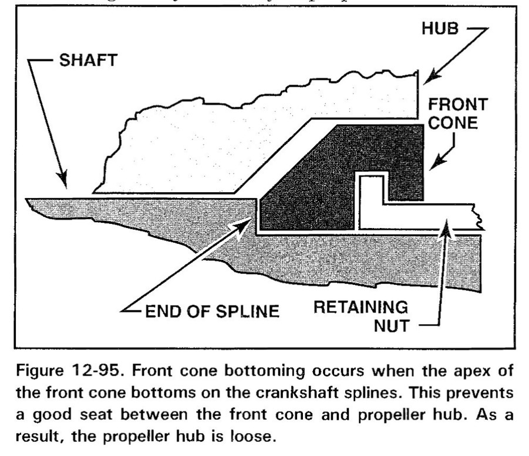
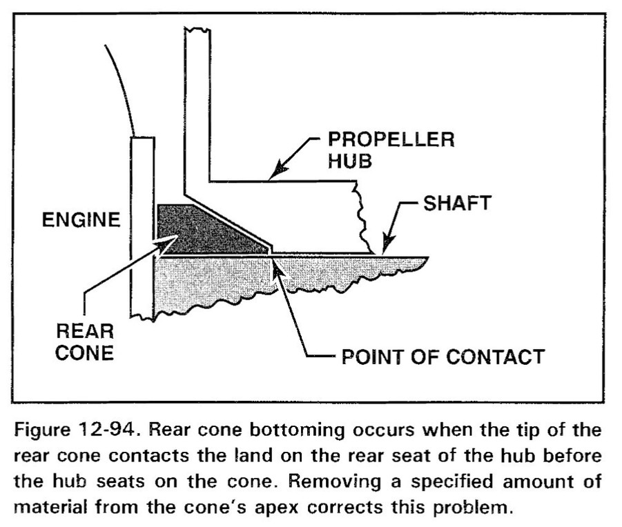
프로펠러가 적절히 조여진 후 기계적 안전 기구로 고정해야 합니다. 설치 유형이 다양해 프로펠러 설치를 세이프티하는 단일 방법은 없습니다. 플랜지 샤프트 설치는 가장 다양한 안전 방법을 갖습니다. 플랜지에 나사 인서트가 설치돼 있으면 프로펠러가 인서트에 조여진 볼트로 유지됩니다. 이 경우 볼트 헤드를 드릴하고 표준 세이프티 와이어 절차에 따라 0.041인치 스테인리스강 세이프티 와이어로 고정합니다. 나사 인서트가 플랜지에 압입되지 않았으면 볼트와 너트로 프로펠러를 유지합니다. 일부 설치는 추가 세이프티가 필요 없는 파이버 록 너트를 쓰지만, 너트를 규정대로 설치·토크해야 합니다.After a propeller is properly tightened, secure it with a mechanical safety mechanism; because installations vary, there's no single way to safety a propeller. A flanged-shaft installation has the largest variety of methods: if the flange has threaded inserts, bolts screwed into them hold the propeller, and the bolt heads are drilled and safetied with 0.041-inch stainless steel safety wire using standard procedures. If no threaded inserts are pressed into the flange, bolts and nuts hold the propeller, and some installations use fiber lock nuts requiring no additional safetying, though the nuts must be properly installed and torqued.
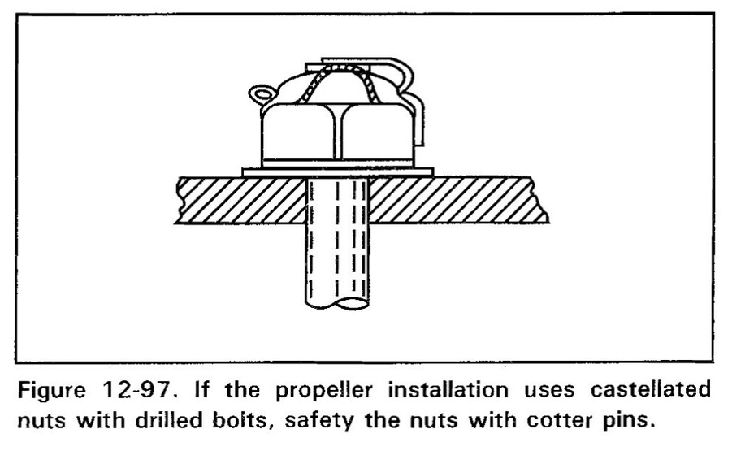
- A. 리어 콘 시트가 프론트 콘 시트보다 먼저 바닥남.The front cone becomes bottomed in the front propeller hub cone seat before the rear propeller hub cone seat has engaged the rear cone.
- B. 프론트 콘이 프로펠러 허브 콘 시트에 비스듬히 들어가, 부분만 조여도 리테이닝 너트가 단단히 조인 것처럼 보임(The front cone enters the front propeller hub cone seat at an angle causing the propeller retaining nut to appear tight when it is only partially tightened).The front cone enters the front propeller hub cone seat at an angle causing the propeller retaining nut to appear tight when it is only partially tightened.
- C. 프론트 콘이 샤프트 스플라인 끝에 닿아 프론트·리어 콘이 콘 시트에 조여지지 못함.The front cone contacts the ends of the shaft splines, preventing the front and rear cones from being tightened against the cone seats in the propeller hub.
- A. 프로펠러-돔 조합이 잘못됨.Propeller-dome combination is incorrect.
- B. 블레이드 각도가 잘못됨.Blade angles are incorrect.
- C. 리어 콘을 앞으로 이동시켜야 함(Rear cone should be moved forward).Rear cone should be moved forward.
- A. 스플라인 샤프트 위에 프로펠러 허브를 중심 정렬(센터링)(position the propeller hub on the splined shaft).position the propeller hub on the splined shaft.
- B. 프로펠러와 스플라인 샤프트 간 금속 접촉 방지.prevent metal-to-metal contact between the propeller and the splined shaft.
- C. 프로펠러 스플라인과 샤프트 스플라인 간 응력 감소.reduce stresses between the splines of the propeller and the splines of the shaft.
- A. 50시간마다와 연간 검사 시 볼트 토크 점검.Inspect the bolts for proper torque after every 50 hours and annual inspection.
- B. 장착 시 적정 토크로 조이고, 이후 점검 간격 없음.Install and tighten the bolts to the proper torque during installation; no inspection interval after that.
- C. 첫 비행 후와 첫 25시간 비행 후 볼트 토크 점검(Inspect the bolts for proper torque after the first flight and after the first 25 hours of flying).Inspect the bolts for proper torque after the first flight and after the first 25 hours of flying.
- A. 베어링 블루 색 전사(bearing blue color transfer).bearing blue color transfer.
- B. 마이크로미터.a micrometer.
- C. 서피스 게이지.a surface gauge.
🗣 ASA 구술시험 (Oral Exam) Typical Oral Questions
📝 ACS 객관식 퀴즈 ACS Multiple-Choice Quiz
프로펠러 작용력 5종과 비대칭 하중
Propeller Forces & Asymmetrical Loading📗 ASA Powerplant 보강프로펠러에는 5가지 힘이 작용합니다. 셋은 구조를 강하고 무겁게 하지만 쓸모가 없고, 둘(비틀림 힘)은 피치 변경 기구에 유용합니다.Five forces act on a propeller: three require it to be strong/heavy with no useful function; two twisting forces are useful for pitch change.
① 원심력(centrifugal force) — 가장 큰 힘. 블레이드를 허브에서 바깥으로 당김(허브 접합부 인장). ② 추력 굽힘력(thrust bending) — 추력이 블레이드 팁을 앞으로 굽힘. ③ 토크 굽힘력(torque bending) — 공기저항이 블레이드를 회전 반대로 굽힘.① Centrifugal force (largest) pulls blades outward. ② Thrust bending force bends tips forward. ③ Torque bending force bends blades against rotation.
④ 공력 비틀림력(ATF, aerodynamic twisting force) — 압력중심이 피치변경축 앞에 있어 블레이드를 고피치(high pitch)로 비틀려 함. ⑤ 원심 비틀림력(CTF, centrifugal twisting force) — 원심력이 블레이드를 회전면과 같은 평면으로 돌려 저피치(low pitch)로 비틀려 함. CTF가 ATF보다 커서, 무카운터웨이트 프로펠러는 CTF로 저피치가 됩니다.④ Aerodynamic twisting force (ATF) twists blades toward high pitch. ⑤ Centrifugal twisting force (CTF) twists toward low pitch; CTF is greater, so noncounterweight props go to low pitch.
비대칭 하중(P-factor) — 미국제 엔진은 대개 시계방향 회전(액세서리측 기준). 고받음각 상승 시, 내려가는 블레이드(우측)가 올라가는 블레이드보다 받음각·속도가 커져 추력이 커집니다. 이 불균형이 기수를 왼쪽으로 요잉시킵니다.P-factor: with a clockwise-rotating engine at high AoA, the descending (right) blade has a greater AoA/speed and more thrust, yawing the nose left.
팁 속도(tip speed) — 프로펠러 소음의 약 절반은 팁이 음속에 근접할 때 발생하는 진동입니다. 천음속 영역에서 팁이 작동하면 소음·효율 저하가 생기므로, 팁 속도를 제한하기 위해 프로펠러 지름·RPM을 설계합니다.Tip speed: about half of prop noise comes from tips nearing the speed of sound. Transonic tips cause noise and efficiency loss, so diameter/RPM are limited.
📄 원문: ASA AMT Powerplant, Ch.19 Propellers, p.666–668Source: ASA AMT Powerplant, pp.666–668
정속 프로펠러 작동·거버너·페더링 상세
Constant-Speed Operation Detail📗 ASA Powerplant 보강정속 프로펠러(constant-speed)는 거버너가 블레이드 각을 조절해 조종사가 설정한 RPM을 유지합니다. 세 가지 작동 상태가 있습니다.A constant-speed propeller uses a governor to vary blade angle and hold the pilot-set RPM. It has three operating conditions.
온스피드(on-speed) — 설정 RPM 유지, 파일럿 밸브가 오일 통로를 막아 피치 고정. 언더스피드(underspeed) — RPM이 낮으면 거버너가 프로펠러에서 오일을 빼고, 원심 비틀림력·스프링·가스압이 피스톤을 밀어 저피치(low pitch)로 → RPM 상승. 오버스피드(overspeed) — RPM이 높으면 거버너가 오일을 보내 피스톤을 밀어 고피치(high pitch)로 → 공기부하 증가로 RPM 하강.On-speed: RPM held, pilot valve blocks oil. Underspeed: governor drains oil, and centrifugal twisting force/spring/gas moves blades to low pitch (RPM rises). Overspeed: governor sends oil to high pitch (air load rises, RPM drops).
거버너 구성 — ① 기어펌프가 엔진오일압을 승압해 피스톤을 구동 ② 플라이웨이트(flyweight)가 원심력으로 파일럿 밸브를 올림 ③ 스피더 스프링(speeder spring)이 플라이웨이트 토를 눌러 균형. 조종사가 프로펠러 레버로 조정 웜(worm)을 돌려 스피더 스프링 압축을 바꾸면 설정 RPM이 변합니다.Governor: a gear pump boosts oil pressure; flyweights raise the pilot valve by centrifugal force; the speeder spring opposes them. The prop lever turns an adjusting worm to change speeder-spring compression and thus the set RPM.
카운터웨이트식 vs 무카운터웨이트식 — 카운터웨이트 프로펠러는 오일압이 저피치로, 원심력이 고피치(페더)로. 무카운터웨이트(예 McCauley·Hartzell 소형)는 오일압이 고피치로, 스프링·원심비틀림력이 저피치로 작동해 방향이 반대입니다.Counterweight props: oil to low pitch, centrifugal force to high pitch (feather). Non-counterweight props (small McCauley/Hartzell): oil to high pitch, spring/twisting force to low pitch—opposite.
페더링(feathering) — 엔진 정지 시 블레이드를 기류와 평행(약 90°)으로 세워 항력·풍차회전(windmilling)을 없앰. 다발기 필수. 하이드로매틱(Hamilton Standard)은 페더 버튼→홀딩코일→전동펌프로 고압오일 공급. 언페더는 역방향 오일. 역피치(reversing) 정속 프로펠러는 블레이드를 음(-)의 각으로 돌려 착륙 후 제동(베타 영역).Feathering aligns blades with the airflow (~90°) to kill drag/windmilling—essential on multi-engine. The Hamilton Standard Hydromatic uses a feather button, holding coil, and electric pump. Reversing props rotate blades to negative angles for landing braking (beta range).
📄 원문: ASA AMT Powerplant, Ch.19 Propellers, p.676–689Source: ASA AMT Powerplant, pp.676–689
FAA 핸드북 전체 도면
FAA Handbook FiguresNo FAA Handbook figures for this chapter, or not yet uploaded.